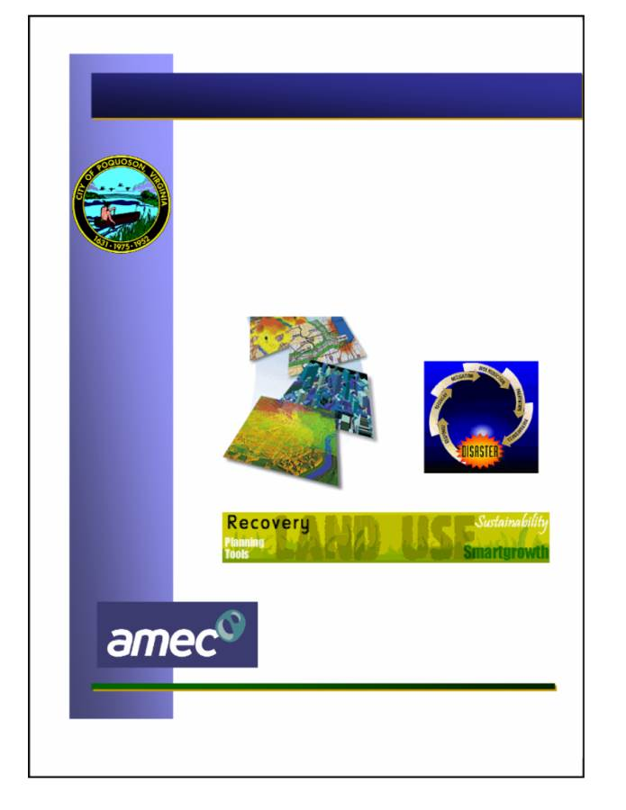
City of Poquoson, Virginia
Multi-Hazard Mitigation Plan
i
September 14, 2009
City of Poquoson, Virginia
Multi-Hazard Mitigation Plan
AMEC Earth & Environmental, Inc.
355 South Teller Street, Suite 300
Lakewood, Colorado 80226
City of Poquoson, Virginia
Multi-Hazard Mitigation Plan
ii
City of Poquoson
Multi-Hazard Mitigation Plan
September 2009
Developed by the City of Poquoson with professional planning assistance from
AMEC Earth and Environmental, Denver, CO
Hazard Mitigation and Emergency Management Programs

City of Poquoson, Virginia
Multi-Hazard Mitigation Plan
i
Executive Summary
In order to reduce or eliminate the long-term risk to human life and property from natural hazards, the City
of Poquoson, Virginia prepared this Multi-Hazard Mitigation Plan. Comprised equally of citizens and
government representatives from Poquoson and neighboring communities, the Poquoson Hazard
Mitigation Planning Committee (HMPC) met regularly during 2004 to generate the elements of this plan,
and convened again in 2008/2009 to update the plan to reflect current conditions. The Poquoson City
Council has reviewed and officially adopted the plan, making it a governing document for their
community. AMEC Earth & Environmental, Inc., was contracted to assist the committee throughout the
planning process, both for the original plan and the 2008/2009 update. AMEC’s role included facilitating
all meetings of the HMPC, preparing presentations for all Public Meetings, and instructing committee
members about the role of mitigation in hazard preparedness. For the original plan and the update,
AMEC coordinated the reviews and comments of committee members, and other state agencies including
VDEM, and FEMA.
This plan has been prepared, implemented and updated in accordance with the requirements of the
Disaster Mitigation Act of 2000. This legislation reinforced the importance of pre-disaster infrastructure
mitigation planning to reduce disaster losses nationwide, and was aimed primarily at streamlining federal
disaster relief and programs to promote mitigation activities. By adopting this plan, Poquoson will be
better prepared to integrate mitigation actions into other community programs by:
• building public support for mitigation activities,
• developing effective public education policies regarding mitigation, and
• obtaining disaster-related grants in the aftermath of a disaster.
The elements of this plan coincide with the primary planning tasks performed by the HMPC. First, the
committee conducted a risk assessment by analyzing and prioritizing the critical natural hazards that
threaten the region: floods, wind events, sea level rise, wildfires, and winter storms. Sea level rise was
added to the list of critical hazards during the 2008/2009 update. The vulnerability to each critical hazard
was examined in terms of assets at risk by dollar value, and critical facilities (police/fire stations, schools,
etc.) at risk. A capability assessment examined existing programs and mechanisms in place to mitigate
the effects of natural hazards.
Armed with a detailed risk assessment, the HMPC set regional mitigation goals to address areas where
improved capabilities could reduce vulnerability. Goals, and objectives for achieving the goals, were
further refined into mitigation alternatives, or “recommended action items”. These detailed tasks form the
core of the plan, and can be broken down into the following categories:
• prevention,
• property
protection,
• structural
projects,
• natural
resource
protection,
• emergency services, and
• public
information.
With the adoption of this plan, the HMPC is converted to a permanent advisory body referred to as the
Mitigation Coordinating Committee (MCC) whose primary duty is to see the plan successfully carried out.
Plan maintenance must be an ongoing effort to monitor and evaluate the implementation of the plan, and
to update the plan as progress, roadblocks, or changing circumstances are recognized. Monitoring and
updating will take place through an annual review by the MCC and a five-year written update to be
submitted to the Virginia Department of Emergency Management and FEMA Region III, unless disaster or
other circumstances lead to a different timeframe.

City of Poquoson, Virginia
Multi-Hazard Mitigation Plan
v
List of Figures
Figure 1. City of Poquoson Location Map..................................................................................................... 8
Figure 2. Poquoson Seismic Risk .............................................................................................................. 17
Figure 3. Nationwide Flash Density Map, 1996 - 2005............................................................................... 21
Figure 4. Sample of Poquoson Flood Insurance Rate Map (FEMA) ......................................................... 23
Figure 5. Schematic of Typical Coastal Storm Surge (NOAA) .................................................................. 25
Figure 6. Storm Tracks within 100 miles of Poquoson, 1970 – 2008 ........................................................ 26
Figure 7. Yorktown Rd and Poquoson Ave, March 1962 Storm (USACE, 1971) ...................................... 31
Figure 8. Water-level records, Gloucester Point, VA, 1950 – 2003. .......................................................... 33
Figure 9. Water-level records, Sewells Point, VA, 1927 – 2006. ............................................................... 33
Figure 10. Mean Sea Level Trends for NOAA stations nearest Poquoson (NOAA, 2009) ....................... 34
Figure 11. Astronomical and storm tides for 1962 Storm (NOAA, 2008)................................................... 35
Figure 12. Map of FEMA Floodplain, Critical Facilities, and Repetitive Loss Properties............................ 41
Figure 13. Map of HAZUS-MH 100-Year Flood Depth ............................................................................... 42
Figure 14. Poquoson HAZUS-MH Flood Loss Map by Census Block and Elevated Structures ............... 46
Figure 15. Poquoson’s Emergency Evacuation Route Detail .................................................................... 50
Figure 16. HURREVAC Model Results....................................................................................................... 53
Figure 17. Poquoson Hurricane Storm Surge Inundation.......................................................................... 54
Figure 18. Wildfire Risk Map ....................................................................................................................... 57
Figure 19. Annual Accumulation of Snowfall in Virginia ............................................................................ 60
Figure 20. City of Poquoson Unofficial Zoning Map .................................................................................. 66
Figure 21. Poquoson Sign Board, Victory Boulevard ................................................................................ 68
Figure 22. Peninsula Evacuation Routes (in Green) ................................................................................. 70
Figure 23. HMPC at work in February 2009. ............................................................................................. 76

City of Poquoson, Virginia
Multi-Hazard Mitigation Plan
6
1. Introduction
The Disaster Mitigation Act of 2000 (DMA 2000), approved by Congress and signed into law (Public Law
106-390) in October 2000, is a key component of the Federal government’s attempt to reduce the rising
cost of disasters. The Act establishes the Pre-Disaster Mitigation Grant Program (PDM) and new
requirements for the post-disaster Hazard Mitigation Grant Program (HMGP). It emphasizes the
importance of mitigation planning in communities.
DMA 2000 requires local governments to develop and submit mitigation plans to qualify for PDM and
HMGP funds. Specifically, the Act requires that the plan demonstrate “a jurisdiction’s commitment to
reduce risk from natural hazards, serving as a guide for decision makers as they commit resources to
reducing the effects of natural hazards.” The final plan must be adopted by the jurisdiction and then
approved by the Federal Emergency Management Agency (FEMA).
As part of an overall community planning effort in 2004, the City of Poquoson (“City”) developed a Natural
Hazard Mitigation Plan pursuant to the requirements of DMA 2000. The City also incorporated additional
planning steps to meet the requirements of the Community Rating System (CRS) and Flood Mitigation
Assistance (FMA) programs. Doing so helps the City meet some of the eligibility requirements for these
additional programs as well as programming administered through the US Army Corps of Engineers
(USACE). Qualifying activities for the CRS program contribute to a reduction in the cost of flood insurance
for all flood insurance policy holders in Poquoson.
The term “hazard mitigation” refers to any sustained action taken to reduce or eliminate long-term risk to
human life and property from hazards. Planning is the process of setting goals, developing strategies, and
outlining tasks and schedules to accomplish these goals. In preparing this plan, the City identified natural
hazards that threaten the community, determined the likely impacts of those hazards, assessed the
community’s vulnerability to the studied hazards as well as their capability to address those hazards, set
mitigation goals, and determined and prioritized appropriate strategies that would lessen the potential
impacts.
This plan represents the five-year update to the 2004 plan, and includes a fresh review of Poquoson’s risk
and vulnerability, state and regional capabilities, and revised local capabilities. Additionally, the Hazard
Mitigation Planning Committee reconvened in 2009 and updated mitigation goals, objectives and
recommended actions. As part of the ongoing mitigation planning process, this plan is the result of the
2009 mitigation evaluation.
1.1 Scope
The City of Poquoson’s Multi-Hazard Mitigation Plan is a single jurisdiction plan that identifies goals,
information, and measures for hazard mitigation and risk reduction to make the community more disaster
resistant and contribute to the City’s long-term sustainability. The plan not only addresses current
concerns, but can also be used to help guide and coordinate mitigation activities and local policy
decisions for future land use.
This Plan follows DMA 2000 planning requirements and associated guidance for developing Local Hazard
Mitigation Plans. This guidance sets forth a four-task mitigation planning process: 1) organize resources,
2) assess hazards and risks, 3) develop a mitigation plan, and 4) evaluate your work. The plan also
utilizes the process set forth in FEMA’s Crosswalk Reference Document for Review and Submission of
Local Mitigation Plans.
1.2 Plan Organization
The City of Poquoson’s Multi-Hazard Mitigation Plan is organized into five main sections. The
organization of the plan is as follows:
City of Poquoson, Virginia
Multi-Hazard Mitigation Plan
7
Table 1. Plan Organization
Section
Number
Title
1 Introduction
2 Community
Profile
3 Planning
Process
4
Hazard Identification and Risk Assessment
5 Mitigation
Strategy
6
Plan Implementation and Maintenance
2009 Updates to Section 1 included adding an introductory paragraph to indicate that this plan has been
updated from the original 2004 plan. Each section will contain a paragraph at the end briefly summarizing
the reviews or updates made for the 2009 update.
2. Community Profile
2.1 Location and Geography
Poquoson, Virginia is located on the eastern tip of Virginia’s Lower Peninsula bordered by the Poquoson
River on the north, Back River and Wythe Creek on the south, and the Chesapeake Bay on the east. The
City is greatly influenced by the surrounding bodies of water and has 116 miles of shoreline. Poquoson’s
immediate neighboring communities are York County to the west and the City of Hampton to the south
(Figure 1).
The topography of Poquoson is typical of the lower Tidewater Virginia area bordering the Chesapeake
Bay. The terrain is generally flat, and there are numerous inlets, marshes, and creeks forming many
smaller peninsulas. Land elevations in many of these developed areas seldom exceed five feet National
Geodetic Vertical Datum (NGVD); the majority of the City is less than seven feet NGVD.
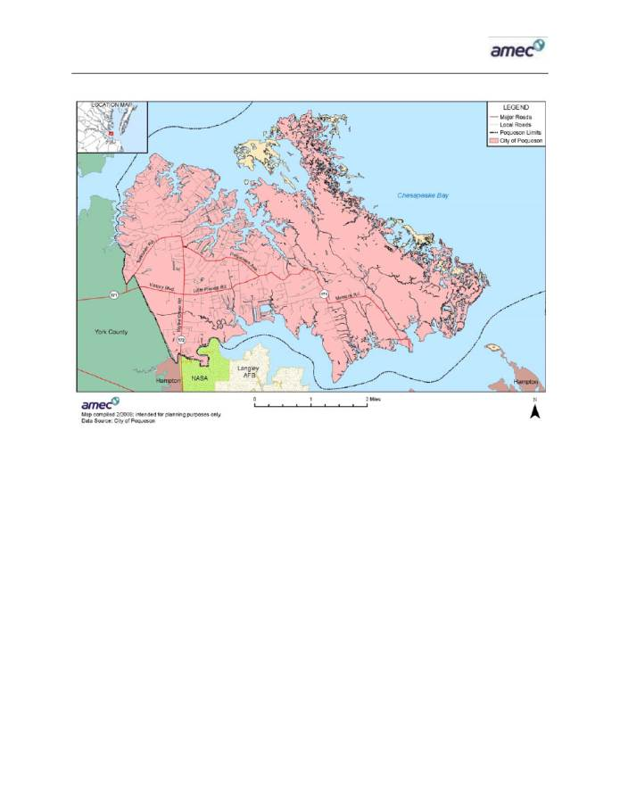
City of Poquoson, Virginia
Multi-Hazard Mitigation Plan
8
Figure 1. City of Poquoson Location Map
The name "Poquoson” comes from a Native American term that has been translated as either "flat land"
or "great marsh.” The City encompasses a total area of 78.4 square miles (mi
2
); 15.5 mi
2
of land and 62.9
mi
2
of water. The total area is 80.21-percent water. Plum Tree Island National Wildlife Refuge covers
approximately 5.5 mi
2
and dominates the eastern portion of the City. Together with privately owned salt
marsh lands, the area makes up the largest saline marsh in the lower Chesapeake Bay.
Poquoson enjoys mild winters and warm, humid summers, influenced by proximity to the Atlantic Ocean
and the Gulf Stream ocean current. The average annual temperature is 59 degrees Fahrenheit. January
is the coldest month on average, while July is the hottest. The average annual rainfall is about 44 inches
and is well distributed throughout the year, with the wettest months typically coming in the summer.
2.2 Land Use
Poquoson serves as a bedroom community to the rest of the greater Peninsula area, with most residents
commuting outside the community to work. According to the City’s 2008 Comprehensive Plan, there are
approximately 10,000 acres of land in Poquoson. In 2006, 4,012 acres or approximately 40-percent of
this area was developed. Approximately 5,000 acres or 50-percent of the City’s total land area is
residential. This includes property currently occupied by single-family and multi-family residences, as well
as manufactured homes. It also includes woodland and open space areas designated for future
residential use. The majority of the residential land, nearly 99-percent, is zoned for single-family
detached dwellings. There are six multi-family complexes containing 530 multi-family units located within
the City, and there are approximately 138 manufactured homes in the City, primarily in Shady Oaks
Mobile Home Park.

City of Poquoson, Virginia
Multi-Hazard Mitigation Plan
9
Poquoson has 223 acres (2.2-percent) of commercial land, located primarily along Wythe Creek Road.
Land for manufacturing and warehousing includes 99.5 acres or about 1-percent of the total. The City
has 266 acres (2.6-percent of total) used for public and semi-public purposes, including parks, schools,
City Hall, Masonic Hall, churches, cemeteries and the 40-acre landfill.
Undeveloped land in Poquoson accounts for 5,987 acres or approximately 60-percent of the City’s total
area. Included in the undeveloped acreage is approximately 4,537 acres of conservation land. The
majority of the conservation land is the Plum Tree Island National Wildlife Refuge, which is owned by the
Federal Government. The refuge, due to its isolation, was historically used for stock grazing, hunting,
and fishing. The Federal Government acquired it for an Aviation Experimental Station in 1917, using it as
a gunnery and bombing practice range until the latter part of the 1950's. In 1972, the area was transferred
to the Department of the Interior for a wildlife refuge. As such, the flood-prone refuge provides immense
natural and beneficial functions by serving as a protective barrier from wind and waves during coastal
storms, and by providing habitat for rare species. The completely undeveloped refuge serves as a
nursery for numerous crabs and fish, and provides shelter and hunting grounds for numerous mammals
and furbearers. This distinctive ecosystem of floodplains, wetlands and water bodies, large and small, is
marked by a diverse population of plants and animals that provide habitat and critical sources of energy
and nutrients for organisms in adjacent terrestrial and aquatic ecosystems.
The City is divided into three Planning Districts, each of which has unique land use characteristics. The
Eastern Planning District has extensive marshlands, including Plum Tree Island National Wildlife Refuge.
Development is limited, and past development trends reflect only minor in-fill development and family
subdivisions. The district is near full build-out. The district maintains a low population density overall,
although development has tended to be compacted along roadways. The Central Planning District is
more densely populated with multi-family housing units, commercial development, and more usable land
area than the Eastern Planning District. The Western Planning District is predominantly development
with low-density single-family homes. Large tracts of developable land still exist within this district.
Development patterns in all of the Planning Districts have been influenced by the City’s geography and,
particularly, the location of principal roads. The many necks of land and waterfront inlets created many
desirable waterfront home sites. Development branched off of roadways that reach into the these necks,
and was limited only by the presence of extensive tidal wetlands. Additionally, public sewer extended into
many new areas of the City in 1999, making more land area available to be development. The 2008
Comprehensive Plan indicates that future land use is expected to be primarily single-family homes with
medium to low densities, complimented by small, but well planned moderate density residential
developments.
2.3 History
Poquoson was part of York County for over three centuries and incorporated as a town in 1952. It was
later chartered as a city in 1975. It is the oldest continuously named city in Virginia (City of Poquoson
website, undated). General agriculture and seafood related businesses remained the predominant
activities of the City until the construction of Langley Field in 1917 prior the United States’ entry into World
War I (Cook, 2000). The Field offered residents many employment opportunities either working directly for
Langley Field, its many military contractors, or ancillary businesses. Since World War II, Poquoson has
been a residential community for people working all over the peninsula.
2.4 Population
Poquoson is an independent City in the Commonwealth of Virginia. It is a mature city, having experienced
its most significant population growth in the 1970s, when its population grew to 8,300 from 5,441, an
increase of slightly more than 50-percent for the decade. Up until 2000, the rate of population growth
declined rapidly. Since 2000, the City’s population growth rate has increased slightly. According to the
most recent population estimates from the Weldon Cooper Center for Public Service, Poquoson’s
population increased by 225 persons between 2000 and 2008. The 2008 provisional estimate of the
City of Poquoson, Virginia
Multi-Hazard Mitigation Plan
10
City’s population is 11,791. The 2000 Census reported a population of 11,566. The change reflects
migration into the City. (Weldon Cooper Center for Public Service, 2008).
Population projections prepared by the Virginia Employment Commission (VEC) show moderate growth,
with the projected population in 2030 estimated to be 12,782, accounting for an annual growth rate of just
over 0.3-percent (VEC, 2008). This represents an increase of 10.5-percent over the 2000 Census
population. This is consistent with growth rates observed since 2000. Table 2 provides a more detailed
breakdown of Poquoson’s past, present, and projected populations compared with both the Hampton
Roads region and the State.
Table 2. Poquoson Population Summary
Locality
2000 Census
Population
2008 Provisional Population
(% change 2000-2008)*
2030 Projected Population
(% change 2000-2030)**
Virginia
7,079,030
7,769,089 (9.7%)
9,825,019 (38.8%)
Hampton Roads Planning
District (encompasses 16
localities)
1,533,739
1,601,689 (4.4%)
1,914,690 (24.8%)
City of Poquoson
11,566
11,791 (1.9%)
12,782 (10.5%)
York County
56,297
64,526 (14.6%)
86,823 (54.2%)
City of Hampton
146,437
144,204 (-1.5%)
144,650 (-1.2%)
* Source: Weldon Cooper Center for Public Service, 2008.
** Source: VEC, 2008.
The age distribution of the residents of Poquoson is showing signs of significant change. Based on
Census data, the median age of Poquoson residents increased to 39.5 in 2000 from 31.2 in 1980, an
increase of 8.3 years. The VEC population projection indicates that the median age of Poquoson
residents will continue to increase, with the percentage of citizens at the age of 65 or higher increasing to
32-percent of the total population in 2030 from 11-percent in 2000.
2009 Updates to Section 2 included adding an improved location map, providing a summary of local
climate, and updated land use information excerpted from the latest draft of the City’s Comprehensive
Plan. The population data was updated to include more recent information from the Weldon Cooper
Center and from the Virginia Employment Commission. Table 2 was added to show a comparison with
nearby communities, the region and Virginia.
3. The Planning Process
The City of Poquoson contracted with AMEC Earth & Environmental (AMEC) to assist with the facilitation
and development of the City’s first Multi-Hazard Mitigation Plan, and again in 2008 to assist with the
process of updating the plan. AMEC assisted the City with the following tasks for each planning process:
• Establishment of a planning organization for the City;
• Meeting all of the DMA requirements as established by federal regulations, following FEMA’s planning
guidance and Community Rating System planning guidance;
• Facilitation of the planning process;
• Identification of the data requirements and conduct of the research and documentation necessary to
augment and, subsequently in 2009, to update that data;
• Development and facilitation of the public input process;
• Production of the draft and final plan documents;
• Submission for acceptance by FEMA Region III.
AMEC assisted the City with the establishment of the process for this planning effort utilizing the DMA
2000 planning requirements (Table 3), and FEMA’s associated guidance. This guidance is structured
City of Poquoson, Virginia
Multi-Hazard Mitigation Plan
11
around a generalized 4-phase approach. AMEC also integrated an older, more detailed 10-step planning
process that was still required, at the time this effort was initiated, for other FEMA mitigation programming
such as the FEMA, CRS and FMA programs. Thus, AMEC helped the City formulate a single planning
process and subsequent update process that combined these two sets of planning requirements together
to meet the requirements of six other programs: CRS, DMA, FMA, HMGP, FEMA’s Pre-Disaster
Mitigation Program, and new flood control projects authorized by the U.S. Army Corps of Engineers
(USACE).
Table 3. The Planning Process
Disaster Mitigation Act Planning Regulations (44 CFR 201.6)
CRS/FMA Planning Steps
Planning Process
201.6(c)(1)
1. Organize
201.6(b)(1)
2. Involve the public
201.6(b)(2) & (3)
3. Coordinate
Risk Assessment
201.6(c)(2)(i)
4. Assess the hazard
201.6(c)(2)(ii) & (iii)
5. Assess the problem
Mitigation Strategy
201.6(c)(3)(i)
6. Set goals
201.6(c)(3)(ii)
7. Review possible activities
201.6(c)(3)(iii)
8. Draft an action plan
Plan Maintenance
201.6(c)(5)
9. Adopt the plan
201.6(c)(4)
10. Implement, evaluate, revise
3.1 Local Government and Community Participation
The DMA planning regulations and guidance stress that each local government seeking the required
FEMA approval of their mitigation plan must:
• Participate in the process;
• Detail areas within the Planning Area where the risk differs from that facing the entire area;
• Identify specific projects to be eligible for funding; and
• Have the governing board adopt the plan.
For the City of Poquoson’s Hazard Mitigation Planning Committee, participation includes:
• Attendance at the Planning Committee meetings;
• Providing data that is requested by the Planning Committee;
• Reviewing and providing comments on draft plans;
• Advertising, coordinating, and participating in the Public Input meetings; and
• Coordination of plan adoption by the City.
Step 1: Get Organized – Building the Planning Team
The City of Poquoson’s Hazard Mitigation Planning Committee was comprised of key City and
stakeholder representatives. The Assistant City Manager chaired the team in 2004, and the Emergency
Management Deputy Coordinator chaired the team for the 2009 update. With the Committee’s
commitment to participate, AMEC’s first step was to establish both a framework and organization for the

City of Poquoson, Virginia
Multi-Hazard Mitigation Plan
12
development of this Plan. The original Hazard Mitigation Planning Committee met seven times over an
eight-month period in 2004, and again convened and met five times in 2008/2009 to update the plan.
Meeting dates and topics in 2008/2009 included:
December 4, 2008
Preliminary Project Coordination Meeting to review existing plan
February 17, 2009
Meeting #1 to review updated hazard data and existing mitigation strategy
February 18, 2009
Public Meeting #1/Stakeholder’s Workshop to review updated hazard data
February 20, 2009
Meeting #2 to set mitigation goals and objectives
February 23, 2009
Meeting #3 to develop mitigation strategy through recommended actions
May 5, 2009
Meeting #4 to review public comments and final mitigation strategy
May 5, 2009
Public Meeting #2
Typical City representatives at each meeting included the police department, fire department,
engineering, planning, public works, utilities, and finance departments, as well as the local school board.
A list of Committee members is included in Appendix A. Attendance and agendas for each of the
Committee meetings are on file with the City Manager’s Office. The Committee will stay in existence for
the purpose of implementing and updating this plan.
Step 2: Plan for Public Involvement – Engaging the Public
An open public planning process was utilized that provided opportunities for the public and stakeholders
to comment on the plan at all stages of its formation, and again in 2008/2009 for the update process. At
Committee Meeting #1 in December 2008, the plan for public involvement in the update process was
discussed and agreed upon. Early on, during the plan development stage, interested members of the
general public were invited to participate on the Committee. The invitations were extended through a
Planning Public Awareness Campaign that consisted of an initial press release and targeted emails.
Committee meeting schedules, minutes, and plan updates were also posted on the City’s web page
under Projects at http://www.ci.poquoson.va.us/. Meeting reminders were posted on an outdoor bulletin
board near City Hall on Victory Boulevard. All articles, press releases and Internet postings are on file
with the City Manager’s Office.
Additionally, a second press release and web posting were developed before the public review (and
formal adoption) of the original Mitigation Plan and again before the update. This public review took place
through two formal Public Meetings. Stakeholder and public comments were reflected in the preparation
of the Plan, including those sections addressing mitigation goals and action strategies. Coordination with
the neighboring communities of Hampton and York County will continue with participation from
representatives of each community’s committees cross-participating in each planning process.
Prior to beginning the 2008/2009 update process, Poquoson City Council passed a resolution November
24, 2008, reconvening the Hazard Mitigation Planning Committee and formally tasking the committee with
updating the plan. The resolution is on file with the Council Clerk. The update process included
redevelopment of a plan for public involvement that was implemented through press releases, a heavily
publicized Public Workshop in February 2009, public review of the plan and the revisions, and two formal
Public Meetings prior to adoption of the plan.
Step 3: Coordinate with other Departments and Agencies
Early in the planning process, the Committee determined that the participation of other state and federal
agencies could assist in the data collection, mitigation and action strategy development, and plan
approval process. Based on their involvement in hazard mitigation planning, their landowner status in the
City, and/or their interest as a neighboring jurisdiction, representatives from the following key agencies
were invited to participate on the Committee:

City of Poquoson, Virginia
Multi-Hazard Mitigation Plan
13
• FEMA Region III, Mitigation Planning Division (did not send a representative)
• Virginia Department of Emergency Management, Recovery and Mitigation Division, Robbie Coates,
Mitigation Planning Coordinator
• Virginia Department of Conservation and Recreation, Division of Dam Safety and Floodplain
Management, Charley Banks, Floodplain Program Engineer
• Virginia Institute of Marine Science (VIMS), Dr. John Boone, Professor Emeritus – new in 2009
• City of Hampton, Tracy Hanger, Hampton Fire Division and Poquoson property owner – new in 2009
• York County (did not send a representative) – newly invited in 2009
In addition to the agencies listed above, the Committee used the resources of the agencies set forth
below in the development of this Plan. Specifically, technical data, reports, and studies were obtained
from these agencies either through web-based resources or directly from the agencies:
• National Climatic Data Center (NCDC)
• Virginia Department of Emergency Management (VDEM)
• Virginia Department of Conservation and Recreation (VDCR)
• Hampton Roads Planning District Commission (HRPDC)
• Virginia Department of Health (VDH)
• National Oceanic and Atmospheric Association (NOAA)
• Federal Emergency Management Agency (FEMA)
• National Weather Service (NWS)
• U.S. Geological Survey (USGS)
• Virginia Department of Forestry (VDOF)
3.2 Relationship to Other Community Planning Efforts and Hazard
Mitigation Activities
Coordination with other community planning efforts is paramount to the success of this Plan. Hazard
mitigation planning involves identifying existing community policies, tools, and actions that will reduce a
community’s risk and vulnerability to natural hazards. The Committee utilized a variety of comprehensive
planning mechanisms such as land use and master plans, emergency response and mitigation plans, and
municipal ordinances and building codes to guide and control community development. Integrating
existing planning efforts and mitigation policies and action strategies into this Hazard Mitigation Plan
establishes a credible and comprehensive plan that ties into and supports other community programs.
This Plan, therefore, links the specific natural hazards that present a risk to the community with the
existing mitigation elements found in the various City plans. The original Plan and the 2008/2009 update
of this Plan used information included in the most current version of the following community plans,
studies, reports, and initiatives:
• City of Poquoson Comprehensive Plan
• Municipal Code, City of Poquoson
• Virginia Uniform Statewide Building Code
• Flood Insurance Study and Flood Insurance Rate Maps for the City of Poquoson
• City of Poquoson Fire History (Fire Department)
• 2003 Hurricane Isabel Damage Survey Reports (DSRs)
• City of Poquoson Tax Assessor and Land Use data
• City of Poquoson Building Department Elevation Certificate data for new, elevated and substantially
improved structures in the Special Flood Hazard Area shown on the Flood Insurance Rate Maps
(data available for 2009 update only).
2009 Updates to Section 3: The Planning Process described at the beginning of Section 3 remains
unchanged. Information was included regarding the update process and 2009 committee meetings,

City of Poquoson, Virginia
Multi-Hazard Mitigation Plan
14
particularly with regard to Step 2 in Section 3.1 and the Plan for Public Involvement. Plan was updated to
include information regarding the City Council resolution reconvening the HMPC.
4. Risk Assessment
A risk assessment is the process of measuring the potential loss of life, personal injury, economic injury,
and property damage resulting from natural hazards. The risk assessment provides the foundation for the
rest of the mitigation planning process by defining and quantifying the problem. The risk assessment
process focuses attention on areas most in need by evaluating which populations and facilities are most
vulnerable to natural hazards and to what extent injuries and damages may occur (FEMA, 2001). The risk
assessment process allows a community to better understand their potential risk and associated
vulnerability to natural hazards.
The natural hazard risk assessment for the City was performed in three main steps: a hazard analysis,
vulnerability assessment, and capability assessment. This information provides the framework for the City
of Poquoson to develop and prioritize mitigation strategies and plans to reduce the risks and
vulnerabilities they may encounter as a result of future hazard events.
This Multi-Hazard Identification and Risk Assessment (MHIRA) evaluates the location, extent, magnitude,
probabilities, and likelihood of occurrence of the hazards. While there are many hazards that could
potentially affect the City, some hazards are more likely to cause significant damage then others. This
analysis will attempt to measure these potential impacts and identify the hazards that create the greatest
possible risks. As these hazards are identified, further studies will be conducted to outline these hazard
events and quantify Poquoson’s vulnerability.
The second phase in this process is the vulnerability assessment, which estimates the extent of injury
and damages that may result from a critical hazard that occurs within the City. The vulnerability
assessment also examines the City’s existing and future land uses, development trends, and
demographics within the identified hazard areas, so that future disaster impacts can be avoided.
Vulnerability analyses were not conducted for non-critical hazards.
The third phase of this process includes the capability assessment. The capability assessment will
provide City planners with a better understanding of its own preparedness levels and its capability to
mitigate natural hazards.
A paragraph summarizing the changes made as a result of the 2009 update is included at the end of each
subsection in Section 4. The only hazards the 2009 Committee determined needed revision and in-depth
risk analyses included Flood, Sea Level Rise, Wind Events and Wildfire. The other hazards did not merit
additional in-depth risk analyses because of the ongoing low level of risk.
4.1 Hazard Identification
As part of the initial planning effort, the Hazard Mitigation Planning Committee for the City of Poquoson
conducted a Hazard Identification study to determine what hazards threaten the planning area. For the
2008/2009 update, the Committee reviewed the list and affirmed its’ validity. The natural hazards
identified and investigated in the City included the following:
• Droughts
• Earthquakes
• Fires
• Floods
• Hurricanes, Tropical Storms, and Nor’easters (wind events)
• Mosquito Borne Diseases
• Sea Level Rise
City of Poquoson, Virginia
Multi-Hazard Mitigation Plan
15
• Thunderstorms
• Tornadoes
• Wildfires
• Winter
Storms
Historical data was collected for each hazard. By examining the historical occurrence of each hazard,
along with the impacts, the hazards that pose the most significant risks to the City can be identified. This
allowed the City to focus its hazard mitigation plan on the hazards most likely to cause future impacts to
the community. Prioritizing the potential natural hazards that threaten Poquoson was based on two
factors: the probability that a natural hazard would affect the City and the potential impacts that hazard
could impose upon the City should it occur. The probability for each hazard is based on existing technical
analyses, such as the FEMA Flood Insurance Study. When data was not available, the probability was
based on the history of events in Poquoson.
Based on readily available data and local knowledge and observations, the City’s Hazard Mitigation
Planning Committee performed a two-stage evaluation of hazards. First, hazards were grouped into two
categories: non-critical and critical hazards. Non-critical hazards have occurred very infrequently, or have
not occurred at all, in the historical data and are not considered a widespread threat resulting in
significant losses of property or life. Non-critical hazards included: earthquakes, tornadoes, drought, and
mosquito borne disease. Critical hazards are those in which historical data exist to document impacts that
have resulted in losses to the City and its citizens. Critical hazards for Poquoson include floods, wildfires,
high winds, and winter storms. In 2008, the Committee moved to include sea level rise as a critical
hazard requiring mitigation. For those hazards identified as critical, the committee then ranked each
hazard based on the threat posed to the City and its citizens. This ranking is presented in Table 4.
Table 4. Critical Hazard Identification Results
Critical Hazard
Hazard Level
Flood High
Wind Events
High
Sea Level Rise
Medium
Wildfires Medium
Winter Storms
Low
The subsections below will present a brief synopsis of non-critical hazards followed by a detailed
assessment of critical hazards.
4.1.1 Non-Critical Hazards
Earthquakes
The earth's outer surface is broken into pieces called tectonic plates, which move away from, towards or
past each other. Because the continents are part of these plates, they also move. An earthquake occurs
when the stresses caused by plate movements are released. The abrupt release of stored energy in the

City of Poquoson, Virginia
Multi-Hazard Mitigation Plan
16
rocks beneath the earth’s surface results in a sudden motion or trembling of the earth. The epicenter is
the point on the Earth's surface directly above the source of the earthquake.
Smaller earthquakes occur much more frequently than large earthquakes. These smaller earthquakes
generally cause little or no damage. However, very large earthquakes can cause tremendous damage
and are often followed by a series of smaller aftershocks lasting for weeks after the event. This
phenomenon, referred to as ‘minor faulting,’ occurs during an adjustment period that may last for several
months.
Impacts from earthquakes can be severe and can cause significant damage. Ground shaking can lead to
the collapse of chimneys, buildings, and bridges, and can disrupt gas, electric, and phone service. Death,
injuries and extensive property damage are also possible impacts. Secondary hazards may include fire,
hazardous material release, landslides, flash flooding, avalanches, tsunamis and dam failure.
Virginia and the eastern side of the North American continent are in the middle of a tectonic plate. The
states east of the Mississippi River have fewer earthquakes than the western portion of the country.
Quakes occurring in the west are typically stronger, but eastern earthquakes can cause more damage
away from their origin because the underlying bedrock is well-connected (like a concrete slab). This
geology allows eastern earthquakes to travel farther than in the west, where the underlying topography is
so disconnected (like a brick patio) that the energy of a quake is dissipated closer to the epicenter.
The United States Geological Survey rates areas of the United States for their susceptibility to
earthquakes based on a 10 percent probability of a given peak force (%g for a 1.0 SA), being exceeded in
a 50-year period. Poquoson lies in an area of low seismic risk, with a peak acceleration of 0-2%g, which
is considered a low degree of ground shaking. Damage typically occurs above 30%g.
Figure 2 also displays the probability of exceeding a certain ground motion, expressed as peak ground
acceleration (PGA). This particular map shows the 10-percent probability of exceeding normal ground
motion in 50 years. This translates to a 1 in 475 chance of normal ground motion being exceeded by the
amount shown on the map annually.
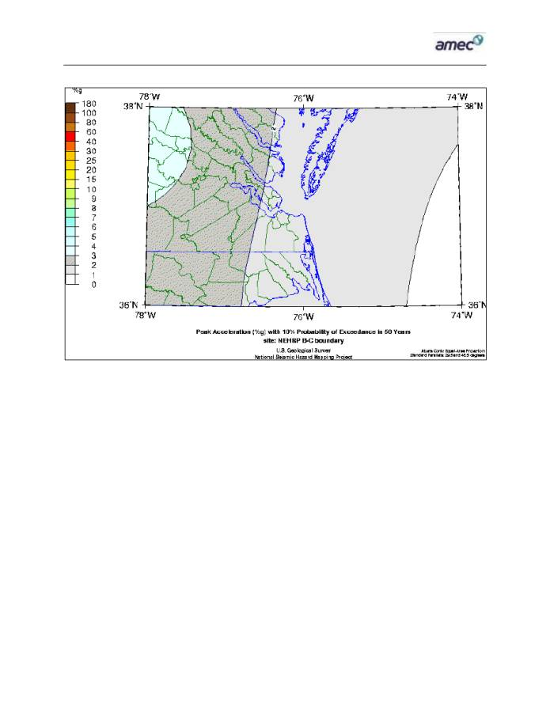
City of Poquoson, Virginia
Multi-Hazard Mitigation Plan
17
Figure 2. Poquoson Seismic Risk
Historical data is supportive of the low risk assessment. Since 1774, there have been only three
earthquake epicenters with in 65 miles of Poquoson, one on the Delmarva Peninsula and two in the
Hampton Roads area. No local damages have been recorded, and no earthquake events have occurred
since the original Hazard Mitigation Plan was developed. Figure 2 was updated from the original Hazard
Mitigation Plan; no additional risk analysis was conducted as Poquoson remains in an area of low seismic
risk and the hazard is considered non-critical.
The Daily Press and Virginian-Pilot newspapers reported a minor, but relatively rare, earthquake with its
epicenter on the Peninsula August 3, 1995. According to the Virginian-Pilot, the quake measured 2.6 on
the Richter scale. The Virginia Tech Seismological Observatory detected the quake with instrumentation
in Goochland County west of Richmond, and in Blacksburg. The quake was centered under the York
River near York River State Park. According to the Daily Press, people at Camp Peary in York County
reported feeling the quake.
Tornado
Tornadoes are rapidly rotating funnels of wind extending from storm clouds to the ground. They are
created during severe weather events like thunderstorms and hurricanes when cold air overrides a layer
of warm air, causing the warm air to rise rapidly. According to the Commonwealth of Virginia Enhanced
Hazard Mitigation Plan update for 2010, which is still in progress, the City of Poquoson has a Medium-
Low hazard frequency for tornado when compared to other jurisdictions in the commonwealth.
While tornados tend to take up small geographical areas, the damage can be severe. Impacts can
include downed trees and power lines, houses moved off their foundation or completely destroyed, and
cars and other vehicles lifted off of the ground and carried with high velocity winds. Using wind estimates,

City of Poquoson, Virginia
Multi-Hazard Mitigation Plan
18
meteorologists and wind engineers rate the severity of tornadoes using the Enhanced Fujita Scale. The
scale includes 6 tornado categories ranked from 0 to 5. The scale is as follows:
• EF Number 0: 3 second gusts of 65-85 mph
• EF Number 1: 3 second gusts of 86-110 mph
• EF Number 2: 3 second gusts of 111-135 mph
• EF Number 3: 3 second gusts of 136-165 mph
• EF Number 4: 3 second gusts of 166-200 mph
• EF Number 5: 3 second gusts of over 200 mph
Since 1950, the National Climatic Data Center (NCDC) has recorded information on tornado events in the
United States (NCDC 2008). The database includes a tornado event in Poquoson on August 30, 2004.
The event was an F0 on the Fujita Scale, indicating a weak or “gale” tornado that typically causes only
minor damage to trees and signs. Maximum 3-second gust wind speeds for an F0 on the Enhanced
Fujita Scale are estimated to be between 65 and 85 miles per hour. There were no injuries, and the
event caused only $5,000 property damage. The path was approximately 1 mile and had a width of 50
yards. Similar events occurred on the same date in Tabb and Seaford, each causing estimated $10,000
property damages and no injuries or fatalities.
Two noteworthy tornado events have occurred in nearby Hampton since 1950, including: 1) September
5, 1979 an F2 tornado associated with Hurricane David caused $250,000 property damage and 9 injuries,
and 2) September 4, 1999, an F2 tornado associated with Hurricane Dennis caused $7.7 million property
damage and caused 6 injuries. The database includes mention of three other F1-level tornado events in
York County since 1950, with no injuries and only minor property damage. Event dates were: November
1, 1951, July 12, 1996, and August 7, 2003. F1, or moderate tornados, have estimated 3-second gust
wind speeds between 86 and 110 miles per hour, and can be expected to cause roof and minor structural
damage and to move autos off the roads. (NOAA, 2009)
While the historic data indicate that the City has a low probability of being struck by a damaging tornado,
it is important to note tornadoes can result from severe thunderstorms and hurricanes. Due to the low
number of historical occurrences in the City of Poquoson, the probability of future occurrence is also low.
Drought
All areas of Virginia are susceptible to drought; however, drought has not been an extreme condition for
Poquoson. A drought response plan was prepared by Newport News Waterworks (NNW) in March of
2004, which contains a review and analysis of the City’s response to the significant regional drought that
occurred during 2001 and 2002. While this drought did not significantly impact Poquoson, the NNW
imposed mandatory use restrictions in 2002. During this period, the NNW had its first opportunity to apply
the drought monitoring tools, practices, and policies provided by the Water Conservation Management
Plan and ordinance. The Water Conservation Management Plan and ordinance were developed in 1995
to provide specific tools needed to respond to water emergencies and to meet requirements by the
Virginia Department of Environmental Quality (VDEQ). The NNW serves as the regional water utility for
the cities of Newport News, Hampton, Poquoson, and portions of York and James City Counties.
Another drought in 2007 and 2008 affected much of the Commonwealth. Governor Timothy M. Kaine
declared a Statewide Emergency on October 18, 2007 and imposed a statewide ban on all open burning.
The burn ban was lifted on November 15, 2007. According to the Drought Monitoring Task Force Report
dated February 25, 2008, the City of Poquoson experienced severe drought conditions. From January 1,
2007 through February 21, 2008, the York-James region recorded rainfall that was 21.38 inches below
normal. The final VDEM situation report dated October 31, 2008, indicated that the Statewide Emergency
remained in effect at that time (VDEM, 2008). The western part of the state appears to have been hit
hardest, especially with regard to agriculture. Impacts in Poquoson were limited, according to City

City of Poquoson, Virginia
Multi-Hazard Mitigation Plan
19
officials, and may have included some shallow wells going dry. Council took action encouraging citizens
to conserve water.
Overall, droughts have had very limited historical impacts on the City of Poquoson, and occurrences or
impacts of severe drought have not been documented. Therefore, the extent or severity of the hazard is
considered low, with only minimal potential impacts to the water supply possible. Impacts of water
shortages could include: wells drying up, implementation of restrictions on watering and recreational use
of water, vegetation becomes stressed, diseased or dies, increased wildfire vulnerability, and stressed or
diseased wildlife. The probability of drought is difficult to accurately determine; however, given the low
number of historical occurrences, the Committee determined drought to be a non-critical hazard.
Mosquito Borne Diseases
Another issue of concern for the City of Poquoson is mosquito borne diseases. Since the cure of such
diseases as Yellow fever and the successful control of others such as Malaria, mosquitoes have been
more of a nuisance than a problem. Since 2000, mosquitoes have increased in notoriety because of a
new virus they carry, known as West Nile. Every year between 2000 and 2004 there was an increase in
the area affected by this virus. According to the Virginia Department of Health, the City of Poquoson and
York County had its first documented positive case in 2002, six birds tested positive for West Nile Virus.
In 2003, the number of birds testing positive increased to nine. No human cases of West Nile virus in
Poquoson have been recorded to date.
When a serious mosquito infestation is imminent and impacting Langley Air Force Base, arrangements
may be made for an aerial spray flight over the lower, eastern Peninsula. There are generally three flights
available per year and only if the mosquito situation warrants such treatment. The application focuses on
the salt marsh mosquito breeding environment East of Route 17. The spray treatment is done at 1/2
ounce per acre, and is only conducted if weather conditions are optimum for an effective application.
Thunderstorms
The Commonwealth of Virginia averages 35 to 45 thunderstorm days per year. Thunderstorms can occur
any day of the year and at any time of the day, but are most common in the late afternoon and evening
during the summer months. The frequency of thunderstorm occurrences and impacts, particularly during
the summer months, limits the usefulness of reviewing the historical record of these storms. The list of
occurrences for a single year alone would likely have more than 50 entries, and the data add little to an
understanding of Poquoson’s risk. All parts of the City of Poquoson are susceptible to thunderstorm
impacts. Thunderstorms are generally beneficial. They provide needed rain for crops, plants, and
reservoirs. However, about five percent of thunderstorms become severe and can produce tornadoes,
large hail, damaging downburst winds, and heavy rains causing flash floods. Poquoson experiences an
estimated one to two severe, damage-causing thunderstorms each year, according to citizen-collected
data in the NCDC database. Thunderstorms can develop in less than 30 minutes, allowing little time for
warning. All thunderstorms produce lightning, which can be deadly. The National Weather Service does
not issue warnings for ordinary thunderstorms nor for lightning. The National Weather Service does
highlight the potential for thunderstorms in the daily forecasts and statements.
Lightning can strike up to 10 to 15 miles from the rain portion of the storm. The lightning bolt originates
from the upper part of the thunderstorm cloud known as the anvil. A thunderstorm can grow up to 8 miles
into the atmosphere where the strong winds aloft spread the top of the thunderstorm cloud out into an
anvil. The anvil can spread many miles from the rain portion of the storm but it is still a part of that storm.
Lightning, from the anvil, may strike several miles in advance of the rain. Lightning bolts may also come
from the side or back of the storm, striking after the rain and storm have seemed to have passed or hitting
areas that were totally missed by the rain.
The NCDC database indicates one recorded incident of a lightning strike in Poquoson in which a man
was struck by lightning outside his home in the Roberts Creek subdivision on July 30, 2000. The man was

City of Poquoson, Virginia
Multi-Hazard Mitigation Plan
20
rushed to the hospital, and remained under observation until the following day when he was released.
The historic data show that the City is at a low risk of suffering damages from thunderstorms and
lightning, and the lack of severe events in the historic record since the previous Plan was developed
reinforced the Committee’s decision that no in-depth analysis be performed to document thunderstorm
risk in the City of Poquoson.
It is important to note thunderstorms can accompany hurricanes and other severe weather events. Figure
3 provides the density of lightning flashes per square kilometer per year. Poquoson, and much of
southeastern Virginia, is in an area that receives 4 to 8 flashes per square kilometer annually.
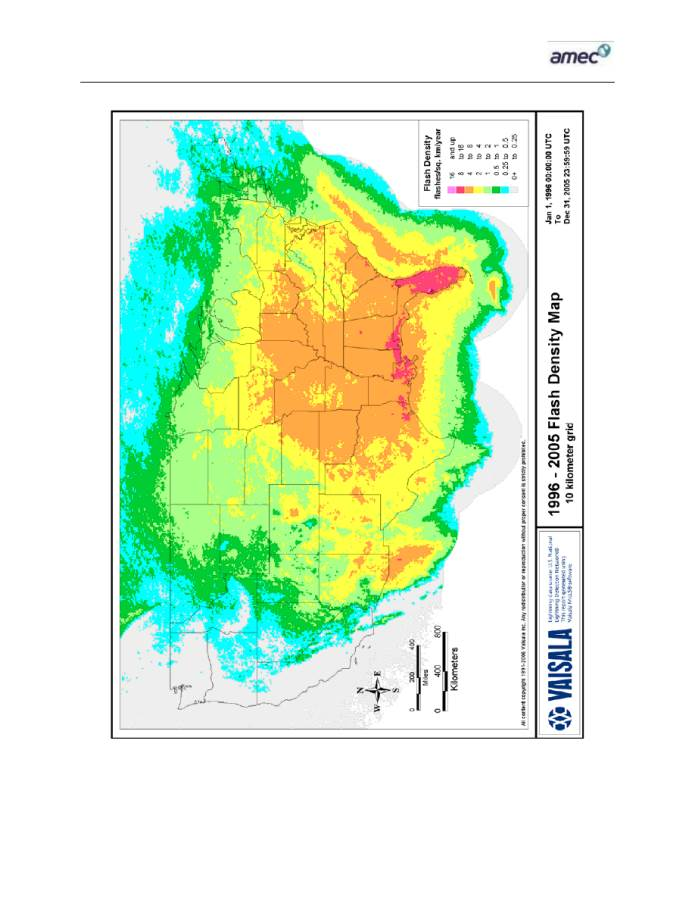
City of Poquoson, Virginia
Multi-Hazard Mitigation Plan
21
Figure 3. Nationwide Flash Density Map, 1996 - 2005

City of Poquoson, Virginia
Multi-Hazard Mitigation Plan
22
4.1.2 Critical Hazards
Like many communities in the United States, the City of Poquoson is subject to a number of natural
hazards. Some of these hazards have a measurably higher chance of occurring in any given year
(recurrence interval) than do others based on historical records of occurrence. Since the advent of
federal, modern-era disaster assistance programming in 1969, the Commonwealth of Virginia has had 45
Presidential Disaster Declarations (including the declaration for the impacts of Hurricane Isabel in
September 2003). Of these 45 declarations, 27 have been flood events (with several floods spawned by
hurricanes); 6 were winter weather events (snow/ice/extreme cold), 2 for drought, 4 for wildfire, 3 for
tornados, another for the terrorist attacks at the Pentagon in Arlington on September 11, 2001, and one
for Hurricane Katrina evacuees. Of these 45 declared disaster events, 15 generated declarations in either
the City of Poquoson and/or in neighboring jurisdictions and regions, with the most recent being flooding
associated with Tropical Depression Ernesto in August/September 2006.
The following sections present a detailed assessment of critical hazards that impact the City.
Understanding these hazards will assist the City in its process of identifying specific risks and developing
a mitigation strategy to address those risks.
Floods
Flooding is the deadliest and most costly storm-related natural hazard in the United States. Nearly 90
percent of presidential disaster declarations result from natural events in which flooding was a major
component. Excess water from snowmelt, rainfall, or storm surge accumulates and overflows onto
adjacent floodplains, or lowlands adjacent to rivers, lakes, and oceans that are subject to recurring floods.
While many floodplain boundaries are mapped by FEMA’s National Flood Insurance Program (NFIP),
floods sometimes go beyond the mapped floodplains or change courses due to natural processes (e.g.,
accretion, erosion, sedimentation, etc.) or human development (e.g., filling in floodplain or floodway
areas, increased imperviousness within the watershed from new development, or debris blockage
including cars, trailers, and propane tanks).
A majority of the flooding that affects Poquoson is tidal flooding, which primarily occurs in conjunction with
coastal storms such as hurricanes or nor’easters. Sources include: Northwest Branch Back River,
including the tidal tributaries of Wythe Creek, Cedar Creek, Topping Creek, Watts Creek, and Long
Creek; and the Poquoson River, including the tidal tributaries of Moores Creek Lambs Creek, Roberts
Creek, Lyons Creek, White House Creek, Floyds Bay, Bennett Creek, and Easton Cove. Flood velocities
are typically minimal because the primary sources are tidal, not riverine. Wave action can increase water
velocity, especially if the fetch is large. Warning times for tropical storms are typically in the range of 1 to
3 days, although storms have been known to form and intensify over coastal North Carolina, leaving a
shorter warning period once the storm begins to move. Similarly, warning times for flooding associated
with nor’easters can range from 0 to 3 days, often catching forecasters by surprise as a low intensifies
rapidly. Flooding associated with nor’easters is typically predicted in association with the astronomical
tides, using a height above mean high tide as a warning tool. In addition to tidal flooding, the City of
Poquoson is subject to flooding events induced by the rain associated with a hurricane or tropical storm
and which can produce extreme amounts of rainfall in short periods. Historical occurrences of floods in
the City of Poquoson are listed in Tables 7 and 9 which provide details on both wind and flood impacts of
tropical storms and nor’easters.
Flooding of vacant land or land that does not have a direct effect on people or the economy is generally
not considered a problem. Flood problems arise when floodwaters cover developed areas, locations of
economic importance, infrastructure, and any other critical facility. Poquoson is highly susceptible to
flooding, primarily from coastal storm surges, to the City’s low-lying land areas, including marsh areas
adjacent to many of its waterways, and the wide, flat outlets where its streams and rivers meet the
Chesapeake Bay. Fluctuations in the surrounding water levels produce a mean tidal range of
approximately 2.4 feet. The timing or coincidence of maximum surge-producing forces with the normal
high tide is an important factor in consideration of flooding from tidal sources. Vast salt marshes and
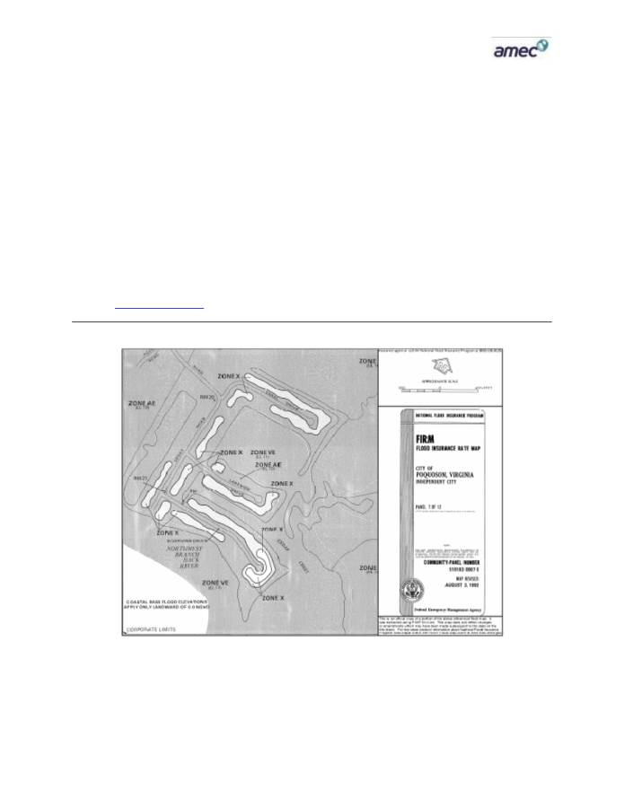
City of Poquoson, Virginia
Multi-Hazard Mitigation Plan
23
scrub/shrub areas, including Plum Tree Island, serve to protect the developed portions of the City from
wave action associated with severe storms. Threats to these protective barriers, such as sea level rise
and associated erosion, also constitute threats to the natural flood protection afforded the City. Refer to
Tables 7 and 9 for a more complete flood history for the City of Poquoson.
According to the Virginia Institute of Marine Science’s Comprehensive Coastal Inventory, the City of
Poquoson’s overall bank stability is in fair condition. The majority of Poquoson’s coast is considered to
have low beach and marsh erosion, with high erosion exceptions at Lloyd Bay, Plum Tree Point, Gun
Hammock Creek, High Cedar Creek, Bells Oyster Gut, Bay Point and Hunts Point. These high erosion
areas cover portions of the northern and eastern ends of Plumtree Island National Wildlife Refuge.
Strong east or northeast winds can push Chesapeake Bay water (storm surge) into the mouth of the York
and James Rivers, flooding the Peninsula. This surge combined with the normal high tide can increase
the mean water level 15 feet or more. The City’s Flood Insurance Rate Map (FIRM) shows the area
expected to be inundated during a 100-year flood event or the flood that has 1-percent chance of being
equaled or exceeded in any given year, and designates these areas as AE Zones. The FIRM accounts for
both coastal surge driven flooding, as well as flooding generated from rain events. Areas subject to
inundation by the 100-year flood which are also subject to high velocity wave action are designated as VE
Zones on the FIRM. A sample is shown in Figure 4. FIRMs are available for viewing at City Hall and
online at
http://msc.fema.gov
.
Figure 4. Sample of Poquoson Flood Insurance Rate Map (FEMA)
As seen on Poquoson’s FIRM, flood hazard identification under the NFIP divides coastal flood hazard
areas into two flood zones: Zone VE and Zone AE. FEMA’s floodplain mapping standards have
traditionally identified as VE Zones those areas where wave heights during a 100-year flood event are
estimated to be equal to or greater than 3 feet. However, wave tank studies by FEMA show that breaking
waves less than the 3-foot criterion used to designate VE Zones can cause considerable damage. Post-
storm investigations have shown that typical AE Zone construction techniques (e.g., wood-frame, light
City of Poquoson, Virginia
Multi-Hazard Mitigation Plan
24
gauge steel, or masonry walls on shallow footings or slabs) are subject to damage when exposed to
waves less than 3 feet in height. Laboratory tests and field investigations confirm that wave heights as
small as 1.5 feet can cause failure of the above-listed wall types. Other flood hazards associated with
coastal waves (e.g., floating debris, high velocity flow, erosion and scour) also damage AE Zone-type
construction in these coastal areas.
The AE Zone areas subject to wave heights between 1.5 and 3 feet are not differentiated from other AE
Zone areas on the FIRMs. As of December 2008, FEMA will begin delineating the landward limit of
waves 1.5 feet in height for new map studies, and encouraging (but not requiring) communities to adopt
higher standards for these “Coastal AE Zones.” In 2006, an expert from FEMA’s Map Modernization
Team indicated that “most of the areas within [Poquoson] labeled as Zone AE would be considered
coastal AE Zone” (Gifford, 2006).
Wind Events
High winds are frequently the result of hurricanes, tropical storms, and Nor’easters. Hurricane season in
the North Atlantic runs from June 1 until November 30, with the peak season between August 15 and
October 15. Hurricanes and tropical storms, as well as tropical depressions, are all tropical cyclones.
According to the National Hurricane Center (NHC), once they have formed, tropical cyclones maintain
themselves by extracting heat energy from the ocean at high temperatures and releasing heat at the low
temperatures of the upper troposphere. Hurricanes and tropical storms bring heavy rainfalls, storm surge,
and high winds, all of which can cause significant damage. These storms can last for several days, and
therefore have the potential to cause sustained flooding and high wind conditions. Of particular
importance to communities susceptible to hurricane damage is the track of an approaching storm.
Proximity and direction of hit are important when determining impacts and subsequent damage from the
storm.
In 1971, wind engineer Herbert Saffir and hurricane expert Dr. Robert Simpson developed a scale to
classify hurricanes. The Saffir-Simpson scale rates the intensity of hurricanes based on wind speed and
barometric pressure measurements and is used by the National Weather Service to predict potential
property damage and flooding levels from imminent storms. Although the scale assigns a wind speed and
surge level to each category of storm, in recent years, there has been more and more recognition of the
fact that wind speed, storm surge and inland rainfall are not necessarily of the same intensity for a given
storm. Therefore, there is some interest in classifying hurricanes by separate scales according to each of
these risks. However, the Saffir-Simpson Scale is still the most widely used classification tool for
hurricanes. The scale is presented in Table 5.
Table 5. Saffir-Sampson Scale
Category
Sustained
Wind
Speeds
(mph)
Pressure
(mb)
Typical Damage
Tropical Depression
<39 --
Tropical Storm
39-73 --
Hurricane Category 1
74-95 >
980
Minimal – Damage is done primarily to shrubbery and trees,
unanchored manufactured homes are damaged, some signs
are damaged, no real damage is done to structures on
permanent foundations.
Hurricane Category 2
96-110 965-980
Moderate – Some trees are toppled, some roof coverings are
damaged, major damage is done to manufactured homes.
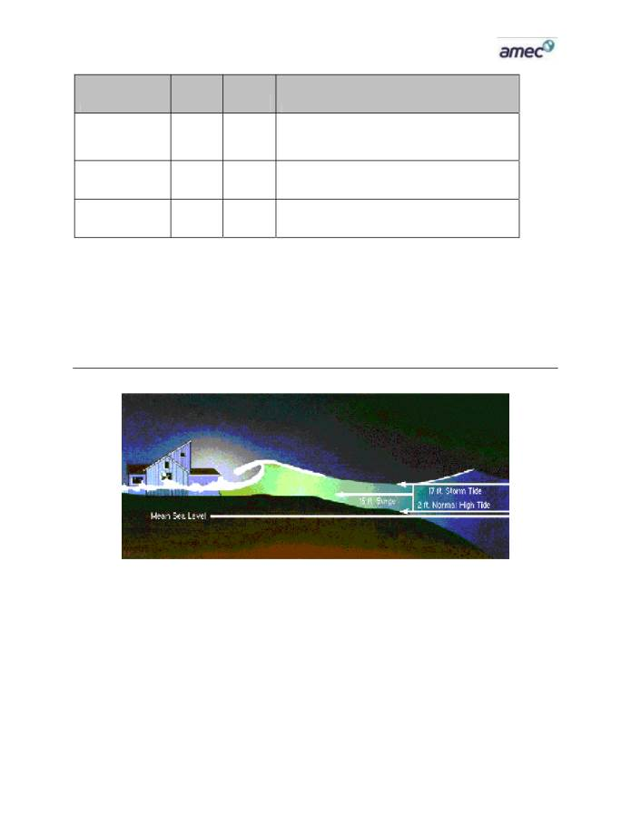
City of Poquoson, Virginia
Multi-Hazard Mitigation Plan
25
Category
Sustained
Wind
Speeds
(mph)
Pressure
(mb)
Typical Damage
Hurricane Category 3
111-130 945-965
Extensive Damage – Large trees are toppled, some structural
damage is done to roofs, manufactured homes are destroyed,
and structural damage is done to small homes and utility
buildings.
Hurricane Category 4
131-155 920-945
Extreme Damage – Extensive damage is done to roofs,
windows, and doors, roof systems on small buildings
completely fail, some curtain walls fail.
Hurricane Category 5
> 155
< 920
Catastrophic Damage – Roof damage is considerable and
widespread, window and door damage is severe, there are
extensive glass failures, some buildings fail completely.
The City of Poquoson’s physical geography does not vary significantly across its 78.4 mi
2
area. Thus,
storm effects will not vary significantly across the City; wind speeds will be roughly equal from one portion
of the City to another.
Coastal storm events combine several factors that can serve to produce significant damages. In coastal,
low-lying areas, one of the biggest factors in coastal storm damage is storm surge. Storm surge is
essentially the water that is pushed toward the shore by the persistent force of the winds of the
approaching storm, as demonstrated in Figure 5.
Figure 5. Schematic of Typical Coastal Storm Surge (NOAA)
Various techniques have been developed over time to model the impacts of storm surge. One of the more
common, nationally recognized models is the National Hurricane Center’s Sea, Lake, and Overland
Surge from Hurricanes (SLOSH). The SLOSH model is used to predict storm surge heights based on
hurricane category. The National Hurricane Center notes that the SLOSH model is generally accurate
within plus or minus 20 percent. For example, if the model calculates a peak 10-foot storm surge for the
event, one can expect the observed peak to range from 8 to 12 feet. Results for the SLOSH model
conducted to predict storm surge in Poquoson are shown in the Vulnerability Section of this report in
Figure 17.
Historical Occurrences
In evaluating the localized threat of hurricanes and tropical storms to the City, NOAA hurricane track data
from 1851 to 2008 was analyzed to identify storms that may have posed a threat to the City. Based on
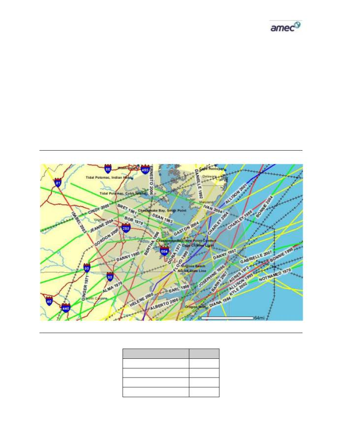
City of Poquoson, Virginia
Multi-Hazard Mitigation Plan
26
this data, 29 storms, including hurricanes, tropical storms, and tropical depressions, passed within 25
miles of the City of Poquoson. Of the 29 storms, 23 were tropical depressions and extratropical storms
(winds <39 mph), 13 were tropical storms (winds of 39-73 mph), and one was a Category 1 Hurricane
(winds 74-95 mph), Hurricane Floyd in 1999 (shown in red on the map below).
Examining the period 1970 to 2008, and expanding the radius to storm tracks within 100 miles of
Poquoson, reveals that a total of 33 historical storms impacted the area. Of the 33 storms, 16 were
ultimately categorized as tropical depressions and extratropical storms (winds <39 mph), 11 were tropical
storms (winds of 39-73 mph), and 4 were Category 1 Hurricanes (winds of 74-95 mph), and 2 were
Category 2 Hurricanes (winds of 96-110mph), Hurricanes Gloria (1985) and Isabel (2003). The Category
1 storms were: Charley (1986), Bertha (1996), Bonnie (1998), and Floyd (1999).
According to the FEMA Flood Insurance Study, major storms and hurricanes caused severe flooding in
1933 and 1936. In 2003, Hurricane Isabel produced a storm tide of 8 to 9 feet above mean lower low
water in Poquoson, the highest storm surge since 1933. A complete list of flooding and wind events is
shown in Table 7.
Figure 6. Storm Tracks within 100 miles of Poquoson, 1970 – 2008
Source: NOAA, Coastal Services Center 2009. Historical Hurricane Tracks.
Table 6. Storm tracks within a 100-mile radius of Poquoson, 1970-2008
Type of Storm
Quantity
Hurricane – Category 5
0
Hurricane – Category 4
0
Hurricane – Category 3
0
Hurricane – Category 2
2
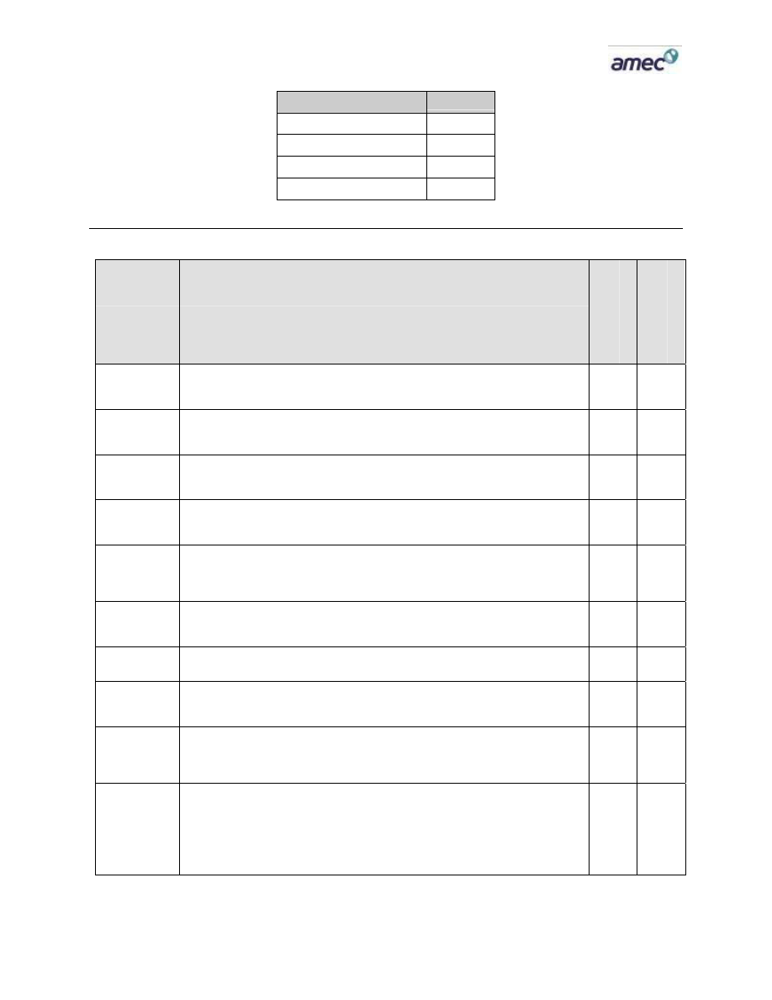
City of Poquoson, Virginia
Multi-Hazard Mitigation Plan
27
Type of Storm
Quantity
Hurricane – Category 1
4
Tropical Storm
11
Tropical Depression
8
Extratropical Storms
8
Table 7. Historical Tropical Storms for the City of Poquoson
Date
Description
Floo
din
g
High Win
d
s
8/23/1933
This hurricane established a record high tide of 9.8 feet Mean Lower Low Water (MLLW),
18 people died. Highest 1-minute wind speed in Norfolk was 70 mph, 82 mph at Cape
Henry.
9
9
9/18/1936
The fastest 1 minute wind speed was 84 mph at Cape Henry and 68 mph at the NWS
City Office. The tide reached 9.3 feet above MLLW and is the second highest tide of
record.
9
9
9/14/1944
Fastest 1 minute wind speed was 134 mph at Cape Henry, which is the highest on record
in this area. Gusts were estimated up to 150 mph. The NWS City Office recorded gusts
up to 90 mph. Tides reached 5.2 feet above normal.
9
9
8/14/1953
Hurricane Barbara. The fastest minute wind speed was 72 mph at Cape Henry. Five to 8
inches of rain fell over Southeast Virginia with 9.3
inches in Portsmouth.
9
9
10/15/1954
Hurricane Hazel. Fastest 1 minute wind speed was 78 mph at Norfolk Airport with gusts
recorded up to 130 mph in other areas of Hampton Roads. Back Bay and North Landing
River of Virginia Beach also experienced flooding as strong south winds pushed water
northward from Currituck Sound.
9
9
9/12/1960
Hurricane Donna. Fastest 1 minute wind speed was 73 mph at Norfolk Airport, 80 mph at
Cape Henry. Water reached 7 ft above normal (6.3 ft MSL) in Norfolk Harbor. Serious
flooding was reported. Three deaths reported.
9
9
9/1/1964
Hurricane Cleo. 11.40 inches in 24 hours is the heaviest in the coastal
area since records began in 1871.
9
6/21/1972
Hurricane Agnes. 13.6 inches of rain fell on the east slopes of the Blue Ridge Mountains.
The James River crested at a record high in Richmond. Virginia sustained $222 million
in damage, and 13 people died from flash flooding.
9
9/27/1985
Hurricane Gloria – Passed 45 miles east of Cape Henry, highest tide 5.3 feet above
MLLW, storm rainfall 5.65 inches. Fastest 1 minute wind speed was 46 with gusts to 67
mph at Norfolk International Airport, a gust to 94 mph at Norfolk NAS, 94 mph. Total
Virginia damage $5.5 million.
9
9
8/27/1998
Hurricane Bonnie. Tracked over the northern Outer Banks. Fastest 1 minute wind speed
was northeast at 46 mph with gusts to 64 mph at Norfolk International Airport. Langley Air
Base recorded a sustained wind of 53 mph with gusts to 67 mph. Cape Henry recorded a
sustained wind (fastest 1 minute) of 81 mph (anemometer is at 90 feet) and a gust of 104
mph. The highest tide was 6.0 feet above Mean Low Low Water (3.5 feet above normal
tide). The heavy rain and a two to four foot storm surge combined to produce street
flooding in Norfolk, Virginia Beach and Portsmouth.
9
9
City of Poquoson, Virginia
Multi-Hazard Mitigation Plan
28
Date
Description
Floo
din
g
High Win
d
s
9/5/1999
Hurricane Dennis. A sustained wind of 52 mph was recorded at Langley Air Force Base
with a peak gust of 76 mph. A F2 tornado (winds 113 to 157) touched down in the City of
Hampton causing significant damage to a three block area and injuring six people. Tidal
departures with the storm were about 3 feet above normal resulting in moderate coastal
flooding at high tide.
9
9
9/16/1999
Hurricane Floyd made landfall near Cape Fear, North Carolina as a Category 2 hurricane
with estimated maximum winds near 90 knots. Continuing to accelerate north-
northeastward, Floyd's center passed over extreme eastern North Carolina on the
morning of the 16th and over Hampton Roads later that day. Immense amounts of
precipitation and storm surge flooding locally. Hampton received 7.5” rain, and Newport
News received 16.57”.
9
9/18/2003
Hurricane Isabel was a Category 1 hurricane at landfall. The highest sustained wind
speed recorded was 72 mph at Chesapeake Light (CHLV2). Storm surge varied
significantly across the region. At Sewells Point in Norfolk, the maximum water level was
7.9 feet above MLLW. This represents a 5-foot storm surge, the biggest in the region
since Hazel in 1954. In Virginia, 36 deaths were attributed to Isabel, including two in the
Poquoson vicinity. Total damages in the Hampton Roads area amounted to $506 million.
9
9
9/1/2006
Tropical Depression Ernesto. Storm tides of 4 to 5 feet above MLLW combined with 6 to
8 foot waves causing significant damage to homes, piers, bulkheads, boats, and marinas
across portions of the Virginia Peninsula and Middle Peninsula near the Chesapeake
Bay and adjacent tributaries.
9
9
9/6/2008
Tropical Storm Hanna produced heavy rain and gusty winds. Few trees were downed.
Storm total rainfall ranged from around one inch to just below five inches. The highest
sustained wind of 48 knots (55 mph) with a peak gust of 59 knots (68 mph) was recorded
at the 3rd Island Bay Bridge Tunnel. Minimum pressure of 991 MB was recorded at the
3rd Island Bay Bridge Tunnel. Coastal storm tides of 2 feet or less above astronomical
tide levels were common, with only minor beach erosion reported. Near the coast, as
well as inland, tropical storm winds knocked down numerous trees and power lines, as
well as caused minor structural damage. No fatalities or injuries were attributed to the
winds.
9
Nor’easters
Nor’easters are coastal storms that develop off the mid-Atlantic Coast during late fall, winter and early
spring. The storms are named after the direction of the prevailing winds. The storms may rapidly and
unexpectedly intensify, gaining strength from the relatively warm air over the Atlantic Ocean.
Simultaneously, colder air is forced southward along the East Coast. This mixture of warm and cold air
can produce rain, snow, sleet, or freezing rain. The coastal plain of Virginia typically receives rain if the
storm tracks over the coast or inland east of the Appalachian Mountains. When a storm center tracks
east over the Atlantic Ocean, Poquoson can receive record snowfalls.
Nor’easters generate strong northeast winds, heavy precipitation and storm surge on Virginia’s coast.
Although the winds and storm surge associated with nor’easters are generally less intense than that of
hurricanes, nor’easters can linger for several days over a given area. Storms with a long duration allow
large accumulations of precipitation and damage to structures that are exposed to high wind and flooding
and erosion due to prolonged wave action and sequential high storm tides. High-pressure systems to the
north can hinder movement of the lows and serve to increase the severity of the low, thereby increasing
the impacts of the storm. Nor’easters can be particularly dangerous in southeastern Virginia since many
occur when water and ambient temperatures are uncomfortably low. The combination of high waves,
City of Poquoson, Virginia
Multi-Hazard Mitigation Plan
29
high tides, and low air and water temperatures can be detrimental to exposed plumbing, vegetation, and
maritime endeavors.
The Dolan-Davis Scale, Table 8, was developed to identify and classify the damages that may occur
during nor’easters. Although rarely referenced by the National Weather Service or other media in
describing nor’easters, the scale provides a useful descriptive tool for the types and levels of damage
associated with a nor’easter. Heavy precipitation in the form of rain or snow, beach and dune erosion
from wave action, sand/water overwash associated with storm surge, and resultant coastal property
damage are all commonly associated with strong nor’easters.
Table 8. The Dolan-Davis Nor'easter Intensity Scale (Davis and Dolan, 1993)
Storm Class
Beach Erosion
Dune Erosion
Overwash
Property Damage
1 (Weak)
Minor changes
None
No
No
2 (Moderate)
Modest; mostly to
lower beach
Minor No Modest
3 (Significant)
Erosion extends across
beach
Can be significant
No
Loss of many structures at
local level
4 (Severe)
Severe beach erosion
and recession
Severe dune erosion or
destruction
On low beaches
Loss of structures at
community-scale
5 (Extreme)
Extreme beach erosion
Dunes destroyed over
extensive areas
Massive in sheets and
channels
Extensive at regional-scale;
millions of dollars
Historical Occurrences
Almost every year, in late fall, winter or spring, Poquoson is impacted by one or more nor’easters of
varying degrees of severity. Table 9 provides a listing of historic nor’easters that have inflicted damage
along the Virginia coastline, including Poquoson. Due to the high frequency of these storms,
communities in southeastern Virginia do not maintain detailed cost accounting for individual storms and
the associated damage. The combined effects of sea level rise and increased development in Poquoson
would likely cause much more damage if the storms of 1956 or 1962 occurred today (see Figure 7) due to
increased development in the floodplain.
Table 9. Past Nor’easters affecting the City of Poquoson
Date
Description
Floo
din
g
High
Winds
4/11/1956
A Northeaster storm produced a steady wind in the Hampton Roads area for approximately
30 hours. The tides ran 4 feet above normal for 12 hours producing a maximum flood crest of
5.8 feet on the morning of the 11th. This left the low lying areas of the City inundated during
the storm.
9
9
3/6/1962
The March 1962 (Ash Wednesday) Nor’easter flood had a devastating effect on the City of
Poquoson. This low pressure cell which moved from south to north past Hampton Roads and
then reversed its course, moving again to the south, brought with it huge volumes of water
and high waves which battered the mid-Atlantic coast for several days. See Figure
7.
9
9
1/27/1998
A slow moving Nor’easter combined with high tides resulted in an extended period of gale
force onshore winds driving tides to 6.44 feet above MLLW at Sewells Point in Norfolk.
Moderate coastal flooding was reported across the middle peninsula and northern neck
9
9
City of Poquoson, Virginia
Multi-Hazard Mitigation Plan
30
Date
Description
Floo
din
g
High
Winds
areas. The damage was estimated at $1.5 million.
2/4/1998
A nor’easter battered eastern Virginia for 3 days. The slow movement of the storm resulted in
an extended period of gale to storm force onshore winds driving tides to 7.0 feet above
MLLW at Sewells Point in Norfolk. The tide levels resulted in severe coastal flooding
throughout the Hampton Roads area and the Virginia Eastern Shore. Damage was estimated
at $75 million for the Hampton Roads area.
9
9
10/6/2006
Strong onshore winds resulted in major coastal flooding during high tide. Tidal departures
were 2.5 to 3.5 feet above normal during the event. A strong low pressure system off the NC
coast coupled with an upper level low to dump intense rainfall across portions of southeast
Virginia. Rainfall amounts in excess of 10 inches resulted in numerous road closures and
moderate to major river flooding from late 10/6 through 10/7. Up to 28,000 Dominion Virginia
Power customers lost power during the event.
9
9
11/22/2006
Strong onshore winds caused moderate coastal flooding during times of high tide. Tidal
departures were about 3 feet above normal during the event. An intense low pressure
system off the NC coast combined with an upper level cutoff low to provide very strong
winds, heavy rains, and moderate coastal flooding across portions of eastern and southeast
Virginia from late 11/21 into 11/23.
9
9
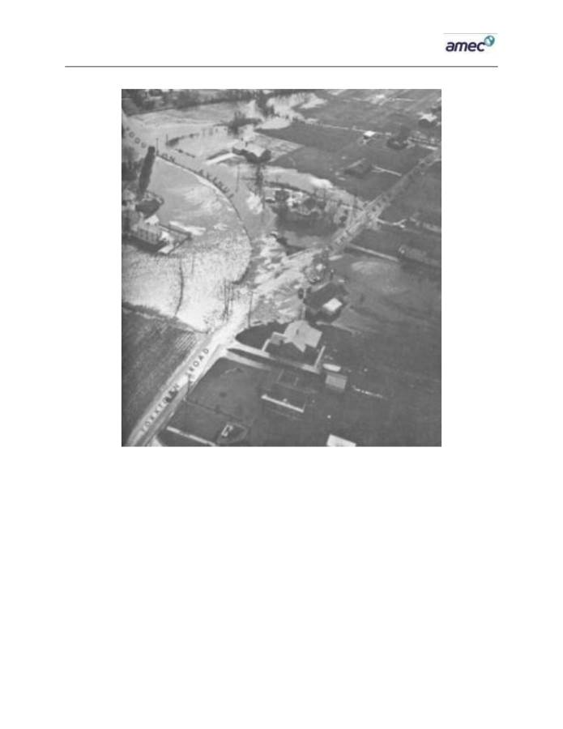
City of Poquoson, Virginia
Multi-Hazard Mitigation Plan
31
Figure 7. Yorktown Rd and Poquoson Ave, March 1962 Storm (USACE, 1971)
Sea Level Rise
Because much of Poquoson’s land area lies at elevations lower than 7 feet mean sea level, any increase
in the water level of the surrounding water bodies will have a direct impact on Poquoson’s vulnerable 116
linear miles of shoreline and 14 square miles of 100- and 500-year floodplain. Unlike wildfires,
earthquakes or coastal storms, the impacts of sea level rise are not felt or recorded in a matter of hours or
days, but instead are slowly observed, recorded and experienced over decades and centuries.
Primary consequences of continuing sea level rise are interrelated and include:
• Increased Shoreline Erosion – sea level rise influences the on-going processes that drive erosion,
in turn making coastal areas ever more vulnerable to both chronic erosion and episodic storm events
(Maryland Commission on Climate Change, 2008.) Secondary effects of increased erosion include
increased water depths and increased sediment loads which can drown seagrass and reduce habitat
and food sources for fish and crabs.
• Inundation of Normally Dry Lands - loss of coastal upland and tidal wetlands through gradual
submergence or inundation is likely over time. Wetlands can normally migrate upland, assuming
there are no impediments and the rate of rise is slow enough. But when sea level rise outpaces

City of Poquoson, Virginia
Multi-Hazard Mitigation Plan
32
upland migration, wetlands can drown in place. (VA Governor’s Commission on Climate Change,
2008) The Poquoson Wetlands Board has noted an influx of requests in recent years for bulkhead
repair as a result of more frequent inundation behind failing bulkheads. Tidal wetlands are slowly
migrating landward. The loss of wetlands means a reduction in nursery and spawning habitat for fish
and crabs which can be detrimental to the watermen of the lower Chesapeake Bay, including
Poquoson. Inundation of protective barrier wetlands, such as Plum Tree, Black Walnut Ridge, and
Cow Island that help buffer coastal storms, could increase flood vulnerability inland.
• Coastal Flooding – An increase in duration, quantity, and severity of coastal storms results in
increased flood damages to infrastructure. Increased sea level increases the base storm tide, which
is the storm surge plus astronomical tide (Boon, Wang, and Shen, undated). Ultimately, sea level rise
increases the destructive power of every storm surge. Minor storms that may not have caused
damage in the past, will begin to affect infrastructure in the future (Boon, et al, undated). Higher wave
energy from higher storm tides will translate each storm’s destructive forces landward. The damage
caused by major storms is expected to be increasingly costly. Sea level rise will threaten the
longevity and effectiveness of stormwater drainage systems, especially during significant rain events
that occur during high tides such as that which may be caused by a nor’easter.
• Saltwater Intrusion – As sea level rises, the groundwater table may also rise, and saltwater may
intrude into freshwater aquifers. This impact may have secondary impacts related to drinking water
and agriculture, even for home gardeners.
Figures 8 and 9 show the sea level rise data for both Gloucester Point, VA and Sewells Point, VA (NOAA,
2008). The sea level variations determined by these records include the linear trend, the average
seasonal cycle, and the interannual variability at each station. Monthly data through the end of 2006
were used in the calculation, and both stations had data spanning a period of 50 years or more (NOAA,
2008). Based on Figures 8 and 9, NOAA provided historic rates of sea level rise at both stations. At
Gloucester Point, the mean sea level trend is 3.81 millimeters/year with a 95-percent confidence interval
of +/- 0.47 mm/yr based on monthly mean sea level data from 1950 to 2003, which is equivalent to a
change of 1.25 feet in 100 years. The mean sea level trend at Sewells Point between 1927 and 2006 is
4.44 millimeters/year with a 95-percent confidence interval of +/- 0.27 mm/yr based on monthly mean sea
level data. This rate is equivalent to a change of 1.46 feet in 100 years. (NOAA, 2008) Figure 10 is a
map showing the mean sea level trends at the four NOAA stations closest to Poquoson. At this time, no
reliable indicators of sea level rise probability specifically calculated for Poquoson are available.
Water-level records, such as those at Sewells Point and Gloucester Point, combine data on ocean
fluctuations and vertical motion of the land at the station. Regional subsidence of lands surrounding the
Chesapeake Bay is largely a result of “long-term rebounding of the Earth’s crust north of the Bay region
following the glacial retreat.” (Chesapeake Bay Program, 2003) It is the combination of sea level rise
and subsidence that creates the damaging impacts described above.
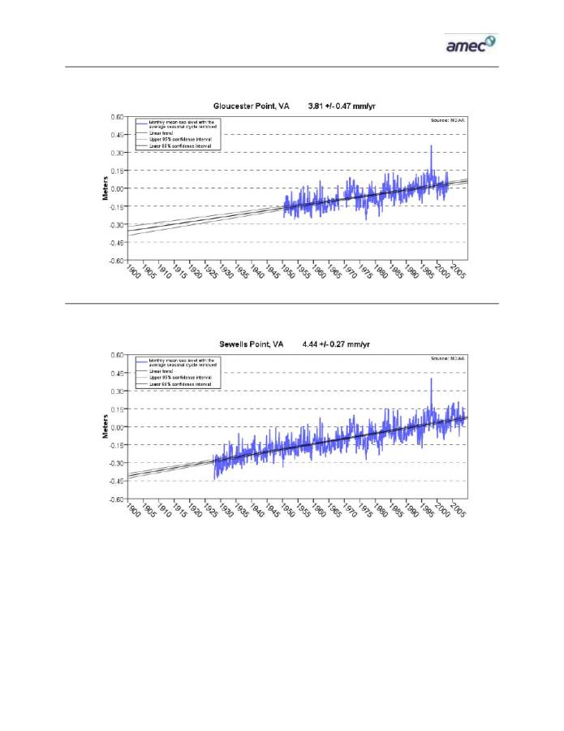
City of Poquoson, Virginia
Multi-Hazard Mitigation Plan
33
Figure 8. Water-level records, Gloucester Point, VA, 1950 – 2003.
Figure 9. Water-level records, Sewells Point, VA, 1927 – 2006.
or 1.25 ft/100 years
or 1.46 ft/100 years
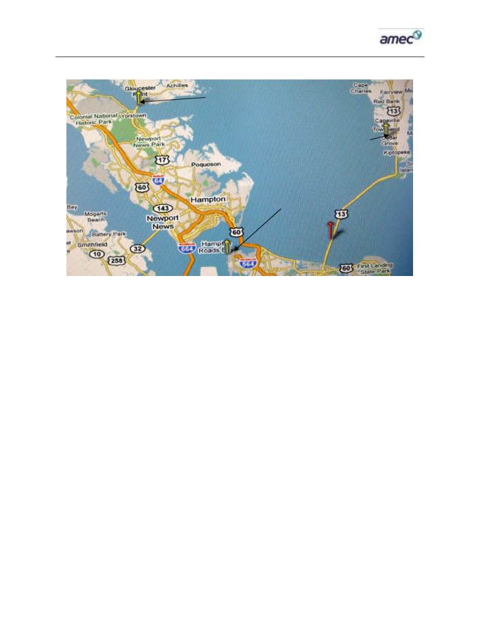
City of Poquoson, Virginia
Multi-Hazard Mitigation Plan
34
Figure 10. Mean Sea Level Trends for NOAA stations nearest Poquoson (NOAA, 2009)
The causes of sea level rise are numerous and variable over time and location, but scientists do know
that ocean volume changes as a result of variations in rainfall, river inflows, melting ice, evaporation, and
thermal expansion. (Boon et al, undated). There is growing evidence that other factors such as long-term
climate cycles and planetary cycles may also result in varying rates of sea level rise over a decade or
even over a few years (Chesapeake Bay Program, 2003). Given the large number of factors that
influence sea level rise both in the long- and short-term, the rate of rise over the long-term is not expected
to be constant. Chesapeake Futures, a report prepared by the Chesapeake Bay Program’s Scientific and
Technical Advisory Committee in 2003 reviewed various models used to predict sea level rise for the
Chesapeake Bay region. The report states:
A conservative assumption is that relative sea level will continue to rise
at the rate actually observed over the past 70 years….It is highly likely,
however, that the rate of sea level rise will accelerate over the next
century as a result of global warming.
A new water level gauge at Dandy Haven Marina on Back River's south shore in Hampton, will provide
more precise and geographically-relevant data to Poquoson officials monitoring sea level rise and event-
specific storm tides in the future. Researchers from the Virginia Institute of Marine Science involved in
placing the gauge indicate that they hope to be able to provide emergency managers a reliable storm tide
prediction, including the time and height of the next high water extreme during a storm event in Back
River, updated at hourly intervals. This gauge will be included with Gloucester Point, Sewells Point, and
at least five other local gauging stations in VIMS Tidewatch program for monitoring extratidal water levels
in the Lower Chesapeake Bay (Boon, 2009).
While the science and measurement of tides, storm tides and water levels indicates that sea level is rising
in the southern Chesapeake Bay, the potential impacts are realized more clearly when a particular
historical storm is examined in greater detail. The Ash Wednesday Storm of 1962 produced a peak storm
tide of approximately 7.2 feet mean lower low water (MLLW) at Sewell’s Point (see Figure 11). If that
same storm were to occur at mean high tide in 2030, using the sea level rise rates calculated above for
Gloucester Point
15 +/- 1.8 inches/century
Sewells Point
17 +/- 1.0 inches/century
Kiptopeke
14 +/- 1.6 inches/century
Chesapeake Bay Bridge
Tunnel
24 +/-4.5 inches/century

City of Poquoson, Virginia
Multi-Hazard Mitigation Plan
35
Sewell’s Point, the astronomical tide would be approximately one foot higher. Since the storm tide is
obtained by adding the storm surge to the astronomical tide, the same storm could then produce a storm
tide of over 8 feet MLLW. By comparison, Hurricane Isabel in 2003 produced a storm tide of 7.887 feet
MLLW and caused an immense amount of damage.
Figure 11. Astronomical and storm tides for 1962 Storm (NOAA, 2008)
Similarly, Boon (undated) concluded that sea level rise contributed to the similarity of two storms, the
August 1933 hurricane and Hurricane Isabel in 2003. The storms had comparable peak storm tides of
8.018 feet MLLW (1933) and 7.887 feet MLLW (2003), and both peaks occurred very shortly before or
after astronomical high tide, yet the 1933 storm occurred during spring tides and Isabel during neap tides.
As a result, the storm surge in the 1933 storm was much higher and, all things being equal, the data
would not have shown the storm surge that it did for Isabel had it not been for the constant adjustment of
MLLW to account for as much as 1.35 feet of sea level rise between August, 1933 and September, 2003
(see Table 10). Additional information on this topic may be found online through VIMS at:
http://web.vims.edu/physical/research/isabel/?svr=www.
Table 10. August 1933 Hurricane and Hurricane Isabel (Boon, undated)
Storm
Storm Tide
(height in feet above MLLW)
Storm Surge
(height in feet above normal)
Mean Water Level
(height in feet above MLLW)
August 1933
8.018 5.84 0.95
Isabel -
September
2003
7.887 4.76 2.30
1933 -2003
0.131
1.08
-1.35
Height
Astronomical Tide
Storm Tide
Storm Surge
City of Poquoson, Virginia
Multi-Hazard Mitigation Plan
36
Wildfire
A wildfire is an uncontrolled fire spreading through vegetative fuels, exposing and possibly consuming
structures. They often start unnoticed and spread quickly; a common characteristic is dense smoke that
fills the area for miles around. Naturally occurring and non-native species of grasses, brush, and trees
fuel wildfires. (FEMA, How-to Guide, 2-29) Generally, there are three major factors to consider in
assessing the threat of wildfires to a community: topography, vegetation, and weather.
The City of Poquoson Fire Department has reported 391 wildfires over a 25-year period (Table 11). The
department reported no wildfires occurred in Poquoson between 2004 and January 2009. Poquoson’s
biggest concern about wildfire centers on vegetation known as Phragmites australis. Phragmites, also
know as Common Reed, is a perennial grass that grows in dense stands up to 12 feet in height. It is an
aggressive invader of wetland areas particularly where the soil has been disturbed or exposed.
Phragmites will also crowd out native wetland plants. Because the stands contain a lot of standing dead
material, they will carry fire readily even in summer when the year’s growth is still green. The greatest
danger comes in late fall early and winter when the previous year’s growth dies, creating large amounts of
combustible material that carries fire well. There are also numerous undeveloped forested areas and
grasslands that during dry conditions, can be susceptible to wildfires.
The best way to reduce the common reed threat is with prescribed burning, coordinated through the
Poquoson Fire Department, during the summer when carbohydrate reserves in the plant are low and
when the soil is driest, thereby killing the roots of the plant. Alternatively, a systemic herbicide, such as
Rodeo (glyphosphate) can be used to control phragmites. Both methods will likely require multiple
treatments to obtain full control.
Table 11. Total Phragmites Fires in Poquoson, 1984 - 2008
District Location – City of Poquoson
Phragmites australis-related Fires
Eastern District
125
Western District
33
Total 158
Weather is another factor for consideration in the case of wildfires. High temperatures combined with low
humidity offer the most conducive environment for wildfires. The City of Poquoson’s climate is considered
subtropical humid. While the City may experience high temperatures during the summer months, this is
usually combined with high levels of humidity that are not conducive to the ignition and spread of
wildfires. However, during periods of drought, the threat of wildfire increases. As a result of the large
number of variables that contribute to wildfires, the probability cannot be accurately determined.
Winter Storms
Winter storms can combine different types of precipitation including snow, freezing rain, and ice, as well
as high winds, and cold temperatures. These storms can be very disruptive, particularly in areas where
they do not frequently occur. Severe winter storm events are relatively rare for Poquoson; however, the
impact can be potentially more severe for this coastal community than a community farther inland. Winter
storms impact the entire City of Poquoson. Given its proximity to the ocean, the moderating effect of the
ocean on air temperatures can cause snow to change to rain. If this rain falls on frozen ground or other
surfaces, the resulting coating of ice can have dangerous consequences. Even small accumulations of
ice on roads and sidewalks can be extremely hazardous to motorists and pedestrians and can lead to
vehicle and pedestrian accidents. Other impacts can include collapsed roofs from fallen trees and limbs

City of Poquoson, Virginia
Multi-Hazard Mitigation Plan
37
and heavy ice, and snow loads along with felled trees, telephone poles and lines, electrical wires, and
communications towers. As a result of ice storms, telecommunications and power can be disrupted for
days. In addition, icy roads, icy sidewalks and power outages can increase the hazard to vulnerable
populations, cause an increase in car accidents, increase slip and fall accidents, and reduce the reliability
of life-support systems that depend on electricity.
Detailed historical information on winter weather events in or about the City is limited. Listed below
(Table 12) are several significant winter events, with impacts described in the Tidewater area.
Table 12. Recent Significant Winter Storm Events
Date
Description
Winter of 1960-1961
Stormy pattern of previous winters continued with three more significant storms. The first was
December 10-12, 1960 with heavy snow and high winds from Virginia to New York. In Virginia,
snow fall ranged from 4 -13 inches in the north and west. Seven fatalities in Virginia. The next
snowstorm struck on January 19-20 from North Carolina to New York. Virginia saw up to 12 inches.
Two deaths were blamed on the storm in Virginia, due to overexertion and accidents. The third
storm struck February 3-5 and hit like a blizzard with severe cold and gale force winds. Two to 13
inches of snow across Virginia, and four fatalities.
Winter of 1980
On January 4 and 5, a heavy wet snow fell over eastern Virginia with as much as 18 inches
reported at Williamsburg. A second storm hit on February 6 that dumped 6 inches in Williamsburg
and as much as 20 inches at Virginia Beach. Over a foot of snow fell in Norfolk. This was topped on
March 1. Once again, arctic air had settled over Virginia and temperatures were in the teens. More
than a foot (13.7 inches) of snow fell at Norfolk. The heavy snow combined with strong winds to
create blizzard conditions. Norfolk’s total for the season came to a record 41.9 inches making this
the snowiest winter ever for eastern Virginia.
December 23-25, 1998
A major ice storm affected central and eastern Virginia from Wednesday, December 23rd into Friday,
December 25th. A prolonged period of freezing rain and some sleet resulted in ice accumulations of
0.5 – 1.0 inches in many locations. The heavy ice accumulations on trees and power lines caused
widespread power outages across the region. Approximately 400,000 customers were without
power during the maximum outage period, Christmas Eve day. Some customers were without power
for about ten days. Many accidents occurred due to slippery road conditions, especially bridges and
overpasses. Many secondary roads were impassable due to fallen tree limbs and in a few cases,
whole trees. The ice storm caused downed trees and power-related issues for Poquoson.
January 19-20, 2000
Back to back snow storms causing traffic mobility problems for the citizens of Poquoson. Two to
three inches of snow fell overnight as an area of low pressure passed south of the region. The
highest amounts were measured along a line from Caroline County in the north, through the City of
Richmond, then along the southern shore of the James River to near the Newport News area. Snow
briefly fell heavily after midnight, creating hazardous driving conditions.
February 15-16, 2004
On February 15 and 16, a winter storm hit the Tidewater area of Virginia dumping wind driven rain,
freezing rain, and snow on a significant portion of Hampton Roads. Snow accumulation totals in
some areas reached three to six inches and winds were reported at up to 30 mph. Sleet also fell
across much of the region causing roads to become icy and treacherous.
January 19-20, 2008
Coastal low pressure produced one half inch to three inches of snow across portions of central and
eastern Virginia. One half inch to three inches of snow occurred across York County.
There is no widely used scale to classify snowstorms. However, the Northeast Snowfall Impact Scale
(NESIS) characterizes and ranks high-impact Northeast snowstorms having large areas of 10-inch
snowfall accumulations and greater. The index uses population information in addition to meteorological
measurements to give an indication of a storm's societal impacts. NESIS scores are a function of the
area affected by the snowstorm, the amount of snow, and the number of people living in the path of the
storm. The aerial distribution of snowfall and population information are combined in an equation that
calculates a NESIS score which varies from around one for smaller storms to over ten for extreme storms.
The raw score is then converted into one of the five NESIS categories: 1) 1-2.499, Notable; 2) 2.5-3.99,
Significant; 3) 3-5.99, Major; 4) 6-9.99, Crippling; and 5) 10.0+, Extreme. The largest NESIS values result
from storms producing heavy snowfall over large areas that include major metropolitan centers.

City of Poquoson, Virginia
Multi-Hazard Mitigation Plan
38
2009 Updates to Section 4.1: In Section 4.1, Introduction, Sea Level Rise was moved into the Critical
Hazard category based on input from the HMPC members. Section 4.1.1 was reformatted for readability
and appearance. Some sections were reworded for improved readability, and dates in Table 12 were
double-checked with the NCDC database. Citizen comments resulted in changes and additions to the
sea level rise, flooding and nor’easter discussions particularly regarding storm comparisons and
dangerous water temperatures during nor’easters.
Non-critical hazards were updated with any recent events, if any, but the Committee determined
additional analyses were generally not necessary for the non-critical hazards.
•
Earthquake - Updates included a more legible earthquake hazard map (Figure 2), and the
Committee decided to include additional information on the 1995 earthquake near York River.
• Thunderstorms - The lightning strike density map was updated using information from the
National Weather Service, and one occurrence of lightning strike from the NCDC database was
added.
•
Drought - Additional information on the 2007/2008 drought was appended.
•
Tornadoes - NCDC data on tornados and lightning was verified to see that tornadoes retain their
Fujita scale classification with Enhanced Fujita Scale. Compared historical occurrences with list
from the Peninsula Hazard Mitigation Plan and checked NCDC database for recent events to
double check completeness.
•
Mosquito Born Disease - Planners checked with Centers for Disease Control and VDOH to
determine if updates necessary for West Nile Virus.
•
Winter Storms - The NESIS scale for winter storms was included.
Each critical hazard was reviewed to determine if recent events needed to be included, and if so, those
events were researched and summarized. The most significant update to Section 4.1.2, included adding
sea level rise as a critical hazard and providing additional information for this hazard identification.
4.2 Vulnerability Assessment
The purpose of a vulnerability assessment is to gauge the impact hazards can have on the built
environment and how they can affect the safety of individuals in a community. Results from the
completion of the Hazard Identification indicate that vulnerability assessments should be conducted for
several of the hazards named. Floods, hurricanes, high winds and wildfires each occur relatively
frequently or have caused major damage to the City; each of these hazards has a vulnerability
assessment to follow. A vulnerability assessment for sea level rise is also included as it is newly-
classified in the updated plan as a critical hazard. Limited additional information on winter storms is also
included, as the vulnerability is considered low.
During the 2009 update, improved data and methodologies since the 2004 version of the plan were
incorporated to refine the vulnerability assessment. Geographic Information System (GIS) technology
was used to perform analyses and to create maps. The City of Poquoson provided up-to-date critical
facilities, structures and assessor’s value data in GIS format that describe the total vulnerability and
values at risk to the hazards. GIS-based population data from HAZUS-MH MR3 was also used to support
the analyses.
4.2.1 Critical Facilities and Structure Inventory
In order to assess the vulnerability of the community, particularly to natural hazards, an inventory of
the City’s structures and critical facilities was conducted. The critical facilities are the community’s assets
that are the most important or vital to emergency management functions (i.e. response and recovery
activities), or for the daily continuity of government services. Critical facilities are those facilities that
warrant special attention in preparing for a disaster and/or facilities that are of vital importance to
maintaining citizen life, health, and safety during and/or directly after a disaster event. An inventory of
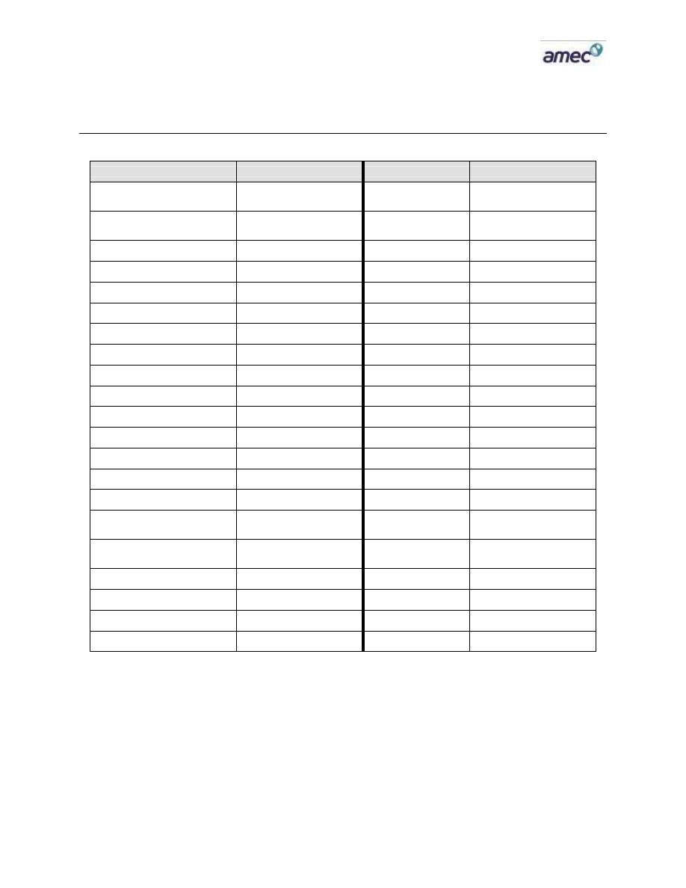
City of Poquoson, Virginia
Multi-Hazard Mitigation Plan
39
critical facilities was compiled using data from the City of Poquoson and from the HAZUS-MH MR3
inventory datasets; it includes police stations, fire departments, schools and local government buildings
(Table 13).
Table 13. City of Poquoson Critical Facilities
Address
Facility
Address
Facility
1033 Poquoson Ave
Poquoson Elementary
School
19 Odd Rd
Poquoson Primary
School
985 Poquoson Ave
Poquoson Middle
School
51 Odd Rd
Poquoson High School
1 Park St
Pump Station
83 Forrest Dr
Pump Station
2 Hunts Neck Rd
Pump Station
38 Westover Dr
Pump Station
148 Pasture Rd
Pump Station
674 Poquoson Ave
Pump Station
7 Poquoson River Dr
Pump Station
118 Browns Neck Rd
Pump Station
29 Hansom Dr
Pump Station
362 A Wythe Creek Rd
Pump Station
216 Wythe Creek Rd
Pump Station
151 A Little Florida Rd
Pump Station
244 Little Florida Rd
Pump Station
830 Poquoson Ave
Pump Station
2 Freeman Dr
Pump Station
21 A Ridge Rd
Pump Station
1462 Poquoson Ave
Pump Station
7 Rollins Rd
Pump Station
24 North Odd Rd
Pump Station
207 Cedar Rd
Pump Station
109 Rens Rd
Pump Station
10A Roberts Landing Dr Pump Station
126 Messick Rd
Pump Station
4 Cove Rd
Pump Station
103 River Rd
Pump Station
774 Poquoson Ave
Police Department
1035 Poquoson Ave
Fire Station No. 1
12 Municipal Dr
Public Works
Department
34 Cedar Rd
Cox Tower (City radio
repeater)
830 Poquoson Ave
Parks Building (City
archives)
500 City Hall Ave
City Hall
100A Emmaun Rd
Pump Station
562 Wythe Creek Rd
Fire Station No. 2
698A Yorktown Rd
Pump Station
5 Victory Blvd
Pump Station
1A Dorothy Dr
Pump Station
Wythe Creek/Victory Blvd
Stop light Control Station
Various locations
18 Grinder stations
Single family residences make up the majority of structures in the City. Since Poquoson serves as a
bedroom community for much of the Peninsula, the majority of land improvements were for the purpose
of single family residents. The City of Poquoson provided information on all structure counts and
improved values in the community. See Table 14 for structure count, as well as building, contents, and
total value, sorted by occupancy type.
City of Poquoson, Virginia
Multi-Hazard Mitigation Plan
40
Table 14. Structure Exposure by Occupancy Type
Occupancy Type
Structure Count
Building Value
Contents Value
Total Value
Single Family
Residential
4,106
$ 972,162,100
$ 486,081,050
$ 1,458,243,150
Multi-Family Residential
289
$ 62,401,100
$ 31,200,550
$ 93,601,650
Commercial
108
$ 58,440,100
$ 29,220,050
$ 87,660,150
Total
4,503
$1,093,003,300
$ 546,501,650
$ 1,639,504,950
Source: City of Poquoson Assessor, November 2008
4.2.2 Flood
The City of Poquoson’s vulnerability to flood was analyzed in GIS, using two separate digital floodplains.
The first was the City’s Flood Insurance Rate Map (FIRM), the official map on which FEMA delineated the
100- and 500-year floodplains. The FIRM flood zone designated as AE indicates areas with a 1-percent
annual chance of flooding (100-year flood or base flood), the flood zone designated as Shaded X
indicates areas with a .2-percent annual chance of flooding (500-year flood), and V zones represent that
portion of the floodplain prone to velocity wave action of waves 3 feet in height above the stillwater base
flood elevation. In Poquoson, tides and storm surge levels influence floodwater characteristics. The wave
action that occurs during flooding in V zones generally causes more severe structural damage and
erosion than what is experienced in nearby A zones and riverine flooding areas. The City’s V zones are
located in coastal/riparian areas where the land meets the water. The FEMA-designated floodplain was
used for the critical facilities analysis component of the vulnerability assessment, as well as the structure
count analysis. The City has not identified any areas outside of the mapped SFHA that has flooded in the
past.
The second digital floodplain used in the City of Poquoson’s flood vulnerability assessment is a 100-year
coastal flood generated by HAZUS-MH MR3, FEMA’s software program for estimating potential losses to
population and structures from disasters. The software requires the user-input of Base Flood Elevations
(BFE), a shoreline characterization, and a Digital Elevation Model (DEM). The BFEs and shoreline
characteristics were obtained from Poquoson’s Flood Insurance Study, and the DEM was derived from
the City’s 1 foot contour elevation data. HAZUS-MH produced a flood polygon and flood-depth grid that
represents the base flood. This software was used for the structure value loss estimation component of
the vulnerability assessment, as well as for the elevated structures analysis. Figure 12 shows the FIRM
data, and the approximate locations of critical facilities, structures, and repetitive loss properties. The
figure shows approximately 90-percent of the City’s land mass lies within the 100-year floodplain. Figure
13 shows the HAZUS-MH flood depth grid. The HAZUS-MH modeled floodplain inundates even more of
the City than the FIRM.
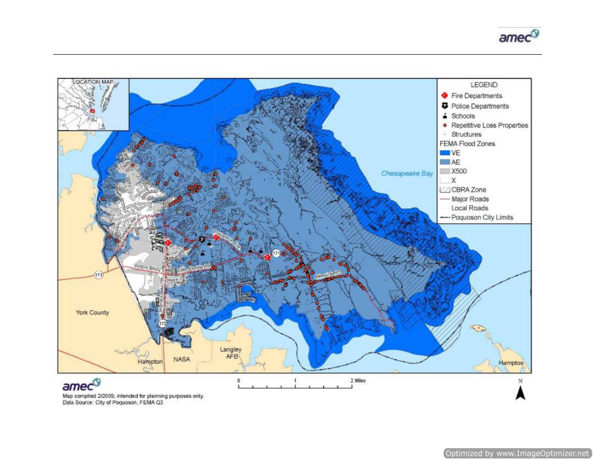
City of Poquoson, Virginia
Multi-Hazard Mitigation Plan
41
Figure 12. Map of FEMA Floodplain, Critical Facilities, and Repetitive Loss Properties

City of Poquoson, Virginia
Multi-Hazard Mitigation Plan
42
Figure 13. Map of HAZUS-MH 100-Year Flood Depth
City of Poquoson, Virginia
Multi-Hazard Mitigation Plan
43
Critical Facilities Analysis - Flood
Using GIS, an overlay analysis was performed to determine which critical facilities would be inundated by
a 100-year flood event, as shown by the Flood Insurance Rate Maps (FIRMs) for the City of Poquoson.
See Figure 12 for a map of critical facilities overlaid on the City of Poquoson’s FIRM, and Table 15 for a
list of which facilities fall into specific flood zones. All of Poquoson’s critical facilities, with the exception of
Poquoson’s Fire Station #2 and City Hall, are expected to be inundated during a 100-year flood event;
Fire Station #2 is expected to be flooded during a 500-year flood event. Based on addresses of the
critical structures below, 48 of the City’s 59 identified critical facilities are located in the 100-year
floodplain. Please note that even though these facilities are shown in the 100-year floodplain on the City’s
FIRM, several of the newer facilities have been constructed so as to be elevated to or above the Base
Flood Elevation (Poquoson Elementary School and new pump stations).
Table 15. Critical Facilities in the Floodplain
Type
Name
Flood Zone
Poquoson Fire and Rescue (Station #1)
AE
Poquoson Fire and Rescue (Station #2)
Shaded X
(500-year)
Fire Department
City of Poquoson Fire Department
AE
Police Department
Poquoson Police Department
AE
Poquoson Middle School
AE
Poquoson Primary School
AE
Poquoson High School
AE
Schools
Poquoson Elementary School
AE
Pump Stations
29 in various locations
AE
Grinder Stations
18 in various locations
AE
Communication towers
3 in various locations
AE
Parks Building (City
Archives)
830 Poquoson Ave
AE
Public Works Dept
774 Poquoson Ave
AE
As evidenced by the City’s commitment to protecting critical facilities constructed in the past five years, all
future critical facilities and infrastructure will be constructed to avoid the flood-prone areas of the City if
possible, and to minimize impacts otherwise. This commitment will ensure that the vulnerability of critical
facilities and infrastructure does not increase by placing new structures in harm’s way. The City’s one
foot freeboard requirement for flood-prone construction applies to public structures, as well.
Structure Analysis - Flood
The HAZUS-MH coastal flood model was used to generate a 100-year flood for the City of Poquoson.
The Comprehensive Data Management System, a complimentary tool to HAZUS-MH MR3 that provides
users with the capability to update and manage statewide datasets, was used to upload Poquoson’s
structure data from the Assessor’s parcel database. HAZUS calculates building damage by census block
based on the average depth of flooding within a given Census Block. Flood damage is directly related to
the depth of flooding. HAZUS-MH uses depth-damage functions to model the losses. For example, a
two-foot flood generally results in about 20-percent damage to the structure (which translates to 20-
percent of the structure’s replacement value).
City of Poquoson, Virginia
Multi-Hazard Mitigation Plan
44
Table 16 describes the structure loss, according to HAZUS-MH, sorted by occupancy type. The City of
Poquoson will experience significant damages during and after a 100-year flood, or the flood with a 1-
percent chance of occurring in any given year. Combined structure and content value losses in the
community total nearly $400 million. The loss ratio represents the percent of the total building exposure
that could be damaged. According to this model, damage associated with a 100-year event would be as
high as 25-percent of the total value of all single family residential structures and their contents, or more
than $365 million.
Table 16. HAZUS-MH Loss Estimates, 100-Year Coastal Storm*
Occupancy Type
Building Loss
Contents Loss
Total Loss
Loss Ratio
Single Family Residences
$226,395,000
$138,958,000
$365,353,000
25%
Multi-Family Residences
$ 7,330,000
$ 4,672,000
$ 12,002,000
13%
Commercial Structures
$ 10,013,000
$ 7,579,000
$ 17,592,000
20%
Total
$243,738,000
$151,209,000
$394,947,000
24%
*Assumes all structures constructed at-grade; does not account for structures elevated above BFE.
The structure count analysis was performed using GIS, by overlaying structure points on the digital FIRM.
According to this analysis 3,194 structures are located within A or V zones. This is an increase of 311
structures over the approximate analysis performed in 2004. This is not necessarily an increase in risk
as an improvement in analysis methods. There are 3,152 structures, or 70-percent of the total structure
count, in the A (100-year) zone, and 42 in the V zone. There are 814 structures within the 500-year
floodplain, leaving 1,309 total structures outside of the 100-year floodplain zone, and 495 structures
outside of the 100- and 500-year floodplains.
According to the hurricane surge mapping (see hurricane vulnerability discussion), all structures will be
affected by flooding associated with a Category 2 storm. Many structures in Poquoson, however, are
elevated to or above the base flood elevation as a result of floodplain management practices within the
City, so inundation of all structures is not assumed. The previous model analyses, however, do not
account for this fact and assume all structures in the Special Flood Hazard Area will be inundated. The
following analysis accounts for the cost savings due to mitigation.
Elevated Structures Analysis
HAZUS-MH was used to perform an elevated structures analysis for Poquoson. The City provided a list
of the 567 structures in which the first finished floor was elevated to or above the base flood elevation.
While this is not a comprehensive list of all elevated structures, the data can contribute to an improved
analysis of flood risk. The aforementioned CDMS tool enables the user to input locally-provided structure
count and value data into the HAZUS-MH datasets to help provide more accurate loss estimates. Loss
estimates from the 100-year floodplain were generated using that data (see Table 16). Poquoson’s
structure value data was then manipulated to reflect $0 structure values for the elevated structures. This
model assumes that those structures elevated above the base flood elevation avoid all damage from a
100-year event. The revised data was uploaded into the HAZUS-MH datasets, and loss estimates were
re-generated with the new values. The difference between the original loss estimate and the new loss
estimate quantify the savings, or losses avoided, due to elevating structures. According to this analysis,
there is a total of $64,228,000 saved during a 100-year coastal flood as a result of elevating 567
structures; this is a 16-percent reduction in total loss. See Table 17 for the results. Figure 14 shows the
distribution of the flood losses across the City, by Census Block, and the location of elevated structures.
City of Poquoson, Virginia
Multi-Hazard Mitigation Plan
45
Table 17. Elevated Structures Analysis
Estimated Building
Loss
Estimated Contents Loss
Total Loss
Flood Damages
Assumes No Mitigation
$243,738,000
$151,209,000
$ 394,947,000
Flood Damages
Accounts for Elevated Structures
$204,032,000
$126,687,000
$ 330,719,000
Losses Avoided
Through Mitigation
$ 39,706,000
$ 24,522,000
$ 64,228,000
Elevated structures are not vulnerable to flood damage from the 100-year flood, and all new
residential and commercial development must be protected to at least one foot above the 100-year
flood elevation. As a result, future development in the City of Poquoson is not expected to create
any new structures, either commercial, residential or critical, that add to the vulnerability figures
provided in this Plan. Likewise, the Uniform Statewide Building Code and the Municipal Code require
that future infrastructure be carefully designed and installed so as to prevent damage from the 100-
year flood.
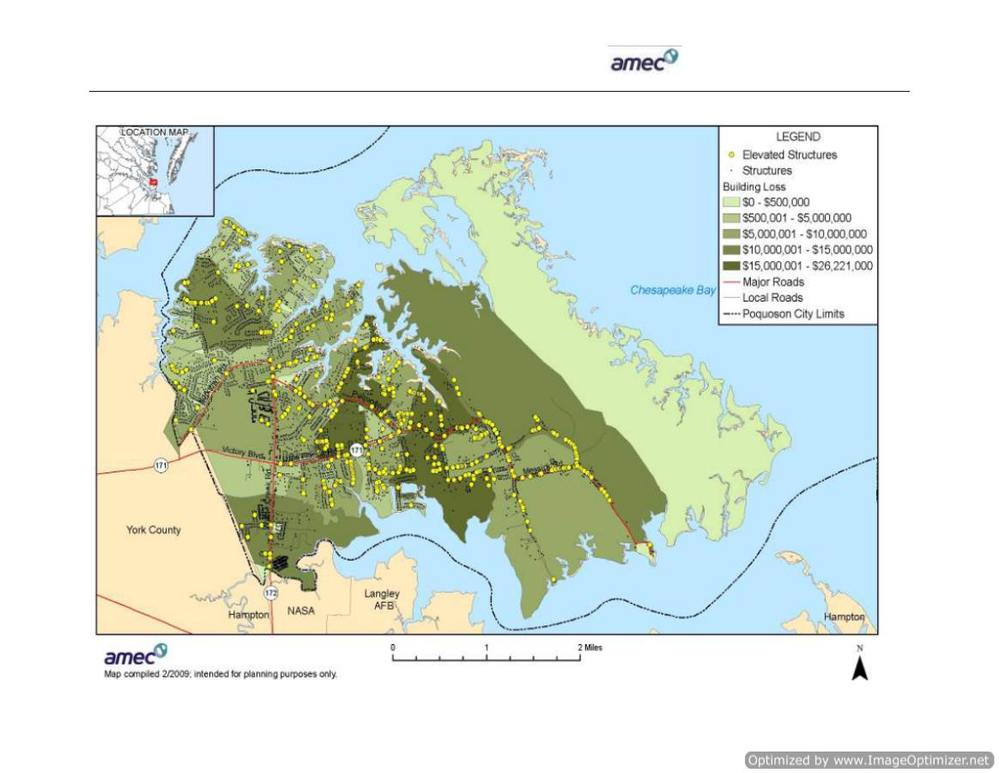
City of Poquoson, Virginia
Multi-Hazard Mitigation Plan
46
Figure 14. Poquoson HAZUS-MH Flood Loss Map by Census Block and Elevated Structures
City of Poquoson, Virginia
Multi-Hazard Mitigation Plan
47
Flood Insurance Policy Analysis
Flood insurance policy information from July 2003 and January 2004 was provided by Virginia’s
Department of Conservation and Recreation Floodplain Management Division and is presented in Table
18. Supplemental data from FEMA, dated 2008, has been included. Note that flood insurance is available
to anyone in the City (except in Federally-designed Coastal Barrier Resource Areas) to include those
structures outside of the mapped floodplain area. Therefore, in some cases, the total number of policies
includes structures that are not in the mapped floodplain.
The increase of flood insurance policies between July 2003 and January 2004 is likely due to the effects
of Hurricane Isabel and the requirement to purchase and maintain flood insurance as a condition of
federal disaster assistance. Between 2004 and 2008 there was another increase of 476 policies. This is
likely a result of several factors, including recent nor’easters which have caused flooding since Hurricane
Isabel, shared knowledge among neighbors regarding Increased Cost of Compliance coverage to help
elevate substantially-damaged structures, and increased education and outreach about the need for flood
insurance protection. The decrease in the number of V Zone policies from 27 to 11 in 2008 is unknown.
Table 18. Flood Insurance Policies
Flood Insurance
Policies
AE Zone
V Zone
X Zone
July 2003
(pre-Isabel)
2,567 2313
28
226
January 2004
(post-Isabel)
2,596 2344
27
225
December 2008
3,110
2,666
11
433
Source: FEMA, December 2008
Flood Insurance Historic Claims Analysis
According to FEMA data from May 2008, there have been 2,614 historic flood insurance claims with total
payments of $52,584,670, since Poquoson joined the NFIP on May 16, 1977. Table 19 provides an
examination of the data for the primary loss dates and total payments. Hurricane Isabel accounts for over
96-percent of the flood insurance claims shown for the nine primary loss dates. Prior to Isabel, the NFIP
had only paid claims totaling $951,305 (converted to 2009 dollars).
Table 19. Significant Flood Events, Historic Claims Data
Event Date
Storm Event
Claims
Submitted
Total Paid
(event year
dollars)
2009 dollars*
April 26-27, 1978
unidentified
flood
48 $45,309
$147,458
October 25, 1982
unidentified
flood
24 $20,618
$45,337
April 13, 1988
unidentified
flood
7 $1,561
$2,800
City of Poquoson, Virginia
Multi-Hazard Mitigation Plan
48
Event Date
Storm Event
Claims
Submitted
Total Paid
(event year
dollars)
2009 dollars*
January 27 – Feb 15,
1998
nor’easter 168 $480,297
$625,250
September 14-20,
1999
Hurricane
Floyd
53 $102,428
$130,460
September 17-25,
2003
Hurricane
Isabel
2,011 $50,133,588
$57,653,626
September 1-5, 2006
T.D. Ernesto
72
$346,601
$364,813
October 5-10, 2006
nor’easter
122 $715,568
$753,167
November 21-23, 2006
nor’easter
15 $71,815
$75,588
Total Payments from 9 Primary Events, 1977-2008
$51,917,785
$59,798,499
Total Payments from All Events, 1977-2008
$52,584,670
n/a
*conversion based on Consumer Price Index
Flood Insurance Repetitive Loss Analysis
In recent years, FEMA has developed a concept to highlight the impact that repetitively flooded structures
have had on the NFIP. The term “repetitive loss” refers to any property for which two or more flood
insurance claims in excess of $1,000 each in a 10-year period of time has been paid. In 1998, FEMA
reported that the NFIP's 75,000 repetitive loss properties have already cost $2.8 billion in flood insurance
payments and numerous other flood prone properties continue to remain at high risk in the Nation's
floodplains. While these properties make up only 1 to 2-percent of the flood insurance policies currently
in force, they account for 40-percent of the country's flood insurance claim payments.
In 2004, FEMA identified 73 structures as repetitive loss structures in Poquoson. The list included flood
insurance claims paid as a result of flood damage caused by Hurricane Isabel in 2003. Before Hurricane
Isabel, the City had just 10 repetitive loss properties. As a result of flooding in 2006, the number of
repetitive loss properties increased to a total of 173 (FEMA, June 2008). All of these structures but one
are located in the 100-year floodplain; seven are located in the V zone. The remaining structure is located
in an X zone; the cause of flooding in that case is unknown. Repetitive losses currently account for
$9,311,052, or 17-percent, of the total flood insurance claims paid for Poquoson since 1977. Of the 173
repetitive loss structures, there are 2 condominium buildings, 2 non-residential buildings and 169 single-
family dwellings. As a part of their CRS recertification process, the City removes elevated structures from
the list annually as the elevation projects are finalized.
The general location of these properties is shown on the map in Figure 12. An analysis by the City of
repetitive loss ‘areas’ or groups of repetitive loss properties, combined with knowledge of repetitively
flooded uninsured properties, did not reveal geographic concentrations but a consistent distribution
across the City’s 100-year floodplain. Thus the entire 100-year floodplain, as indicated on the FIRM, is
considered a repetitive loss area for the purposes of this plan and for the community’s CRS outreach. As
stated above, the structure count analysis indicated that there are 3,152 structures, or 70-percent of the
City’s total structure count, in the 100-year floodplain (A Zone), and 42 in the V Zone. Table 16 provides
a summary of the loss estimate for a 100-year storm based on the structure count and the estimate value
of each building. Since the entire 100-year floodplain is considered a repetitive loss area, subject to
repetitive flooding, Table 16 also serves to provide an estimate of predicted losses for the City’s single
repetitive loss area. However, this data should also be tempered by the information on the 567 elevated
structures detailed in Table 17.

City of Poquoson, Virginia
Multi-Hazard Mitigation Plan
49
In Poquoson, residential structures in the repetitive loss area are primarily located on either side of the
main roads that reach into the main peninsulas: Little Florida Road, Poquoson Avenue, Messick Road,
Ren’s Road, Brown’s Neck Road, and Pasture Road. Poquoson Avenue and Messick Road were the first
areas of the City to be developed. The City and property owners have worked together to elevate many
of the repetitive losses in this area since Hurricane Isabel. Most of the structures west of Trinity Methodist
Church are one-story brick ranchers on crawl space foundations. East of the church, many of the
structures are older two-story structures built around the turn of the century (1900s). Further down
Messick Road, there is some infill and a large recreational park. Residential structures toward the end of
Messick Point tend to be recently elevated structures with two stories constructed after World War II.
Many have newer additions. At the very end of the point, several water-dependent structures are situated
near the water, including a public marina. Ren’s Road contains many large, elevated, new, two-story
brick homes. Along northern Wythe Creek Road and Pasture Road, the flooding during Hurricane Isabel
was not as deep or damaging, flooding mostly garages and yards. Many of the homes are two-story
structures, built in the mid- to late 20th century. Bayview Drive, which fronts the York River, has a
collection of homes on higher ground, as shown on the flood depth grid in Figure 13. Sandy Bay, also on
the York River, has several large homes which were elevated after Hurricane Isabel, and several newer
elevated homes on the water.
Access and Egress
In addition to building vulnerability, residents must consider transportation and roadway accessibility
during and after a flood. Drowning in vehicles is the number one cause of flood deaths. If residents wait
too long to evacuate, flooding of roadways may affect their chances of leaving potentially dangerous
areas. If residents and business owners choose not to evacuate during a storm, leaving their property
once the storm has ended may be impossible. Although most people are in a hurry to return after a flood
to assess damage and begin repairs, flooded roadways and bridges can prevent them from accessing
structures for several days. Therefore, roadway vulnerability to flooding must be considered in mitigation
planning.
Ninety-percent of Poquoson lies within the 100-year floodplain. In some areas, entire roadways would be
inundated by a 100-year flood event. The only road not shown in the 100-year floodplain is Victory
Boulevard, which is one of two routes leading out of the City. The other, Yorktown Road, has a small
portion on the western end of the roadway shown in the SFHA. Portions along Wythe Creek Road from
north to south are in the SFHA. Only the very western end of Little Florida Road is shown out of the
SFHA. All of Poquoson Avenue, Bunting Lodge Road and Messick Road are shown in the SFHA. Figure
15 shows the City’s emergency evacuation routes in detail.
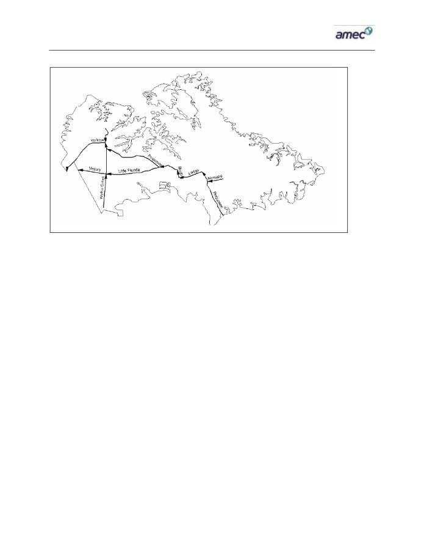
City of Poquoson, Virginia
Multi-Hazard Mitigation Plan
50
Figure 15. Poquoson’s Emergency Evacuation Route Detail
4.2.3 Wind Events
HAZUS was used to do a wind hazard analysis for Poquoson. HAZUS-MH software is designed with the
flexibility to perform loss estimations at three different levels. Level 1 utilizes all default parameters built
into the software. Levels 2 and 3 require user defined scenarios building inventory data. For the purpose of
this Plan, a Level 1 analysis was performed to calculate the City’s wind hazard data. It should be noted
that although coastal storms are comprised of both wind hazards and flooding hazards, the analysis
presented in this section reflects the results of wind-generated hazards only. The effects of flooding are
presented in the flood vulnerability discussion.
Methods
HAZUS-MH has the flexibility to estimate potential hazard impacts at various regional scales. The
smallest scale, U.S. Census Bureau Census Tract analysis, was chosen for this analysis due to the small
aerial extent of the City. Based on the 2000 Census, the City is divided into three census tracts;
51735340100, 51735340200, and 51735340300. The Comprehensive Data Management System was
used to upload Poquoson’s structure data into the respective Census Tracts, based on the parcel
database to support a refined analysis during the 2009 update.
HAZUS-MH software provides two options for wind analysis, probabilistic and deterministic. The
probabilistic hurricane scenario is the default option for the software and activates a database of many
thousands of storm tracks and intensities. This scenario generates hurricane hazards based on set return
periods. These return periods define the statistical probability that a storm of a given size and intensity
could occur within any year. The deterministic method analyzes hazards associated with a user defined
storm event. The user inputs the storm track, forward speed, and wind speed and allows for the creation
of “what-if” scenarios.
One probabilistic scenario and one deterministic scenario were performed to estimate the wind hazard for
the City. The probabilistic method was used to generate loss estimations of storms with specific
recurrence intervals; 10-, 20-, 50-, 100-, 200-, 500-, and 1000-year. A Simulated Category 3 storm event
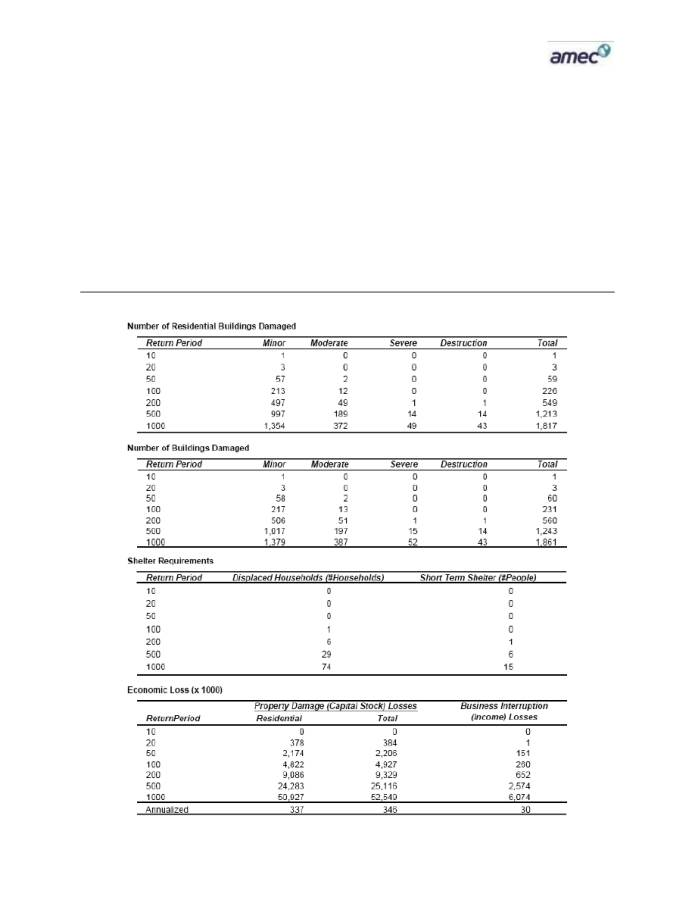
City of Poquoson, Virginia
Multi-Hazard Mitigation Plan
51
was analyzed by the deterministic method in order to model the effects of a storm tracking directly
through the City. In reality, the City has experienced zero Category 4 or 5 hurricanes since 1851 and only
a single Category 3. See Table 20 for a summary of the probabilistic scenario results.
The deterministic scenario used an arbitrary storm path track directly across the city from southeast to
northwest. Input parameters included a translation speed of 5 mph, maximum sustained wind speed of
130 mph, central pressure of 945 millibars, and radius of maximum winds of 10 miles. HAZUS-MH
estimates that 110 buildings will be at least moderately damaged (over 2-percent of the total buildings in
the City). The breakdown of estimated building damage is: minor damage to 485 structures; moderate
damage to 92 structures; severe damage to 9 structures; destruction of 8 structures. Total property losses
are estimated to be $15 million. Residential occupancies make up 98-percent of the total loss.
Approximately $1.3 million of the losses would be related to business interruption. An estimated 13
households would be displaced and an estimated 6.1 tons of debris would be generated from the event,
requiring an estimated 62 truckloads to remove the debris. No essential facilities are expected to be
damaged.
Table 20. Summary of Probabilistic Hurricane Wind Analysis

City of Poquoson, Virginia
Multi-Hazard Mitigation Plan
52
Storm Surge
Surge inundation areas are classified based on the category of hurricane that would cause flooding.
Figure 16 shows results from a 2004 “HURREVAC” Hurricane Tracking Program 6.0 model run.
HURREVAC stands for HURRicane EVACuation program, and was developed by Sea Island Software,
Inc. beginning in 1988, in response to a need for computer based management of data produced by
various federal Hurricane Evacuation Studies. The HURREVAC maps indicate that for a Category 1
hurricane, the tidal surge inundates more than 95-percent of the City of Poquoson. The final 5-percent of
land is not affected until the entire City is inundated by a Category 4 storm that carries a 15-foot storm
surge. VDEM, FEMA, and the U.S. Army Corps of Engineers cooperatively prepared data and maps to
indicate the extent of storm surge based on the category of hurricane using the SLOSH model. The storm
surge map in Figure 17 indicates the entire City will be inundated by a Category 2 storm.
The City’s geographic location places it at risk of suffering impacts due to high winds generated by
coastal storms. The level of impact will depend on the location, forward speed, and wind speed of the
storm. As the City population grows, the risk of wind hazards may increase slightly as the City’s few
remaining buildable lots are occupied. Current development trends in the City favor single family
development as opposed to multi-story structures which are more susceptible to wind damage due to
increased surface area, the potential impact of flying debris, and the fact that wind speed increases with
height above the ground. However, the City carefully enforces the Uniform Statewide Building Code
which has design guidelines for protecting new and renovated structures from storm surge and wind
damage, and all V Zone structures must be certified as capable of withstanding wind and water forces
associated with the 100-year storm. Future development, including residential, commercial, and critical
structures, and infrastructure, will be constructed according to stringent building code standards, thereby
preventing any increase in wind hazard vulnerability.
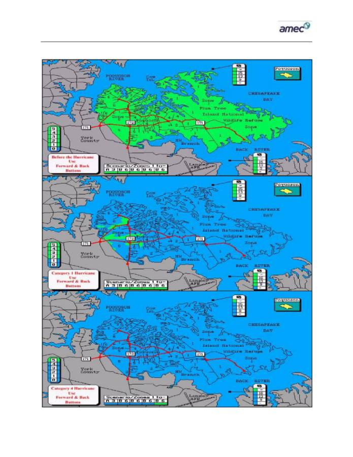
City of Poquoson, Virginia
Multi-Hazard Mitigation Plan
53
Figure 16. HURREVAC Model Results
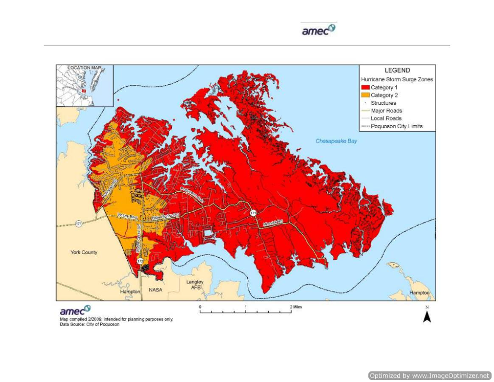
City of Poquoson, Virginia
Multi-Hazard Mitigation Plan
54
Figure 17. Poquoson Hurricane Storm Surge Inundation
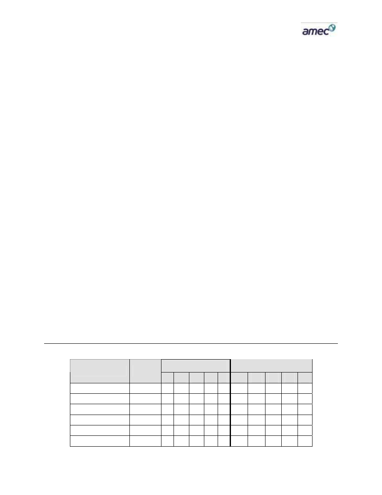
City of Poquoson, Virginia
Multi-Hazard Mitigation Plan
55
4.2.4 Sea Level Rise
As part of the 2009 update to this plan, an analysis for Poquoson’s risk to sea level rise was
accomplished using sea level trend data from NOAA (see Figures 8 and 9) and GIS analysis. Sea level
rise rates were estimated based on NOAA data at
http://tidesandcurrents.noaa.gov/sltrends/sltrends.shtml. This page describes rates of sea level rise at two
points near Poquoson: Gloucester Point (0.0125 ft/yr and Sewells Point (0.0146 ft/yr). Based on these
historic rates of rise, a conservative estimate of sea level rise is one foot in the next 70-80 years (68 years
based on the Sewells point data, and 80 years based on Gloucester Point data). The approximate
inundation area was estimated using the City’s detailed contour layer, which has 1 foot contour intervals.
The analysis used the one foot contour (one foot above mean sea level) as the future shoreline in 70-80
years. According to a visual study, scanning at 500-foot scale, if the sea level rose one foot in elevation
from the current shoreline, no existing structures would be affected. Analyzing the two foot contour had
the same results, with only one exception. There is one structure that would be affected by a 2 foot rise,
a property at Messick Boat Access Ramp with an assessed value of $406,200. While the direct impacts of
sea level rise appear minimal, the indirect impacts will be considerable, as the increase in sea level will
also increase the depth of flooding over time and potentially exacerbate flood and hurricane storm surge
losses, even in properties currently elevated to the base flood elevation.
For the 2009 update, Poquoson building officials provided completed Elevation Certificate information for
540 new or recently elevated structures in the City. Thirty-four (34) of the structures are currently located
outside the SFHA in Zone X. Using this structural information, and assuming that the base flood
elevation will increase in conjunction with sea level (one foot in 70-80 years), the effects of sea level rise
on these elevated structures can be shown. This subset of Poquoson’s structures is assumed by most
owners to be adequately protected from flood, and so the analysis of existing and future “freeboard” is
useful.
Freeboard is a factor of safety usually expressed in feet above a flood level for purposes of floodplain
management. "Freeboard" tends to compensate for the many unknown factors that could contribute to
flood heights greater than the height calculated for a selected size flood and floodway conditions, such as
wave action, bridge openings, and the hydrological effect of urbanization of the watershed. Freeboard is
not required by NFIP standards, but communities are encouraged to adopt at least a one-foot freeboard
as Poquoson did in February 2006. Freeboard results in significantly lower flood insurance rates due to
lower flood risk, especially for structures elevated to at least 2 feet above the base flood elevation.
Table 21 shows the results of the analysis. Based on the simple mathematical analysis, approximately
one-half the structures that currently have at least one foot of freeboard will still have at least that same
level of protection in 70 to 80 years. With regard to the vulnerability of future buildings and infrastructure,
the City’s freeboard requirement will apply, and will provide added protection from sea level rise, ensuring
that future development does not represent any increase in vulnerability to sea level rise.
Table 21. Sea Level Rise Impact on Elevated Structures
Current Freeboard (feet)
Future Freeboard
with 1 foot Sea Level Rise (feet)
Flood Zone from FIRM
Number of
Structures
<0
0-1
1-2
2-3
>3
<0
0-1
1-2
2-3
>3
VE, BFE 10 feet
2
1
0
1
0
0
1
1
0
0
0
AE, BFE 10 feet
94
4
53
14
6
17
53
18
6
10
7
AE, BFE 9 feet
261
19
118
65
36
23
126
76
36
10
13
AE, BFE 8 feet
149
2
27
59
36
25
24
64
36
19
6
X Zone
34
0
2
3
4
25
2
6
2
19
5
Total 540
26
200
142
82
90
206
165
80
58
31

City of Poquoson, Virginia
Multi-Hazard Mitigation Plan
56
4.2.5 Wildfire
The Poquoson Fire Department responded to over 391 wild/brush fires in the last 25 years, with 158 of
those involving Phragmites Australis. The department reported no wildfires occurred in Poquoson
between 2004 and January 2009. As mentioned earlier, Phragmites is an invasive plant species because
it moves into areas that are inhabited by other types of vegetation and eventually takes over as the
dominant species. The high productivity and the tendency for the previous year’s growth to remain
interspersed among the current year’s growth make it a wildfire danger. The combustibility of this plant
and its tendency to thrive near houses and community infrastructure is a formidable fire risk.
The Virginia Department of Forestry (VDOF) has provided information on identifying high-risk wildfire
areas. Their Fire Risk Assessment Map was designed to help communities determine areas with the
greatest vulnerability to wildfire. This map was used in a GIS environment during the 2009 update to
refine the 2004 vulnerability assessment.
The Fire Risk Assessment Map, Figure 18, delineates the aerial extent of wildfire vulnerability within the
City of Poquoson, based on VDOF fire risk assessment data. The risk area boundaries are based on a
model of fire risk that incorporated metrics for land use, population density, slope, land cover and
proximity to roads. Given the City’s low flat topography, slope does not contribute significantly to the
City’s fire risk. Land use, land cover and proximity to City roads are the main influences on the fire risk.
Land Cover data reveals the type of wildfire fuels that are likely to be found in different areas. Fuel types,
such as grasslands, ignite easily and burn with great intensity, facilitating greater rates of wildfire
advancement. Thus, recognition of these land cover types and size are essential in determining wildfire
risk. However, both woody wetlands and emergent wetlands were rated as low-risk fuels in the VDOF
model used to map the wildfire risk, so Figure 18 does not adequately account for wildfire risk due
specifically to Phragmites. The resolution of the data and the scale of the modeling have limitations for
determining risk to a small area such as Poquoson. The lack of detailed fuel models is commonly
recognized as the most prominent limitation of wildfire risk modeling (VDOF, 2009).
Distance of tree line or brush to roads is also included in the wildfire risk analysis to capture the
human/wildfire causal relationship. Travel corridors increase the probability of human presence across a
landscape, thereby increasing the probability of wildfire ignition. As such, areas closer to roads have a
higher ignition probability.
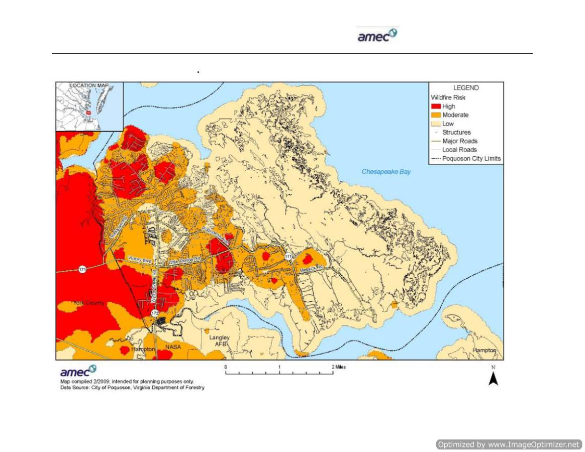
City of Poquoson, Virginia
Multi-Hazard Mitigation Plan
57
Figure 18. Wildfire Risk Map
City of Poquoson, Virginia
Multi-Hazard Mitigation Plan
58
An example of urbanization lowering the risk of wildfire can be seen in the central portion of the City, near the
intersection of Little Florida Road and Wythe Creek Road. This is an anomalous low risk area compared to
the medium and high risk areas surrounding it, but it’s justifiable because of the commercial land use in
this section of the City of Poquoson. Like many commercial urban areas, this section of the City has
many large hard surfaces such as parking lots and large buildings, which lowers available wildfire fuel,
thereby lowering the wild fire vulnerability. In addition, the risk of fire increases in areas of the City
accessible by roads. Almost all areas bisected by a road have at least a moderate risk for wildfire. Large
areas with available wildfire fuel that are accessible by road will have the greatest risk levels. Risk levels
are high in these areas for two reasons. First, larger, open areas of land are much more likely to contain
significant amounts of wildfire fuel, including undergrowth, dead plant material, deadfalls, and other
combustible ground cover. In addition, when these open stands are accessible to human contact, the
risk of accidental fire increases. Examples of high-risk large open areas are in the northwestern and
southwestern parts of the City.
Method
During the 2009 plan update, GIS was used to overlay the fire risk zones on existing structures to assess
the number and value of structures in the high risk areas. This method replaces a previous method used
in 2004 that applied a Zoning Atlas, provided by the City of Poquoson, dated November 25, 2002 and
property assessment values, dated March 30, 2004. This updated analysis assumes that all affected
properties are completely destroyed, which is often the case in wildland-urban interface fires. It is not
likely that a wildfire would consume all of these structures in one occurrence, so this representation
should be considered a worst-case scenario. Approximately 1,160 acres of the City fall within a high-
risk zone and account for 9-percent of the aerial extent of the City, (see Table 22). The results of the
property analysis within the high fire risk zone are presented in Table 23.
Table 22. Fire Risk Area
Zone
Coverage
(Acres)
% of total
1 (low)
8,763
68
2 (moderate)
3,015
23
3 (high)
1,160
9
Totals 12,938
100
Table 23. Summary of Structures and Value in High Wildfire Risk Zone
Property Type
Structure Count
Improved Value
Estimated
Content Value
Total
Single Family
784
$197,698,600
$98,849,300
$296,547,900
Multi-Family 82
$22,586,800
$11,293,400
$33,880,200
Commercial 8
$3,316,800
$1,658,400
$4,975,200
Research & Development
1
$1,531,200
$765,600
$2,296,800
Total 875
$225,133,400
$112,566,700
$337,700,100

City of Poquoson, Virginia
Multi-Hazard Mitigation Plan
59
The City of Poquoson’s future fire risk will be dependent on the type of development, including building
construction and design, as well as firebreak buffer space and landscaping requirements. Based on
the parameters discussed above, the City of Poquoson could see a decrease in fire risk as the City
continues to develop and replace open space, and its inherent wildfire fuel supplies, with impervious cover.
In addition, maintenance of City and Virginia Department of Forestry policies for controlled burning and
proper public education on wildfire causes and risks will help the City avoid wildfire damage.
4.2.6 Winter Storm
As shown in Figure 19 excerpted from the Commonwealth of Virginia Emergency Operations Plan,
Standard and Enhanced Hazard Mitigation Support Annex 3 (VDEM 2007), Poquoson is in the lowest
region for snowfall accumulation in the State. The community’s biggest winter weather threats come from
nor’easters, which can bring strong winds and anything from rain to ice to snow and even blizzard
conditions. This combination of heavy frozen precipitation and winds can be quite destructive and lead to
widespread utility failures and high cleanup costs. According to the Commonwealth of Virginia’s Hazard
Mitigation Plan update for 2010, which is still underway, the City of Poquoson averages less than 1.5
days of 3 inches or more of snow per year, and the City has an average annual return frequency for one
day of 12 inches of snow or more of 0 to 0.05 on a zero to one scale where zero never occurs and 1
always occurs.
Excessively cold temperatures that are life-threatening and that require wind chill warnings are a rare
occurrence in the region. The impacts of winter storms are minimal in terms of property damage and
long-term effects. The most notable impacts are damage to power distribution networks and utilities.
Severe winter storms have the potential to inhibit normal functions of the City such as trash collection.
Governmental costs for these events are a result of personnel and equipment costs for snow removal.
Private sector losses are attributed to lost work when employees are unable to travel. Homes and
businesses suffer damage when electric service is interrupted for long periods of time. Health threats can
become severe when frozen precipitation makes roadways and walkways slippery. Occasionally,
buildings may be damaged when snow loads exceed the design capacity of their roofs or when trees fall
due to excessive ice accumulation on branches. The primary impact of excessive cold is increased
potential for frostbite, and death as a result of over-exposure due to extreme cold. Extreme or excessive
cold presents a secondary hazard to livestock, pets and frozen plumbing in homes and businesses.
Future development in the City of Poquoson must meet the standards outlined in the Uniform Statewide
Building Code to protect from snow loads and frost damage. Consequently, there is no expected
increase in vulnerability from winter storms associated with future development.

City of Poquoson, Virginia
Multi-Hazard Mitigation Plan
60
Figure 19. Annual Accumulation of Snowfall in Virginia
(Source: Commonwealth of Virginia Emergency Operations Plan, Annex 3, 2007)
City of Poquoson, Virginia
Multi-Hazard Mitigation Plan
61
2009 Updates to Section 4.2: Introduction to this section was expanded to provide a summary of the
updated data used for the update. Section 4.2.1 includes an updated list of critical facilities since many
new facilities have been added. Structure exposure data in Table 14 was updated using HAZUS and
updated data from the City Assessor. Section 4.2.2 was updated using HAZUS to refine and map flood
vulnerability. A flood depth grid and new floodplain map were also added. Critical facilities in the
floodplain were updated using HAZUS, and the loss estimate in Table 16 was updated using HAZUS-MH.
The elevated structure analysis in this section is also new and is based on new data from the City. The
flood insurance policy analysis, historic claims analysis and repetitive loss analysis were all updated
based on the latest data available from FEMA. The wind event analysis in Table 20 and the storm surge
map were both updated. Section 4.2.4 is all new and addresses the City’s vulnerability to sea level rise,
which is now considered a critical hazard. Section 4.2.5 was updated with new data and a new map from
VDOF (Figure 18). Fire risk area and vulnerability in Tables 22 and 23 were updated using GIS methods.
Section 4.2.6 was added to include limited vulnerability information on winter storms from the State
Hazard Mitigation Plan.
4.3 Capability Assessment
The capability analysis is a key element in developing suitable goals and objectives for mitigation.
Because mitigation is most effective at protecting development that does not yet exist, a community’s
development trends can provide direction, incentive and alternatives to placing new development at risk
from natural hazards. Furthermore, a careful analysis of existing capabilities increases the likelihood of
identifying practices that could potentially increase the impacts of hazards upon the communities. A
properly conducted mitigation capability assessment can also demonstrate potential gaps that hinder
mitigation programming or highlight policy needs that could enhance mitigation programming.
4.3.1 Local Capabilities
Poquoson’s existing capability with regard to natural hazard mitigation was examined through interviews
with key personnel, data collection, and examination of regulations. The matrix in Table 24 was
completed for and used to trigger discussion about existing policies, regulations, and processes for
numerous hazards.
Table 24. Poquoson Capability Matrix
Mitigation Capability
2004
2009
Comprehensive Plan
Yes
Yes - revision to be adopted early, 2010. Will
Adopt Hazard Mitigation Plan by reference.
+
Land Use Plan
Yes
Yes
Subdivision Ordinance
Yes
Yes – Flood zone required on plat.
Zoning Ordinance
Yes
Yes – Comprehensive plan recommends updates.
Floodplain Management Ordinance
Yes
Yes – One foot freeboard required as of 2/2006
-Effective Flood Insurance Rate Map
Date
3-August-92 3-August-92
-Substantial Damage Language
Yes
Yes
-Certified Floodplain Manager
No
Yes, Building Official
+
-Number of Floodprone Buildings
2,841
3,194
-Number of NFIP policies
2,596
3,110
+
-Maintain Elevation Certificates
Yes
Yes - digitally
+
-Number of Repetitive Losses
73
173
CRS Rating
Class 9
Class 9 (5% discount on flood insurance)
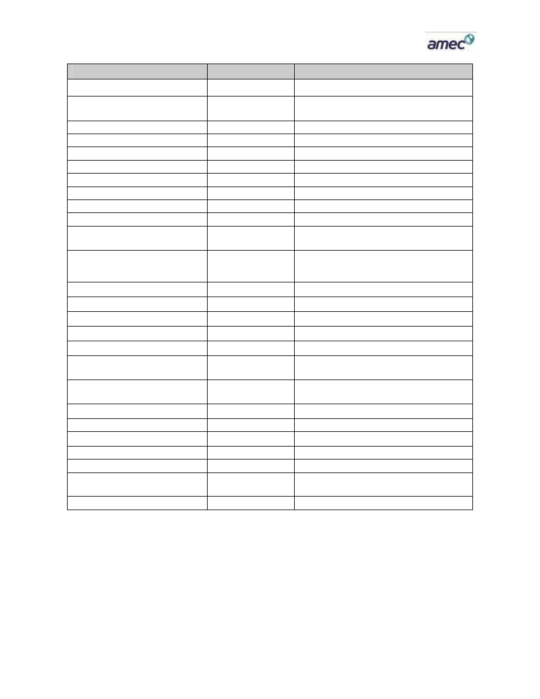
City of Poquoson, Virginia
Multi-Hazard Mitigation Plan
62
Mitigation Capability
2004
2009
Stormwater Program
Yes
Yes
Building Code Version
Full-time Building Official
USBC 2000 Edition
(based on IBC)
Virginia USBC, 2006 Edition
City adopted code in January 2009.
+
- Conduct “As-built” Inspections
Yes
Yes
- BCEGS Rating
TBD
4
Emergency Operations Plan
Yes
Yes
Hazard Mitigation Plan
Yes
Yes
Warning Systems in Place
Yes
Yes
-Storm Ready Certified
No
No
-Weather Radio Reception
TBD
Yes
-Outdoor Warning Sirens
Yes
Yes, for Surry Nuclear Power Plan only
-Emergency Notification (R-911)
No
Yes - reverse 911 “Code Red”, includes weather
warning system.
+
-other (e.g., cable override)
Yes – cable -
Emergency Alert System
Yes – cable – Emergency Alert System
CERT - Community Emergency Response Team
Program
+
GIS system
No
Yes
+
-Hazard Data
n/a
Yes
+
-Building footprints
n/a
Yes
+
-Tied to Assessor data
n/a
Yes
+
-Land Use designations
n/a
Yes
+
Structural Protection Projects
No
Yes – case by case flood retrofit assistance, as
requested
+
Property Owner Protection Projects
Yes –
Acquisition/Elevation
Yes – approximately 270 homes elevated through
ICC, CDBG and HMGP
+
Critical Facilities Protected
No
Yes, partially
+
Natural Resources Inventory
Yes
None identified
Cultural Resources Inventory
TBD
Poquoson Museum (in SFHA)
+
Erosion Control Procedures
Yes
Yes
Sediment Control Procedures
Yes
Yes
Public Information Program/Outlet
Yes
City TV channel, community boards, newsletters,
mailings, CRS outreach, web site
+
Environmental Education Program
Yes
Yes, through HRPDC
+
indicates increased capability since the previous Hazard Mitigation Plan
The following section explains each line in the matrix in more detail:
Comprehensive Plan: Comprehensive long-term community growth plan.
Land Use Plan: Plan that designates type of land use desired/required for individual parcels; often based
on Zoning.
Subdivision Ordinance: Regulations that dictate lot size, density, setbacks, construction type and other
parameters for large developments.

City of Poquoson, Virginia
Multi-Hazard Mitigation Plan
63
Zoning Ordinance: Regulations that dictate acceptable uses for individual parcels; may be tied to Land
Use Plan.
Floodplain Management Ordinance: Directs development in identified Flood Hazard Areas. Required
for participation in NFIP.
Substantial Damage Language: Provision of Floodplain Management Ordinance requires existing
construction be brought into compliance if structure is damaged/improved by more than fifty percent of its
value.
Certified Floodplain Manager: Association of State Floodplain Managers’ designation for professionally
certified floodplain managers.
Number of Flood-Prone Buildings: Number of buildings in the mapped Special Flood Hazard Area.
Number of NFIP policies: Number of buildings insured against flood damage through the NFIP.
Number of Repetitive Losses: Number of properties with multiple flood insurance claims in ten year
period.
CRS Rating: Community Rating System of the NFIP is an incentive program that rewards communities
for regulations/programs that exceed NFIP minimums through premium reductions for insured.
BCEGS: Building Code Effectiveness Grading System Rating assesses the building codes in effect and
how they are enforced, with special emphasis on mitigation of losses from natural hazard.
Emergency Operations Plan: Disaster Response Plan focuses on different disaster types and
scenarios.
Hazard Mitigation Plan: Plans such as this may address different types of hazards, including natural
hazards, man-made hazards, others as defined by a particular jurisdiction.
Warning: Warning systems in place in a community, including NOAA Weather Radio reception, outdoor
sirens, Cable Override, Flood Warning System, or Emergency Warning Notification System.
GIS: Geographic Information System, or geographic databases interfaced with community mapping to
provide enhanced planning and response capability.
Structural Protection Projects: Constructed flood protection, such as levees, drainage facilities,
detention/retention basins.
Property Protection Projects: Non-structural flood protection through acquisition, elevation of structures,
or flood proofing.
Critical Facility Protection: Previous community projects to protect critical facilities May include
protection of power substations, sewage lift stations, water-supply sources, the EOC, police/fire stations
or medical facilities.
Natural and Cultural Inventory: Inventory of resources, maps, or special regulations to protect natural or
cultural resources; examples include wetlands, steep slopes or historic structures.
Erosion or Sediment Control: Regulations to protect streams and waterways from sediment
contributions originating from construction, runoff, or other sources.

City of Poquoson, Virginia
Multi-Hazard Mitigation Plan
64
Public Information or Environmental Education Program: Ongoing programs providing information to
the public on hazards, environmental awareness, and emergency preparation. May include flyers in City
utility billings, a website, or an environmental education program for students.
Form of Governance
The City of Poquoson operates under the Council/Manager form of government. Poquoson City Council
is composed of seven members who are elected to four-year terms. The City is divided into three
precincts, each having two council representatives. One additional representative is elected at large and
serves as Mayor.
The City Council is the policy making body of the City. Its responsibilities include adoption of the City
budget, approval of all tax levies, adoption of ordinances, and approval of amendments, supplements or
repeals to ordinances and the City Code. The City Council also appoints the City Manager, City Clerk,
and City Attorney. The City Manager serves as the chief administrator of the City, and is responsible for
the implementation of the policies adopted by City Council, enforcement of ordinances, and the general
management of the City’s affairs.
Public Infrastructure and Utilities
Poquoson was part of York County for over three centuries, and only became independent in 1952. As a
result, some services are still shared with York County, such as Court services, Commonwealth’s
Attorney, Social Services, and the Sheriff’s Department. The City obtains its drinking water from Newport
News Waterworks, which also services other communities on the Peninsula. Public water service is
required for new proposed developments. The wastewater collection and treatment system which serves
the Peninsula is the share responsibility of Hampton Roads Sanitation District and the City. The City of
Poquoson Utilities Department operates and maintains Poquoson’s wastewater collection system. The
storm drainage system consists of City-owned drainage easements and drainage on property maintained
by the City. The City outsources the pickup of residential solid waste, which is disposed of at the
Hampton/NASA Steam Plant.
As a result of recommendations made in the 2004 Multi-Hazard Mitigation Plan, the City has protected
some critical facilities from flooding. Flood hazards at critical facilities have been addressed through
various methods, including freeboard on the City’s new elementary school, providing generators to key
facilities, particularly City Hall, moving the Emergency Operations Center and 911 centers out of the 100-
year floodplain, providing new evacuation equipment, and raising traffic light controls at two key
intersections (Yorktown Road and Hunts Neck Road, Kelser Drive, and Wythe Creek Road).
Built in 1970, Poquoson Fire Station #1 suffered extensive flood damage during Hurricane Isabel in 2003.
Poquoson officials decided to build the replacement Fire Station at a much higher elevation. The new
12,000 square foot, $2.9 million station was rebuilt on fill to an elevation of 15 feet above mean sea level.
Opened to the public in February 2009, the new facility includes expanded living quarters, a radio
communications room, a 5,400 square foot vehicle bay, and a commercial grade kitchen; all of it is well-
protected from future flood damage.
Guiding Community Documents
The City of Poquoson has a range of guidance documents and plans for each of their departments.
These include a comprehensive plan, public works, and public utilities plans, capital improvement plans,
and emergency management plans. The City uses building codes, zoning ordinances, subdivision
ordinances, and various planning strategies to address how and where development occurs. One
essential way the City guides its future is through policies laid out in the Comprehensive Plan.
City of Poquoson, Virginia
Multi-Hazard Mitigation Plan
65
City of Poquoson Comprehensive Plan, 2008-2028, Building a Sustainable Community
The Comprehensive Plan forms the policy framework to implement a community-based vision for the City.
This document presents policies and strategies for growth management and recognizes the value in
preserving wetlands for flood control measures. Plan goals and strategies are dedicated to preserving
the natural environment, open space and areas deserving special attention including costal areas,
tidal/not-tidal wetlands, prime forest, agricultural lands, mature trees, highly permeable soils, erodible
soils and ground water.
Shoreline restoration and stabilization, water quality, and groundwater are given special attention in the
updated plan at the urging of citizens. Strategies such as “no wake zones” for boats, and pumpout
facilities at marinas are recommended. The plan encourages conservation of existing vegetation and
landscape features for new development and includes recommendations to the zoning and subdivision
ordinances to help ensure this happens. The plan generally recommends that future development be
focused on existing areas of impervious surface. Additional information and data on groundwater and
recharging aquifers, water conservation, and wave velocity at waterfront sites is provided. The plan also
includes strategies for regulating open burning, and urges consideration of banning open burning for land
clearing.
The Comprehensive Plan recommends continued participation by the City in the National Flood Insurance
Program (NFIP) and the Community Rating System (CRS). The City has achieved a Class 9 in the CRS,
resulting in a 5-percent reduction in flood insurance premiums for most policyholders. The premium
reduction is an incentive to urge communities to exceed the minimum requirements of the NFIP with
regard to outreach, design guidelines, and public information.
The Comprehensive Plan recognizes the role of the City of Poquoson Wetlands Board in regulating
riparian development. The Board reviews proposals and issues permits in accordance with State and
local requirements for wetland avoidance and wetland impact minimization for all new development and
renovation projects. Mitigation is required when impacts are unavoidable.
Regarding climate change, the Comprehensive Plan indicates that the City is awaiting further direction
from the Virginia Governor’s Council on Climate Change before making specific recommendations for
changes to City practices. A primary focus of the climate change council and report is reducing
greenhouse gas emissions; however, specific recommendations for sea level rise are included. The
report and recommendations may be found online at:
http://www.deq.state.va.us/export/sites/default/info/documents/climate/CCC_Final_Report-
Final_12152008.pdf
.
As a result of recommended mitigation actions made in the 2004 edition of this Hazard Mitigation Plan,
Poquoson’s 2009 Comprehensive Plan will include the most current Multi-Hazard Mitigation Plan by
reference. The Multi-Hazard Mitigation Plan and the City’s Comprehensive Plan are now complementary
and together they reinforce the importance of sound planning decisions.
Zoning, Development and Infrastructure Standards
The Poquoson Development Review Committee (DRC) reviews proposed development as a group to
ensure compliance with development standards. The DRC consists of representatives from Engineering,
Planning, Community Development, Building Inspection, Fire Department, Environmental Compliance,
Public Works, Assessor’s Office, and Utilities. A map showing Poquoson’s Zoning areas is provided in
Figure 20.
As seen in Figure 20, a large portion of the eastern part of the City, including wetlands and coastal barrier
uplands, has conservation zoning. These areas are not likely to be developed, and instead are protected
so that the natural and beneficial functions of these lands are not diminished. A U.S. Army Corps of
Engineers ordinance clean-up project on Plum Tree Island is ongoing, with seasonal bomb sweeps being
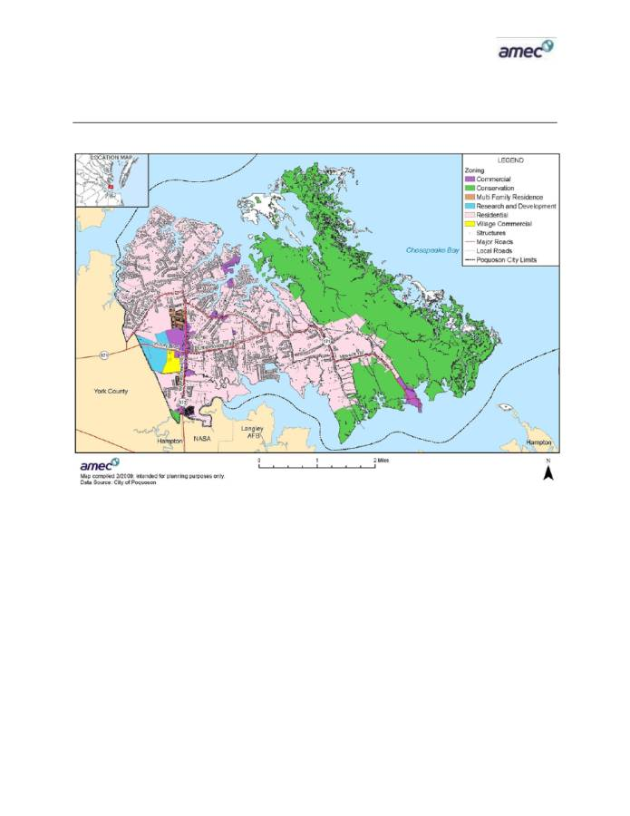
City of Poquoson, Virginia
Multi-Hazard Mitigation Plan
66
conducted at regular intervals, but planned in advance of the arrival of migratory shorebirds. In 2011, a
feasibility study will examine potential plans for further clean-up efforts, and additional work could begin in
2012. (Daily Press, 2009)
Figure 20. City of Poquoson Unofficial Zoning Map
The City is particularly concerned with water quality and diligently regulates stormwater and erosion
control measures. The City Engineer indicates that some stormwater BMPs do not work particularly well,
and are therefore not allowed without extensive soil engineering tests to support their effectiveness.
Poquoson has particularly tight, clay soils and a high water table, so the infiltration methods of some
BMPs are simply ineffective. Shallow marshes are not allowed because they attract mosquitoes and are
unpopular with residents. While the State regulations require BMPs be designed to control the 10-year
storm, Poquoson officials also require review of 50-year and 100-year storm design to see the results of
failure or flood, and the resulting damage.
Since most flooding occurs on roads at or below 4.5 feet mean sea level, development standards require
all new roads to be built at least 4.5 above mean sea level to avoid nuisance flooding. New utilities built
below the 100-year flood elevation must have watertight manhole lids. The City’s newest pump stations
are all above the 100-year flood elevation. All of the pump stations have alerts which notify the home
office when any of sixteen events occur, including: water level rises, power is interrupted, the stations are
broken into, or the pump fails. All of the City’s 29 pumping stations have generators, either permanently
installed (20) or portable (9). The City is operating under a Consent Order from the State Water Control
Board. The order requires evaluation and planning to ensure effective capacity management and proper
maintenance in order to preclude overflows, particularly in storm scenarios. Rain gages are also required
by the Consent Order to closely monitor precipitation and to correlate precipitation with flow analysis.
City of Poquoson, Virginia
Multi-Hazard Mitigation Plan
67
Building Code and Floodplain Management Regulations
The Virginia Uniform Statewide Building Code is adopted through State statute, which the City is
responsible for enforcing locally. The City Inspections Department is principally responsible for enforcing
the building code through plan review, permit issuance, and building inspections. Virginia’s building code
is based on the International Construction Code series, and provides building standards to protect against
hazards such as wind, flood, and fire. Although Poquoson is divided into two wind zones according to
code, the building officials require all construction to be built to withstand 110 mile per hour wind with 3
second gusts, and ½-inch ice load. Also, all footings require rebar, and roof attachments always require
extra brackets at the ends. This conservative approach to new construction, additions, and changes to
roof structures is in recognition of the City’s vulnerability to coastal wind events.
The City of Poquoson Municipal Code, Appendix A, Zoning, includes the Floodplain Management Overlay
District which regulates new and substantially improved development in the Special Flood Hazard Area
(SFHA) shown on the FIRM. The ordinance exceeds NFIP standards by:
• prohibiting new manufactured homes in the SFHA;
• prohibiting outdoor storage of buoyant, flammable, or explosive items;
• strictly regulating the area, compaction and content of fill;
• prohibiting use of fill to create a buildable lot in the SFHA; and,
• requiring one foot freeboard for all new and substantially improved structures. This is a result of a
recommended action in the 2004 Hazard Mitigation Plan.
In addition to these standards in the ordinance, some permitting procedures help Poquoson building
officials protect new construction from flood damage. Replacement manufactured homes must be placed
with the lowest horizontal structural element above the base flood elevation. Engineering details are
required to indicate that replacement manufactured homes are anchored to resist flood and wind uplift
forces. Permit applicants must sign a statement acknowledging that FEMA Elevation Certificates are
required to be submitted at two stages of construction: one during construction (prior to the Floor Joist
Inspection), and another before final inspection. The elevation data is maintained in a computer
database. The Building Official affixes a sticker explaining the hydrostatic venting requirement to each of
the three sets of plans for structures in the SFHA. The Building Official then requires that the permit
applicant sign and date the sticker to indicate recognition of the requirement. In March 2009, the Building
Official received nationwide certification as a Certified Floodplain Manager (CFM) through the Association
of State Floodplain Managers.
Public Education
Poquoson uses a multi-media approach to public education regarding natural hazards. The City
maintains a website at http://www.ci.poquoson.va.us/ that provides links to important guiding documents,
both during and after final adoption. The site provides Flood Information, including a history of flooding in
the City, property protection measures, flood insurance information, Federal disaster relief information,
drainage system maintenance guidelines, and building design and permitting guidelines. The site
includes links to an online property mapping tool, the Municipal Code, City Council minutes, departmental
contacts and items like proposed capital budgets.
City of Poquoson, Virginia
Multi-Hazard Mitigation Plan
68
Figure 21. Poquoson Sign Board, Victory Boulevard
The City maintains a manually-changed out sign board that grabs citizens’ attention as they leave the
area via Victory Boulevard (see Figure 21). City events, such as planning meetings, are advertised
prominently on the sign board. The Hazard Mitigation Planning Committee used the sign board to
advertise meetings related to the planning process in 2009. At City Hall, a table near the Building Permits
office maintains various informational pamphlets on flood hazards and flood insurance, providing vital
information in such a flood-prone community.
The Code Red Emergency Notification system allows the City to send out simultaneous emergency
messages to the public. There are numerous options for message distribution. For example, a message
could be sent to all citizens living in a particular storm surge zone advising evacuation due to a hurricane
warning. The weather warning system is an option that citizens may sign up for to have weather alerts
directly sent to their phone in case of a thunderstorm, flash flood, or tornado warning. Having both of
these systems in place better prepares citizens and their families in the event of a disaster.
As a result of recommended mitigation actions made in the 2004 edition of this Hazard Mitigation Plan,
the City’s Emergency Management Office has established a Community Emergency Response Team
(CERT). The CERT program educates interested citizens about disaster preparedness for hazards that
may impact their area and trains them in basic disaster response skills, such as fire safety, light search
and rescue, team organization, and disaster medical operations. Using the training learned in the
classroom and during exercises, CERT members can assist others in their neighborhood or workplace
following an event when professional responders are not immediately available to help. CERT members
also are encouraged to support emergency response agencies by taking a more active role in emergency
preparedness projects in their community. Poquoson CERT members were invited to participate in the
2009 hazard mitigation planning process.
Financial Resources
The City of Poquoson places a great reliance on locally generated revenues; however, officials have
effectively leveraged a great deal of grant funding to elevate flood-prone structures throughout the City
following Hurricane Isabel. Through the use of the NFIP’s Increased Cost of Compliance coverage, over
200 homes were elevated by the property owners after Hurricane Isabel flooding in 2003. City officials
obtained four grants (Community Development Block Grants and Hazard Mitigation Grant Program
grants) between 2004 and 2007 to elevate approximately 70 homes.
City of Poquoson, Virginia
Multi-Hazard Mitigation Plan
69
4.3.2 State Capabilities
Virginia Department of Emergency Management (VDEM)
Commonwealth of Virginia Emergency Operations Plan, Basic Plan, 2007
The Emergency Operations Plan describes the state’s approach to all-hazards response and the
concepts of response and recovery operations. The plan assigns duties and responsibilities to agencies
and support organizations for disaster preparedness, response, recovery and mitigation. The basic plan
and annexes are maintained by VDEM and other state agencies with emergency management duties and
responsibilities. The plan includes the state’s Hazard Mitigation Plan as Annex 3. This portion of the plan
was approved by FEMA in March 2007. The plan may be obtained online through the VDEM web site:
www.vaemergency.com/library/plans/index.cfm.
The mitigation goals from Section 4.2 of the Hazard Mitigation Annex are:
• Goal 1 - Structural Mitigation Projects – Identify and implement physical projects that will directly
reduce impacts from hazards;
• Goal 2 - Policy, Planning and Funding – Incorporate mitigation concepts and objectives into existing
and future policies, plans, regulations and laws in the Commonwealth;
• Goal 3 - Information and Data Development – Build capacity with information and data development
to refine hazard identification and assessment, mitigation targeting and funding identification; and,
• Goal 4 - Education and Outreach Activities – Through education and training, increase awareness of
hazards and potential mitigation strategies.
Virginia Emergency Alert Systems Stations
Specific AM/FM radio stations provide updated disaster and directional information to listeners in the
Commonwealth. Thirty-seven radio stations cover fourteen regions in Virginia, including: Eastern
Virginia (2 FM stations), Southside (one AM station, one FM station), and the Richmond extended area
(two AM stations, two FM stations), which provide coverage for Poquoson.
Virginia Department of Transportation
The Virginia Department of Transportation evacuation routes for the region are shown below and
discussed online at http://www.virginiadot.org/travel/hurricane_defauLT.asp. They are also available in
local telephone directories. Due to the large population and limited number of highways leading out of
Hampton Roads, phased evacuation using assigned routes is necessary. Phase 1 evacuees from
Hampton, Poquoson, Virginia Beach, Norfolk, and York County should evacuate 24 to 14 hours prior to
the onset of tropical storm force winds. Phase 2 evacuees from Newport News, the remainder of
Hampton, Chesapeake, Portsmouth and Suffolk should evacuate 14 hours prior to the onset of tropical
storm force winds. The evacuation routes are shown in Figure 22.

City of Poquoson, Virginia
Multi-Hazard Mitigation Plan
70
Figure 22. Peninsula Evacuation Routes (in Green)
Virginia Department of Conservation and Recreation (VDCR)
Chesapeake Bay Regulations
As part of Virginia’s commitment to help preserve and restore the resources of the Chesapeake Bay, the
Virginia General Assembly adopted the Chesapeake Bay Preservation Act in 1988. The Chesapeake
Bay Preservation Area Designation and Management Regulations were adopted in 1990 and amended in
December 2001. The revised regulations took effect in March 2002 and localities had until December 31,
2003 to revise local ordinances and become consistent with the new language.
The regulations require that communities east of Interstate 95, the “Tidewater” area of Virginia, regulate
and enforce the use of Resource Protection Areas (RPA) and Resource Management Areas (RMA). The

City of Poquoson, Virginia
Multi-Hazard Mitigation Plan
71
RPA is relevant to floodplain management because new development within the designated area must
maintain a 100-foot buffer from the waterline of any perennial stream, as defined by the regulations. This
includes all tidal water bodies in coastal areas. Both the Hampton Roads Planning District Commission
and the VDCR provide technical assistance and guidance to communities in enforcing the regulations.
By requiring buffers around water bodies, this regulation helps reinforce the requirement in the floodplain
ordinance that structures be sited to avoid or minimize exposure to flood hazards. In Poquoson, the
Board of Zoning Appeals enforces local requirements within the RPAs and RMAs.
Virginia Flood Damage Reduction Act
Virginia's General Assembly enacted the Virginia Flood Damage Reduction Act of 1989. The legislation
was the result of several disastrous floods and coastal storms that impacted the state between 1969 and
1985. To improve Virginia's flood protection programs and place related programs in one agency,
responsibility for coordination of all state floodplain programs was transferred from the Water Control
Board to VDCR in 1987. The agency was named manager of the state's floodplain program and
designated coordinating agency of the NFIP under the act.
Virginia Marine Resources Commission (VMRC)
The Virginia Marine Resources Commission was established in 1875 as the Virginia Fish Commission.
The Virginia Wetlands Act was passed in 1972 and placed under the management of VMRC, as was the
1980 Coastal Primary Sand Dune Protection Act. In 1982, the General Assembly broadened the 1972
Wetlands Act to include non-vegetated wetlands. The Habitat Management Division issues three types of
Environmental Permits: subaqueous or bottomlands, tidal wetlands, and coastal primary sand dunes.
The division's authority specifically regulates physical encroachment into these valuable resource areas.
The permit process relies on a single Virginia joint local/state/Federal permit application. The review
process takes into account various local, state and Federal statutes governing the disturbance or
alteration of environmental resources. The Marine Resources Commission plays a central role as an
information clearinghouse for all three levels of review. Applications receive independent yet concurrent
review by the community’s Wetlands Board, the VMRC, the Virginia Department of Environmental Quality,
and the U.S. Army Corps of Engineers.
Virginia Department of Housing and Community Development
The Commonwealth of Virginia is responsible for enacting the Virginia Uniform Statewide Building Code
(VUSBC), and each county or city is responsible for enforcing the code locally. As of the first quarter of
2009, the VUSBC is based on the 2006 International Building Code, International Plumbing Code,
International Mechanical Code, and International Fire Code, and the 2005 National Electrical Code. The
state adopted the 2006 edition of the codes on May 1, 2008, and the City of Poquoson subsequently
enacted the codes in January, 2009. The code contains the building regulations that must be complied
with when constructing a new building or structure or an addition to an existing building, maintaining or
repairing an existing building, or renovating or changing the use of a building or structure.
Enforcement of the VUSBC is the responsibility of the local government’s building inspections
department. Poquoson charges fees to defray the costs of enforcement and appeals arising from the
application of the code. The VUSBC contains enforcement procedures that must be used by the
enforcing agency.
As provided in the Uniform Statewide Building Code Law, Chapter 6 (36-97 et seq.) of Title 36 of the
Code of Virginia, the USBC supersedes the building codes and regulations of the counties, municipalities
and other political subdivisions and state agencies, related to any construction, reconstruction,
alterations, conversion, repair or use of buildings and installation of equipment therein. The USBC does
not supersede zoning ordinances or other land use controls that do not affect the manner of construction
or materials to be used in the construction, alteration, or repair.

City of Poquoson, Virginia
Multi-Hazard Mitigation Plan
72
4.3.3 Regional Capabilities
The Hampton Roads Planning District Commission (HRPDC), one of 21 Planning District Commissions in
the Commonwealth of Virginia, is a regional organization representing sixteen local governments,
including Poquoson. Planning District Commissions are voluntary associations created in 1969 pursuant
to the Virginia Area Development Act The purpose of planning district commissions, as set out in the
Code of Virginia, Section 15.2-4207 is "…to encourage and facilitate local government cooperation and
state-local cooperation in addressing on a regional basis problems of greater than local significance."
The HRPDC serves as a resource of technical expertise to its member local governments. Specific
programs affiliated with HRPDC include HR STORM/HR CLEAN, and REMTAC, which are described
below, along with the HREMC.
HR STORM and HR CLEAN - Regional governments are developing and implementing stormwater
management programs that include construction of best management practices (BMPs), system
maintenance, water quality testing, enforcement of program standards and public education. Significant
results and cost cuts are achieved through regional cooperation. These regional efforts are coordinated
through HR STORM, a coalition of local government staff members who share ideas and pool resources
for targeted educational program efforts about stormwater management. In addition, the HRPDC
facilitates monthly meetings of the Regional Stormwater Management Committee where program staff
members from 14 localities in Hampton Roads coordinate efforts in water quality data gathering and
pollutant loading studies. These data enable localities to better target future program dollars to improve
management of stormwater quantity and quality. HR CLEAN is the recycling and litter prevention
education program of the HRPDC.
Regional Emergency Management Technical Advisory Committee (REMTAC) - This organizational,
policy-making group is composed of HRPDC staff, Emergency Management staff in local communities,
including the Peninsula, and VDEM staff. REMTAC works to enhance emergency management plans on
a regional level. The HRPDC provides support to REMTAC and local jurisdictions on a variety of
emergency management issues, including: hurricane evacuation planning; emergency shelter planning;
debris management resource planning; disaster planning for populations with special needs and public
education awareness and hurricane preparedness programs. REMTAC members have access to a
secure online forum among registered participants, in addition to monthly meetings.
Surry Power Station Emergency Public Information
–
Surry Power Station, located on the James
River about seven miles south of Williamsburg, can generate 1,625 megawatts of electric power from its
two nuclear reactors. Surry is linked to the Dominion Virginia Power transmission portfolio servicing the
Virginia Peninsula, including Poquoson. Although the power station would not normally be included in
natural hazard mitigation planning, the facility represents a noteworthy manmade hazard and area
emergency management plans pay considerable attention to the siren warning system. Cities and
counties in the Surry Power Station Planning Area include: James City County, York County, Newport
News, Williamsburg, Isle of Wight County, and Surry County. The Peninsula communities, including
Poquoson, exclude all other hazard siren systems to avoid confusion over multiple siren tones and
signals in the region.
Hampton Roads Emergency Management Committee (HREMC) - The objective of the HREMC is to
promote the inter-jurisdictional and inter-agency coordination of emergency management issues and
foster emergency preparedness in the Hampton Roads area, including the Peninsula communities. The
purpose is to provide a working group for the exchange of information, experience and technology among
Hampton Roads Emergency Management officials and individuals with responsibilities in emergency
management. Participants include community officials, American Red Cross, military liaisons, State and
Federal agency representatives, Verizon, Virginia Natural Gas and Dominion Power. Public information
materials include Is Your Family Prepared for Hurricanes, a detailed family preparedness booklet focusing
on Hampton Roads’ procedures for evacuation and readiness.

City of Poquoson, Virginia
Multi-Hazard Mitigation Plan
73
4.3.4 Federal Capabilities
The National Flood Insurance Program (NFIP) - Established in 1968, the NFIP provides flood
insurance in communities that agree to regulate new development in identified Special Flood Hazard
Areas through the adoption and enforcement of a minimum Flood Damage Prevention Ordinance. The
program also requires, as a condition of every Federally-backed mortgage within an identified Special
Flood Hazard Area, the purchase and maintenance of a flood insurance policy for the life of the loan. If a
structure is damaged by flood, it may be required to be brought into compliance with building
requirements to reduce future flood damage. To help cover the cover the costs of meeting those
requirements, Increased Cost of Compliance (ICC) coverage is available for policyholders in Special
Flood Hazard areas. ICC payments made by the NFIP after Isabel helped approximately 200 Poquoson
homeowners elevate their structures.
The Coastal Barrier Resources Act (CoBRA) - Established in 1972, the CoBRA is environmental
legislation administered by the U.S. Fish and Wildlife Service. The legislation provides for the
identification and protection of Coastal Barrier Resources. The act further prohibits the availability of
Federally-backed assistance within identified areas, including grants, loans, mortgages and Federal flood
insurance. The eastern edge of Poquoson, including Plum Tree Island, is located in a Federally-
designated CoBRA.
Coastal Zone Management Act (CZMA) - Established in 1972, and amended by the Coastal Zone
Protection Act of 1996, the CZMA defines a national interest in the effective management, beneficial use,
protection and development of the coastal zone and identifies the urgent need to protect the natural
system from these competing interests.
The Virginia Department of Environmental Quality (VDEQ) oversees the Virginia Coastal Resources
Management Program, established to protect and manage an area know as Virginia's "coastal zone,”
which includes Poquoson. The program has produced a large number of publications and assisted in the
development of numerous projects to support their nine primary goals, available online at
http://www.deq.virginia.gov/coastal/goals.html.
Examples of the program’s accomplishments impacting Poquoson include:
• Coastal Dune Resources Inventory - Virginia has coastal dune resources on about 48 miles of
shoreline. An inventory by the Virginia Institute of Marine Science is part of an ongoing Virginia
Coastal Program effort to establish a better understanding of dune systems, including primary,
secondary, coastal and riverine dunes, in coastal Virginia. The inventory includes where dunes are
located, how they should be defined, and how they function in the natural environment. The goal is
improved management to ensure that both the habitat and flood protection benefits derived from
these naturally occurring and rare systems are maintained.
• Riparian Buffer Sign Program - The Virginia Coastal Program designed a riparian buffer sign to
emphasize the importance of riparian buffer restoration in the coastal watershed. The sign, available
to all groups and organizations planting buffers in Virginia's coastal zone, links buffer restoration sites
throughout Tidewater Virginia, providing the public with a consistent message on the benefits of
riparian buffers.
• Virginia Clean Marina Program - In 2001, marina operators, marine industry representatives and
state officials launched the program, which is a voluntary initiative designed to educate and give
technical support and special recognition to marinas that implement BMP's that go above and beyond
regulatory requirements, minimizing potentially negative impacts on water quality and coastal
resources. Poquoson does not have any designated Clean Marinas to date.
• Wetland Educational Materials - The Virginia Institute of Marine Science, College of William and
Mary, with Coastal Program funding, has developed legal and educational materials that are being
used by all local wetlands boards. VIMS also produces a Wetlands Newsletter and holds regular
workshops and seminars for board members, local governments and others interested in wetland
management.

City of Poquoson, Virginia
Multi-Hazard Mitigation Plan
74
2009 Updates to Section 4.3: The capability matrix was updated to include a third column highlighting
changes since the 2004 plan. A new section on utilities and public infrastructure was added. The section
was reorganized to include separate sections for Local, State, Regional and Federal capabilities.
Capability descriptions were updated, expanded and clarified. The Regional Capabilities section is new.
Interviews with a variety of City and State officials provided updated information for this section, and the
Peninsula Hazard Mitigation Plan was consulted as another source of state and regional capability
summaries. The evacuation route graphic was updated (Figure 22).
5. Mitigation Strategy
5.1 Setting the Stage for Goal Formation
Poquoson’s Hazard Mitigation Planning Committee reviewed and discussed formulating mitigation goals
in preparation for identifying the goals for the plan. The committee members were provided with written
explanations of Goals and Objectives, the purpose they serve, and how they are developed and written.
Up to this point in the planning process, the Committee had been involved in talking to agencies,
organizations, and collecting and recording hazard related data. From these discussions and efforts, the
Committee produced three updated documents. The first two, the Hazard Identification and the
Vulnerability Assessment, explain and describe the vulnerability of the City of Poquoson to natural
hazards. From these documents, the Committee learned that:
1) Flooding resulting from hurricanes, tropical storms, and other coastal storms, such as nor’easters,
continues to pose a significant threat to the community;
2) Wind damage from these same storms as well as tornados also poses a threat;
3) Wildfires fueled by Phragmites australis as well as dead trees and branches left in the aftermath of
violent storms pose a threat, although no Phragmites australis wildfires have occurred since 2004;
4) Most meteorological and natural biological hazards occur periodically (snow and ice storms, severe
hail, severe thunderstorms, West Nile virus), but do not constitute a significant on-going threat; and
5) Sea level rise is exacerbating flooding and erosion, and will likely threaten critical infrastructure and
protective barrier wetlands in the future.
The third document, the Mitigation Capability Assessment, describes the current ability of the City of
Poquoson to counter these threats through existing policies, regulations, programs and procedures.
Since the 2004 plan was adopted, the City has taken several actions in response to the previous Hazard
Mitigation Plan recommendations and these actions were noted in the updated Mitigation Capability
Assessment. The Committee learned that:
1) The City Comprehensive Plan has been updated to more thoroughly address hazard issues and to
incorporate the Hazard Mitigation Plan.
2) The City has received additional benefits through the CRS program and reduced risk to future
development by increasing the required minimum height of the lowest floor of any new or
substantially improved buildings built in the floodplain at least one foot above Base Flood Elevation
(BFE + 1).
3) Even though propane, diesel, etc. storage tanks are required by law to be anchored, there is a
problem with them breaking loose and floating away during flood events, potentially endangering the
community. Additional enforcement of more stringent regulation governing the ownership and
anchoring of these tanks may help prevent this occurrence in the future.

City of Poquoson, Virginia
Multi-Hazard Mitigation Plan
75
4) A household chemical collection program helps minimize the scattering of containers and chemicals
during flood events. Currently there is a Household Chemical Collection for the residents of Hampton,
James City County, Poquoson, Williamsburg, and York County offered through the Virginia
Peninsulas Public Service Authority.
5) The City’s local warning system has been improved by developing procedures for decision making,
dissemination of warnings, public education regarding emergency procedures. Training exercises for
citizens and emergency responders are still critical.
6) The local CERT has increased capability with regard to dissemination of information, particularly after
a disaster.
7) There is no public awareness regarding the Fire department’s list of people with special needs, such
as those requiring constant medical support, and how to get on it.
8) Disaster recovery efforts in the past have placed extraordinary demands on the City that could be
eased in the future through pre-identification of immediate technical assistance sources (public
information, disaster assistance management, grant writing, debris management, post-action
analysis, mitigation planning and implementation).
9) In the past twenty-five years, the City of Poquoson has recorded 391 wild brush fires, 159 of which
involved Phragmites australis. Currently, Poquoson has no wildfire mitigation programs in place and
limited fire access roads.
10) Virginia Department of Forestry (VDOF) has provided a fire risk assessment map identifying high-risk
areas for wildfires. The model used to create the map rates wetland vegetation as low fire risk, so
map may not be indicative of localized fire risk in Poquoson.
11) While there may be benefits to planning evacuation strategies and curfews with surrounding
communities, there is no additional benefit in regards to flood insurance and CRS.
12) The community is vigilant about protecting natural resources and refers to the Chesapeake Bay and
wetland regulations for guidance.
13) The City has is preparing detailed infrastructure mapping and elevation data that will help better
identify hazard vulnerabilities in the future.
14) The City does not currently have any Coastal AE Zone regulations or mapping. FEMA plans to
produce new preliminary maps for Poquoson in April 2009, which will not likely contain the limit of 1.5
foot wave heights during the 100-year flood.
15) The revised Comprehensive Plan focuses on erosion control, stormwater management, and other
environmental management issues.
16) Repetitive losses have increased from 73 to 173 based on the latest data from FEMA. The City’s
entire 100-year floodplain has been designated as a repetitive loss area as it is subject to repetitive
flooding. There are 3,194 structures in the repetitive loss area.
Upon completion of the updated Mitigation Capability Assessment, the public was invited to a public
meeting held February 18, 2009 at the Poquoson Community Center, located in the 100-year floodplain
near several residential neighborhoods. The 15 people who attended represented CERT, the City of
Poquoson (various departments) and members of the general public. The group received a briefing on
the updated Hazard Identification, Vulnerability Assessment and Mitigation Capability Assessment. Also,
several attendees provided input on the natural hazards, problems and suggested actions via a
“brainstorming” session and a hazard questionnaire. Shortly after the meeting, the group received a
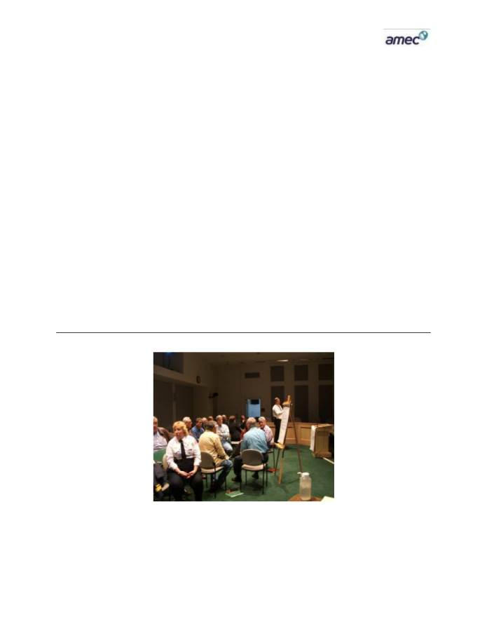
City of Poquoson, Virginia
Multi-Hazard Mitigation Plan
76
digital draft copy of the updated Sections 1 through 4 for their review and comment. Comments were
accepted for four weeks, and each was addressed in detail (Comment-Response memorandum dated
March 30, 2009 is available on file in the Emergency Management Department).
5.2 Generating Goal Statements
This analysis identified areas where improvements could be made, providing the framework for the
Committee to formulate planning goals so that the improvements could be incorporated into the mitigation
plan. The Committee used the 2004 plan goals and objectives as a starting point for generating new
goals and objectives for the updated plan. The group subdivided into three smaller groups of about six
people, and each of the groups reviewed and analyzed one of the plan’s main goals (Goals 1, 2 and 3)
and the related objectives in detail. The Committee members were instructed that they could use,
combine, or revise the statements that were provided or develop new ones on their own. Each subgroup
then presented their findings to the whole Committee, indicating whether the existing goals and objectives
should: a) remain in the plan as is; b) remain in, but with changes; or c) be deleted. Goals 4, 5, and 6
were discussed in Committee as a whole to determine their suitability for the update.
Finally, each subgroup was provided an additional set of four hazard mitigation-related goals and
objectives pulled from the latest Draft Poquoson Comprehensive Plan, the Virginia Governor’s
Commission on Climate Change Final Report released December 2008, and the Virginia State Hazard
Mitigation Plan dated 2007. Each subgroup read and discussed the goals or objectives from the other
plans to determine if: a) the other goals/objectives should be directly incorporated in the updated Hazard
Mitigation Plan for the City; b) the other goals/objectives generated ideas or changes that should be made
to the existing plan; or c) the other goals/objectives were not appropriate for use in the current planning
process. Each subgroup presented their favorite goal/objective from the other reports to the entire
Committee and indicated how best to incorporate it into the plan.
5.3 Reaching Consensus on Goals
Figure 23. HMPC at work in February 2009.
Team members then posted the revised goals and objectives to the meeting room wall and used voting
dots to indicate which goals and objectives were most important to them individually. Based upon the
planning data review and the process described above, the Committee developed the goal statements
listed below. Only Goal 1 and Objective 1.1 remained exactly the same because the Committee felt that
these goals provided the impetus for key improvements in mitigation capability over the previous 5 years.
The reasons for changes made to the other goals and objectives are detailed in Table 25. The goals and
objectives provided the direction for reducing future hazard-related losses within the City of Poquoson.
City of Poquoson, Virginia
Multi-Hazard Mitigation Plan
77
Table 25. Generating New Goals and Objectives
2004 Plan
Summary of Committee Discussion
2009 Updated Plan
(changes in red)
GOAL 1: Reduce Future Hazard
Related Losses
Goal is broad and very effective thus far. No changes.
GOAL 1: Reduce Future Hazard Related
Losses
Objective 1.1: Provide Protection for
Existing Buildings to the extent possible
Objective 1.1.1: Reduce the Number of
Repetitive Flood Losses
Objective 1.1.2: Support implementation
of structural and non-structural
mitigation activities to reduce exposure
to natural and man-made hazards.
Opportunities exist for small-scale flood mitigation projects.
Repetitive losses have increased since 2004, despite mitigation
projects. Third objective is broad and helps maintain grant
eligibility. No changes.
Objective 1.1: Provide Protection for Existing
Buildings to the extent possible
Objective 1.1.1: Reduce the Number of Repetitive
Flood Losses
Objective 1.1.2: Support implementation of
structural and non-structural mitigation activities to
reduce exposure to natural and man-made
hazards.
Objective 1.2: Provide Protection for
Future Development to the extent
possible
Local amendments to the USBC are limited in Virginia, even to
support better floodplain management. Coastal AE Zone
regulations for Poquoson were often discussed and Objective
1.2.1 expresses the City’s support for changes that allow
implementation of the best guidance coming out of post-disaster
building damage assessment teams.
Objective 1.2: Provide Protection for Future
Development to the extent possible
Objective 1.2.1: Support incorporation of multi-
hazard best management practices into State and
local development regulations and projects*
Objective 1.3: Provide Protection for
Critical Public Facilities and Services
(police, fire, schools, City Hall, power,
water, sewage, communications)
Flood protection through elevation has been provided for many
critical facilities, but access to them has become problematic,
especially for first responders. Committee decided not to list
specific facilities in the broad objective.
Objective 1.3: Provide Protection
and Access
for
Critical Public Facilities and Services
GOAL 2: Increase Public Awareness
of Vulnerability to Hazards
City has accomplished much under this goal. “Timely Mitigation”
emphasizes the importance of taking action before the next event
despite some post-Isabel complacency among property owners.
GOAL 2: Increase Public Awareness of
Vulnerability to Hazards
and the Benefits of
Timely Mitigation
Objective 2.1: Provide information to
residents and businesses about the
types of hazards they are exposed to,
where they occur, and what they can do
to be better prepared
Objective 2.1 has resulted in many successful mitigation actions
since 2004, but this type of objective is ongoing. Objective 2.2 is
a result of the updated Comprehensive Plan’s focus on
environmental protection programs and the attention these
programs receive from the citizens. Hazard mitigation and
environmental protection go hand-in-hand and the Committee
wants to capitalize on the current high level of awareness.
Objective 2.3 allows reinforcement of Poquoson’s successful
mitigation actions and will support collection of data and other
means to calculate the dollars saved through mitigation.
Objective 2.1: Provide information to residents and
businesses about the types of hazards they are
exposed to, where they occur, and what they can
do to be better prepared
Objective 2.2: Couple hazard information with
environmental protection programs, as appropriate.
Objective 2.3: Highlight mitigation successes
GOAL 3: Improve Community
Emergency Management Capability
The base level of capability is greatly improved since 2004, and
Committee members felt that the verb “enhance” rather than
“improve” captured this subtlety.
GOAL 3:
Enhance
Community Emergency
Management Capability
Objective 3.1: Develop/Improve
Comprehensive City Disaster/
Emergency Response Plan
Clarification of document titles.
Objective 3.1: Develop/Improve Comprehensive
Plan City Disaster
/ Emergency Response Plan
City of Poquoson, Virginia
Multi-Hazard Mitigation Plan
78
2004 Plan
Summary of Committee Discussion
2009 Updated Plan
(changes in red)
Objective 3.2: Develop/Improve warning
and evacuation procedures and
information for residents and businesses
The 2004 objective has been mostly accomplished. Ongoing
education is necessary, as expressed in the new objective.
Objective 3.2: Educate general public regarding
disaster preparedness, evacuation and warning
system.
Objective 3.3: Improve the ability to
communicate to residents and
businesses during and following
emergencies and disasters
CERT has accomplished the 2004 objective. The Committee
discussed additional related objectives and concluded that
training and exercises were a next logical step.
Objective 3.3: Increase training and event-
exercise opportunities for citizens and staff.
GOAL 4: Protect Health & Safety of
Residents (Over-riding purpose of the
plan)
This goal was deemed too broad as it is the purpose of local
government and the plan. The new goal is unrelated to the old
goal. Goal 4 expresses the Committee’s intent to collect more
detailed data to support future hazard mitigation planning.
GOAL 4: Gather Hazard-Related Data to Refine
Risk Assessment and Target Mitigation Funds
GOAL 5: Reduce the Cost of Flood
Insurance (Additional benefit of the
plan and all of the activities)
Although this goal was not a focus of the actions in the 2004
plan, the Committee decided to keep the wording, but change it
to an Objective under a broader goal ensuring continued
participation in the NFIP.
GOAL 5: Continue Participating in the National
Flood Insurance Program
Restates the old 2004 Goal 5 as an objective. Community plans
continued participation in the CRS.
Objective 5.1: Reduce the Cost of Flood Insurance
One Committee member has become a CFM, and others
expressed need for additional training opportunities.
Objective 5.2: Provide floodplain management
training for staff
GOAL 6: Pursue Multi Objective
Opportunities
Whenever
Possible
(Implementation Strategy)
The 2004 plan indicated that this was an implementation strategy
and not an objective. The Committee discussed this Goal and
decided it was not appropriate for the updated plan. Inclusion of
the Hazard Mitigation Plan in the Comprehensive Plan will help
ensure multi-objective implementation of both plans.
*Specific State and local development regulations may include the Uniform Statewide Building Code, the City’s floodplain management regulations, and/or the City’s Comprehensive
Plan. Specific State or local projects are likely to involve transportation initiatives. This objective is intentionally broad to allow the focus to shift as the City’s priorities change.
City of Poquoson, Virginia
Multi-Hazard Mitigation Plan
79
5.4 Identifying Alternative Mitigation Measures
Once the goals were identified, the Committee had another meeting to generate a set of viable
alternatives that would support the above goals. Each Committee member was provided with the
following list of categories of mitigation measures:
• Prevention
• Emergency
Services
• Property
Protection
• Natural Resource Protection
• Structural
Projects
• Public
Information
Several lists of alternative multi-hazard mitigation actions for each of the above categories and
explanations of the pros and cons of each were provided to the Committee members for consideration.
The HMPC also reviewed the list of recommended actions included in the previous plan to determine if
the actions should be deferred, cancelled or continued. The results of this review are included in Table
26.
Table 26. Status of Mitigation Measures from Previous Plan
2004 Plan Mitigation Measures
Progress 2004- 2009
Status in 2009 Plan
1
Continue Property Owner Elevation
Assistance Program
Program continues but was not
so named.
Ongoing, captured in new Action #7
2 Develop Wildfire Mitigation Plan
No wildfires occurred during
planning period; therefore, plan
was put on hold.
Committee decided to cancel this
measure and focus on fire breaks
instead.
3
Prioritize funds to assist in the rebuild
and protection of structures with
Repetitive Flood Losses
Program continued
Ongoing, captured in new Action #7
4
One foot freeboard in Flood
Ordinance
Adopted February 2006
Completed
5
City’s Hazard Mitigation Plan should
become an appendix to the City’s
Comprehensive Plan.
Mitigation Plan has been
Incorporated by Reference.
Completed
6
Install flood protection barriers where
appropriate (for critical facilities)
New and existing critical
facilities protected through
several means, not just barriers
Ongoing, captured in new Action #1
7
Poquoson Elementary School site
selection process recommendations
for mitigating flood damage
New elementary school in
same location, elevated above
BFE
Completed
8
Form a committee that is responsible
for providing the public with
information regarding disasters,
Floodplain Management, and
preparedness
CERT created
Completed, but with new activities
identified in new Actions #6 and #9
9
Initiate development of a
Comprehensive City
Disaster/Emergency Response Plan
Emergency Operations Plan
changes are ongoing.
Comprehensive Plan is being
updated in 2009.
Considered complete because action
was to “initiate” new plans.
Comprehensive Plan and Hazard
Mitigation Plan are now better linked
together.
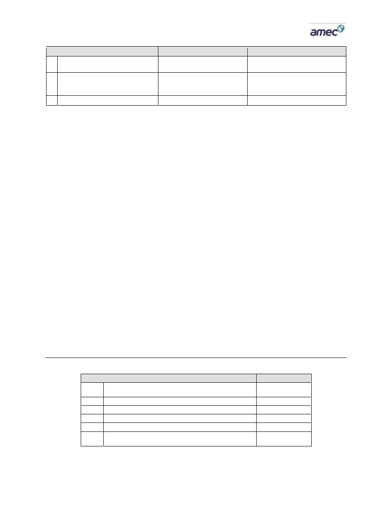
City of Poquoson, Virginia
Multi-Hazard Mitigation Plan
80
2004 Plan Mitigation Measures
Progress 2004- 2009
Status in 2009 Plan
10
Repair, improve, and test warning
system
Completed Completed
11
Identify point of contact for emergency
situations for residents around the
clock.
Completed with Code Red (see
Capability Section 4.3.1)
Completed
12 Mitigation retrofit projects
Ongoing
Ongoing, captured in new Action #7
5.5 Using Criteria to Analyze and Select Mitigation Measures
The Committee examined and analyzed the alternatives using the following four sets of criteria:
STAPLE/E, Sustainable Disaster Recovery, Smart Growth principles, and “Others”. The lists of mitigation
categories, multi-hazard measures, and criteria sets are available through the City’s Manager’s Office.
The Committee then listed all of the hazards posing a threat to the community on individual sheets of flip-
chart paper. They generated their preferred set of mitigation measures per hazard, using the criteria sets,
to determine the most suitable proposals.
5.6 Reaching Consensus by Prioritizing Mitigation Measures
After selecting the mitigation measures, the flip-chart sheets were posted on the wall and all Committee
members were provided with nine colored dots of which there were three each of red, yellow, and blue.
Each color represents high, medium, or low priority with regard to importance, and each color was
assigned a corresponding value:
• Gold = 5 points
• Red = 3 points
• Blue = 1 point
Committee members then had the opportunity to vote for their preferred mitigation measures by placing
their dots on the hazard specific paper sheets. Team members were allowed to place as many of any or
all colors on any one recommendation or to spread them among multiple mitigation actions. They were
allowed to trade dots, or otherwise negotiate with any other team member, and were not required to use
all of their dots if they so chose. This process provided both consensus and priority for the Committee
recommendations. Throughout the process, each Committee member was reminded that there would be
time to discuss and revise each idea further through the scheduled team review, public input, and process
of developing two drafts of this updated plan before submittal for review and adoption. Table 27 shows
how the Committee prioritized the proposed mitigation measures with “dot points”.
Table 27. Committee Voting Results on Specific Mitigation Measures
Mitigation Measures
Total Points
1
Continue flood protection and access/egress projects for critical
facilities and infrastructure
33
2
Shoreline Management Plan
32
3
Collect hazard-related data in GIS-compatible format
31
4 Provide
portable
radios for City employees
26
5
Pre-Disaster Debris Management Plan
25
6
National Preparedness Month activities with CERT and Staff
Training
24

City of Poquoson, Virginia
Multi-Hazard Mitigation Plan
81
Mitigation Measures
Total Points
7
Conduct mitigation retrofit projects on buildings to protect public
and private property and repetitive flood losses from natural
hazards
18
8
Identify, map and regulate highly vulnerable Coastal AE Zones to
V Zone standards
17
9
New homeowner Welcome Bag, which contains hazard,
insurance and mitigation information
11
10
Trim trees in the Public Right of Way
10
11
Investigate potential locations, costs, and feasibility of Citywide
fire breaks
3
Mitigation measures were selected from each of the general categories shown in Table 28.
Table 28. Mitigation Categories Prioritized
Categories of Mitigation Measures
Total Points
Emergency Services
59
Property Protection
84
Prevention 55
Public Information
66
Structural Projects
5
Natural Resource Protection
5
5.7 Action Plan
The results of the planning process, the risk assessment, the mitigation strategy, and the hard work of the
Committee are presented below. This action plan presents the prioritized recommendations for the City of
Poquoson to pursue in order to lessen the vulnerability of people, property, infrastructure, and natural and
cultural resources to future disaster losses. The recommendations are presented to the community in
terms of both need and effectiveness.
Discussions during the Committee meetings led to the following implementation strategies for the
recommended actions:
• ENFORCE existing rules, regulations, policies and procedures already in existence. Communities
can reduce future losses not only by pursuing new programs and projects, but also by more stringent
attention to what’s already “on the books”,
• EDUCATE the public using the hazard information that the PHMPC has collected and analyzed
through this planning process so that the community better understands what can happen where, and
what they can do themselves to be better prepared. Also, publicize the “success stories” that are
achieved through each community’s ongoing efforts,
• IMPLEMENT this Mitigation Action Plan, and
• MOM - monitor Multi-Objective Management opportunities, so that funding opportunities may be
shared and “packaged” and broad constituent support is gained.
Table 29 provides a summary of the goals and objectives addressed by each Action Item. Please note
that the community has recommended actions that reinforce their commitment to ensuring ongoing
compliance with NFIP requirements.
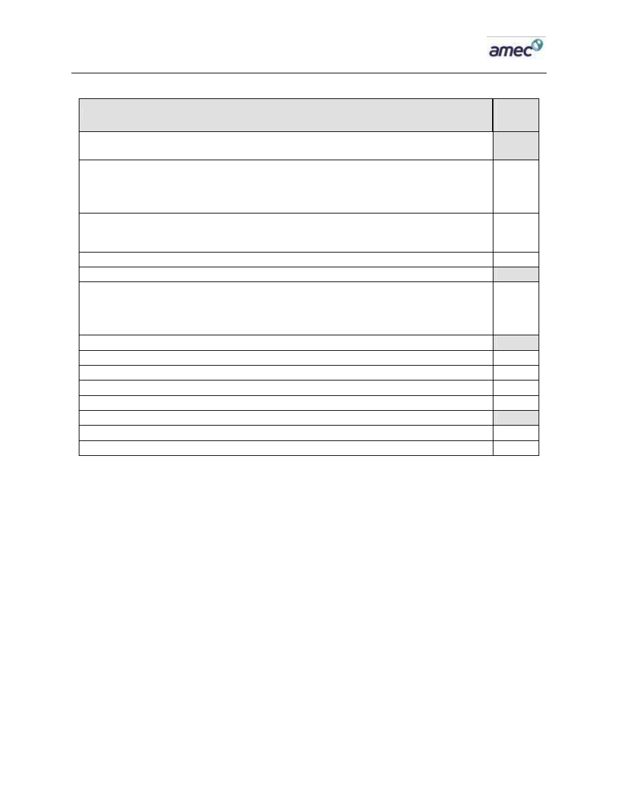
City of Poquoson, Virginia
Multi-Hazard Mitigation Plan
82
Table 29. Categorizing Action Items by Goal and Objective
Goals and Objectives
Related
Mitigation
Actions
GOAL 1: Reduce Future Hazard Related Losses
1,3,5,7,8,
10,11
Objective 1.1: Provide Protection for Existing Buildings to the extent possible
Objective 1.1.1: Reduce the Number of Repetitive Flood Losses
Objective 1.1.2: Support implementation of structural and non-structural mitigation activities to reduce exposure to
natural and man-made hazards.
1,5,7,10,11
Objective 1.2: Provide Protection for Future Development to the extent possible
Objective 1.2.1: Support incorporation of multi-hazard best management practices into State and local
development regulations and projects
1,8
Objective 1.3: Provide Protection and Access for Critical Public Facilities and Services
1,7
GOAL 2: Increase Public Awareness of Vulnerability to Hazards and the Benefits of Timely Mitigation
2,6,9
Objective 2.1: Provide information to residents and businesses about the types of hazards they are exposed to,
where they occur, and what they can do to be better prepared
Objective 2.2: Couple hazard information with environmental protection programs, as appropriate.
Objective 2.3: Highlight mitigation successes
2,6,9
GOAL 3: Enhance Community Emergency Management Capability
3,4,6
Objective 3.1: Develop/Improve Comprehensive Plan / Emergency Response Plan
4
Objective 3.2: Educate general public regarding disaster preparedness, evacuation and warning system.
6,9
Objective 3.3: Increase training and event-exercise opportunities for citizens and staff.
6
GOAL 4: Gather Hazard-Related Data to Refine Risk Assessment and Target Mitigation Funds
3
GOAL 5: Continue Participating in the National Flood Insurance Program
1,6,7,8
Objective 5.1: Reduce the Cost of Flood Insurance
1,7,8
Objective 5.2: Provide floodplain management training for staff
6
Recommended Action Item #1: Continue to increase flood protection and flood access/egress for
critical facilities and infrastructure. Elevate new critical facilities, retrofit existing facilities as necessary,
and elevate roads to provide access to elevated critical facilities.
Issue/ Background: As a result of the recommended actions in the 2004 plan, the City has increased
flood protection for emergency operations/communications, the Fire Department and the elementary
school. However, additional critical facilities remain vulnerable to flood damage. Flooding of roads
prevents access to elevated critical facilities. Vital infrastructure such as storm sewer and sanitary sewer
are subject to flooding, and possibly vulnerable to sea level rise in the future. The City is currently
collecting data on infrastructure invert elevations that will assist with identifying significant vulnerabilities
to flood and sea level rise.
Other Alternatives Considered: Relocation of critical facilities out of the floodplain may be possible for
some purposes, but land outside the floodplain is limited and in a community that is almost 90-percent
flood-prone, some critical facilities must be in the floodplain. Infrastructure cannot be elevated or
relocated out of the floodplain. An ordinance or zoning amendments to require special hazard protection
for new critical facilities was also considered.
Responsible Office: Public Works/Engineering, Fire Department, Police Department
Priority (H, M, L): High

City of Poquoson, Virginia
Multi-Hazard Mitigation Plan
83
Cost Estimate: Critical Facilities – Cost will be based on specific flood protection measures chosen for
each building. Infrastructure – Cost will be determined based on ongoing data collection.
Cost Benefit: Benefits are based on reduced response times, and longevity of critical infrastructure.
Elevation of roads could reduce evacuation times once flooding begins, and protect road beds from
erosion associated with sea level rise in the future.
Potential Funding: Hazard Mitigation Grant Program (HMGP), Pre-Disaster Mitigation Grant Program
(PDM), Virginia Resources Authority loan program – Virginia Clean Water Revolving Loan Fund, Stafford
Act Section 406 - post-disaster mitigation funds under Public Assistance for damaged public facilities
Schedule: Four years
Hazards Addressed: Flood, Sea Level Rise
Recommended Action Item #2: Prepare a Shoreline Management Plan.
Issue/ Background: Clearly, Poquoson’s low-lying shoreline is subject to flooding from coastal storms,
and chronic inundation associated with sea level rise. Citizens and staff want a long-term, effective
management plan that serves the purposes of multiple stakeholders and the environment. The City of
Poquoson Comprehensive Plan 2008-2028, Environmental Management Element, Shoreline Sub-
Element, states as its second goal, “Develop a shoreline management plan to ensure property shoreline
protection and create a framework for incentive[s] based on programs to encourage less intrusive means
of shoreline protection.” The plan would include an assessment of shoreline processes on a shoreline
segment basis, and would include analysis of Environmental Management Area zoning restrictions that
may impact shorelines.
Other Alternatives Considered: A singular treatment of the City’s shoreline is unnecessarily costly, and
does not recognize the unique characteristics of the water bodies, wetlands, and upland land uses. A
management plan that examines each parcel or shoreline segment in detail will help landowners choose
the most cost-effective, appropriate and environmentally-friendly shoreline protection method at the most
appropriate time.
Responsible Office: Planning Department, Permitting, and Engineering
Priority (H, M, L): High
Cost Estimate: $85,000
Cost Benefit: Currently, Virginia’s Shoreline Erosion Advisory Service is not funded. Property owners
need guidance on shoreline protection methods, and a plan that provides customized segment-based
recommendations will help protect the shoreline functions for the next 50 to 100 years.
Potential Funding: Virginia Department of Conservation and Recreation, Virginia Coastal Zone
Management, VIMS, Virginia Marine Resources Commission
Schedule: One year
Hazards Addressed: Flood, Sea Level Rise, Wind Events, Winter Storms

City of Poquoson, Virginia
Multi-Hazard Mitigation Plan
84
Recommended Action Item #3: Collect and share hazard-related data in GIS-compatible format.
Issue/ Background: Poquoson has remarkably increased GIS capability since the 2004 Hazard
Mitigation Plan. However, additional data will improve the vulnerability analysis in the future, highlight
unknown vulnerabilities now, and provide additional information to help apply limited mitigation funds to
the most vulnerable structures. In particular, the City should:
1) continue collecting infrastructure elevation data (as discussed in Recommended Action #1);
2) collect high water marks and calculate flood frequency for all nor’easters and coastal storms;
3) collect Elevation Certificates for each structure in the 100-year floodplain;
4) collect and distribute to various departments the location of special needs populations;
5) determine location of phragmites stands and other wooded areas with high potential for wildfire, and
coordinate with Virginia Department of Forestry to better model Poquoson’s wildfire potential;
6) collect a detailed inventory of the location of the City’s cultural and archaeological artifacts; and,
7) support new collection of detailed wind data at Messick Point in cooperation with WeatherFlow.
Other Alternatives Considered: None.
Responsible Office: Public Works/Engineering, Emergency Management, Fire Department, Building
Official, Poquoson Museum
Priority (H, M, L): High
Cost Estimate: approximately $150,000 for 2,627 Elevation Certificates; $75,000 to $100,000 for other
surveying and GIS data management.
Cost Benefit: (See also Cost Benefit for Action Item #1.) Elevation Certificates, if provided to FEMA in
digital format, are creditable under the CRS, which contributes to lowering the flood insurance premiums
for policyholders. Structural inventories with elevations, high water marks, and flood frequency data help
prepare accurate cost-benefit analyses for a large number of structures rapidly.
Potential Funding: U.S. Army Corps of Engineers Flood Plain Management Services Program for high
water marks, flood frequencies, and Elevation Certificates. Capital budget for infrastructure elevation
data, and location of artifacts. Virginia Department of Forestry.
Schedule: Ongoing through 2011
Hazards Addressed: Flood, Sea Level Rise, Wind Events, Wildfires, Winter Storms
Recommended Action Item #4: Provide portable radios for additional City employees to improve
emergency communications and expand regional interoperability in disaster response.
Issue/ Background: Additional radios are needed for Public Works and School System employees, plus
other departments, to improve communication and service delivery before, during and after a disaster
scenario. Radios would be part of the York County/Poquoson Digital Radio System, thereby expanding
regional coordination and helping to provide continuity of government. Incorporate action item in the
Emergency Response Plan to improve plan effectiveness.

City of Poquoson, Virginia
Multi-Hazard Mitigation Plan
85
Other Alternatives Considered: No action scenario will continue to exclude critical departments from
involvement in the planning, execution, and delivery of emergency services. Cell phones considered, but
they are not reliable post-disaster and do not provide the level of intra-departmental interaction afforded
by the radios.
Responsible Office: Emergency Management, School System, Public Works, Permitting/Planning,
Finance/Assessor, Police Department
Priority (H, M, L): Medium
Cost Estimate: 4 additional departments, each requiring 6-bank charger with 6 radios at $2300 =
$55,200
Cost Benefit: Radios reduce response time by key departments for non-emergency calls. Costs of
shelter preparation, debris removal, and overall pre-disaster preparedness are reduced when
departments in both the City and the County can cooperate.
Potential Funding: VDEM Interoperable Communications Grants for Strategic Radio Caches,
Emergency Management Performance Grant (EMPG), Hampton Roads Urban Area Security Initiative
(UASI) funds
Schedule: Four years
Hazards Addressed: All Hazards
Recommended Action Item #5: Prepare a Pre-Disaster Debris Management Plan
Issue/ Background: The Committee identified pre-disaster debris management as an important
component in reducing damage, particularly as a result of floods and wind events. Forgotten debris,
boats on trailers, downed trees, construction materials/trailers/portable toilets, even landscaping elements
are potentially damaging to buildings and infrastructure during a storm. A management plan would
outline actions to be taken, departments responsible, and ordinance changes necessary to accommodate
a coordinated quarterly review of public and private property for potentially damaging debris. Planning
process would review permitting process for temporary construction materials/trailers/toilets, and citywide
property maintenance inspections for downed trees, debris, unsecured boats, and other items like
landscaping elements. Outreach program could include notification to property owners at the beginning
of each hurricane season.
Other Alternatives Considered: Post-disaster debris management plans do not prevent damage, but
are typically focused on post-disaster clean-up. Such a plan would not satisfy the pre-disaster mitigation
goals of the recommended action. An action that mandated a single debris clean-up would not have the
long-term benefits afforded by a consolidated, citywide plan calling for action from several departments
on a regular basis.
Responsible Office: Emergency Management, Engineering, Solid Waste, and Permitting
Priority (H, M, L): High
Cost Estimate: $20,000 - $35,000
Cost Benefit: Implementation of the pre-disaster debris management plan would immediately reduce
damage to structures and infrastructure from flood and wind. Also, regular clean-up requirements would
reduce the costs of post-disaster debris clean-up. City would also have access to the additional 5-
percent cost incentive from FEMA’s Public Assistance money.

City of Poquoson, Virginia
Multi-Hazard Mitigation Plan
86
Potential Funding: Capital budgets, HMGP, PDM or FMA (with very clearly articulated benefits for flood
damage reduction)
Schedule: Immediately
Hazards Addressed: Flood, Sea Level Rise, Wind Events, Wildfires
Recommended Action Item #6: Become a member of the National Preparedness Month Coalition and
implement new awareness projects using CERT. Staff training will receive emphasis during
Preparedness Month and will increase Certified Floodplain Managers (CFM) on staff.
Issue/Background: The Department of Homeland Security has enlisted more than 1,200 national,
regional, state and local businesses and organizations who have pledged their support and joined the
National Preparedness Month Coalition. The program promotes action by citizens, businesses, and
communities on emergency preparedness, and specifically encourages individuals to take important
preparedness steps. National Preparedness Month Coalition members have agreed to distribute
emergency preparedness information and sponsor activities that promote emergency preparedness.
Poquoson will use CERT members to conduct door-to-door awareness projects, focused in the flood-
prone neighborhoods that promote not only the importance of preparedness, but also timely mitigation
and structure retrofits. Team members will distribute free, readily-available information from FEMA to
property owners regarding flood insurance, flood retrofit including small-scale measures that cost very
little, sea level rise, and successful mitigation projects in Poquoson. CERT members will have additional
dedicated community awareness days for involvement and preparedness.
As part of the National Preparedness Month Coalition, Poquoson will make a commitment to staff training
and obtaining an additional CFM on staff. City staff will seek out opportunities to share mitigation success
stories with other communities in the region, state and nation, especially during National Preparedness
Month.
Other Alternatives Considered: Traditional outreach through letters and mailings may not reach the
intended audience. Using CERT members to personally talk to property owners takes longer but is much
more effective.
Responsible Office: Emergency Management
Priority (H, M, L): High
Cost Estimate: $2,000
Cost Benefit: Outreach projects will be coordinated with CRS to ensure that CRS points are maximized
in Poquoson’s efforts to obtain a Class 8 rating and 10-percent flood insurance discount. Homeowner
retrofits and citizen/family preparedness will reduce hazard-related damage and the need for emergency
responders. This allows emergency responders to focus on the most dangerous situations first.
Potential Funding: Existing capital budgets and Citizen Corps grant monies.
Schedule: Enlist in National Preparedness Month for 2009; target different neighborhoods each year
between 2009 and 2013, depending on number of CERT members.
Hazards Addressed: Flood, Sea Level Rise, Wind Events, Wildfires, Tornado, Thunderstorm
City of Poquoson, Virginia
Multi-Hazard Mitigation Plan
87
Recommended Action Item #7: Conduct mitigation retrofit projects on buildings to protect public and
private property and repetitive flood losses from natural hazards.
Issue/ Background: This action is all-encompassing and expresses the City’s intent to focus available
funds, whether from Federal, State or local sources, on eligible mitigation projects which may include any
of the following:
• Acquisition of hazard prone properties, with priority to repetitive loss structures
• Elevation of flood-prone structures, with priority to repetitive loss structures
• Minor structural flood control projects
• Relocation of structures from hazard prone areas, with priority to repetitive loss structures
• Retrofitting of existing buildings and facilities, with priority to repetitive loss structures
• Retrofitting of existing buildings and facilities for shelters
• Infrastructure protection measures
• Stormwater and wastewater management improvements
• Advanced warning systems and hazard gauging systems (weather radios, Code Red, stream gauges,
I-flows)
• Targeted hazard education
Other Alternatives Considered: Alternatives will be considered for each proposed project on a case-by-
case basis.
Responsible Office: Emergency Management, City Manager, Finance, Building Official
Priority (H, M, L): High
Cost Estimate: Project dependent
Cost Benefit: For all FEMA-funded projects, cost-benefit ratio will have to be greater than 1.0. Each
project’s costs and benefits will be analyzed individually before a City recommendation is made.
Potential Funding: HMGP, PDM, FMA, Repetitive Flood Claims Program, Severe Repetitive Loss
Program, Increased Cost of Compliance, Stafford Act Section 406 - post-disaster mitigation funds under
Public Assistance for damaged public facilities
Schedule: Ongoing
Hazards Addressed: Flood, Sea Level Rise, Wind Events, Winter Storm
Recommended Action Item #8: Identify, map and regulate highly vulnerable Coastal AE Zones to V
Zone standards.
Issue/ Background: As discussed in Section 4.1.2, Poquoson’s maps do not contain a Coastal AE Zone
designation, but a significant portion of the AE Zone is likely subject to wave heights greater than 1.5 feet
during the 100-year flood. Certain areas, such as Sandy Bay Drive, Beach Road, and the end of Hunts
Neck Road are especially vulnerable to flood damage resulting from direct exposure to high energy wave
action. In recognition of the increased hazards to structures, and in order to protect new and substantially
improved development in these high hazard areas, the City will map select areas directly exposed to high
energy wave action and institute more stringent design guidelines similar to those found in V Zones, such
as:
• New construction and substantial improvements must be elevated on piles and columns;
• The pile or column foundation and the structure attached thereto must be anchored to resist flotation,
collapse, and lateral movement due to the effects of wind and water loads;

City of Poquoson, Virginia
Multi-Hazard Mitigation Plan
88
• New construction and substantial improvements must have the space below the lowest floor free of
obstruction or enclosed with non-supporting breakaway walls, open wood lattice work, or insect
screening and have openings;
• Use of fill for structure support is prohibited; and,
• Elevate the lowest horizontal structural member and the electrical and mechanical equipment
servicing the building to or above the BFE plus freeboard.
Note that the 2005 edition of American Society of Civil Engineers, Flood Resistance Design and
Construction (also known as ASCE 24) requires new non-residential and professionally-designed
construction in Coastal A Zones to meet V Zone standards, and FEMA has published much guidance
supporting Coastal A Zone construction guidance since Hurricane Katrina.
Other Alternatives Considered: The No Action alternative does not afford any added level of protection
to structures built or improved in the Coastal AE Zone, despite knowledge of the increased flood hazard
therein. Poquoson should take advantage of the lessons learned in the Gulf Coast area following severe
hurricanes there in 2005.
Responsible Office: Planning and Permits
Priority (H, M, L): High
Cost Estimate: Staff time
Cost Benefit: CRS points for the four design guidelines discussed above may total as much 325 points,
depending on which flood-prone areas are subject to the guidelines. These points would contribute to
Poquoson’s efforts to get a Class 8 rating and reduce flood insurance premiums. In a 2006 evaluation of
the NFIP’s building standards, Jones et al (2006) determined that “at the time of initial construction, the
incremental costs of replacing minimally compliant A zone foundations (such as slab-on-fill and
crawlspace foundations) with pier foundations or pile foundations are relatively small, generally less than
5-percent to 10-percent of the cost of the building. In Coastal A zones, post-storm field studies have
shown that minimally compliant A zone foundations often fail, and this replacement is warranted.” The
report contains documented data to support this claim.
Potential Funding: n/a
Schedule: Winter 2009
Hazards Addressed: Flood, Sea Level Rise, Wind Events, Winter Storm
Recommended Action Item #9: Prepare and distribute new homeowner Welcome Bag, which contains
hazard, insurance and mitigation information.
Issue/ Background: Long-time Poquoson residents are acutely aware of the City’s vulnerability to flood.
But new residents may not be aware of the hazards and the actions they can and should take to prepare
their home and family. Virginia does not require disclosure of natural hazard vulnerability for individual
properties. This education outreach will be mailed or delivered to new homeowners on an annual basis,
possibly in conjunction with National Preparedness Month (see Action Item #7).
Other Alternatives Considered: Because Virginia is a Dillon Law commonwealth, Poquoson cannot
implement a disclosure law for real estate transactions in the City unless given authority to do so by the
General Assembly in State statute. This alternative is, therefore, not politically feasible.
Responsible Office: Library, Emergency Management, Assessor

City of Poquoson, Virginia
Multi-Hazard Mitigation Plan
89
Priority (H, M, L): Low
Cost Estimate: $2,500
Cost Benefit: Increased citizen preparedness reduces response costs, and increased awareness of
flood insurance availability decreases time required to return to normalcy after a flood.
Potential Funding: EMPG, Existing capital budgets
Schedule: Beginning 2010 and ongoing thereafter
Hazards Addressed: Flood, Sea Level Rise, Wind Events
Recommended Action Item #10: Coordinate with public utilities, and use City resources to trim trees in
the public right-of-way.
Issue/ Background: Tree limbs on power lines and other utility lines can disrupt commerce, business,
government, and livability after winter ice storms, coastal storms, tornados, and thunderstorms. By
implementing a regular process for trimming trees, in conjunction with the utilities, Poquoson can help
reduce damage, reduce debris, increase quality of life, and speed disaster recovery.
Other Alternatives Considered: Underground utility lines may be an option in some parts of the City if
capital funds are available, but burying lines out to residential neighborhoods in the various peninsulas or
“necks” formed by the rivers and creeks in Poquoson, is prohibitively expensive. Action will require
coordination with utility companies to determine if burying lines is possible, especially in the Wythe Creek
Road commercial area.
Responsible Office: Public Works, utility providers
Priority (H, M, L): Low
Cost Estimate: $100,000 annually, including contributions from utilities
Cost Benefit: Reduced debris clean-up costs, increased utility service reliability
Potential Funding: Existing capital budgets, HMGP. In some cases, utilities may be eligible for some
FEMA grant monies, as well.
Schedule: Beginning 2011 and ongoing thereafter
Hazards Addressed: Wind Events, Winter Storm, Tornado
Recommended Action Item #11: Select the most desirable locations for installing fire breaks citywide,
then investigate costs and feasibility of: any easements required, grubbing, clearing, and maintenance.
Issue/ Background: While the City has a high incidence of wildfire, there are no man-made fire breaks
or gaps in the vegetation that are intentionally designed to stop wildfire from spreading. The rivers,
creeks and roads often serve as fire breaks, but a series of carefully located single-purpose fire breaks in
other areas would reduce the City’s vulnerability to wildfire.
This is part one of a two-part action. The cost and feasibility of fire breaks will be investigated in the
planning period, with installation being contemplated for the subsequent planning period, possibly
beginning in 2014.

City of Poquoson, Virginia
Multi-Hazard Mitigation Plan
90
Other Alternatives Considered: The continued use of existing natural fire breaks will be examined in
conjunction with the feasibility and costs of creating and maintaining new fire breaks. Strategic control of
Phragmites growth through prescribed burning and use of herbicides continues to be a feasible option in
some parts of the City and during certain seasons, but it does not represent a comprehensive solution to
the wildfire hazard.
Responsible Office: Fire Department, Emergency Management, Planning Department
Priority (H, M, L): Low; the decrease in wildfires over the 2004-2009 planning period reduces the priority
of this activity.
Cost Estimate: Staff time
Cost Benefit: If fire breaks are deemed a necessary action, the careful selection and planning for their
location will increase their usefulness and effectiveness at reducing the spread of wildfire and associated
damage to structures and vegetation.
Potential Funding: Existing capital budgets
Schedule: After Action Item #3, subtask 5, has been completed; expected time frame of 2011.
Hazards Addressed: Wildfire
2009 Updates to Section 5: Updated information was added which described the Committee’s
formulation of goals in Section 5.1. The report includes an updated the process by which the existing
goals and objectives were reviewed, edited, and agreed upon by the HMPC. A detailed table showing old
goals and objectives, reasons for changes (or no changes), and updated goals and objectives is now
included. The report includes updated dot votes for the new mitigation measures and categories of
mitigation measures. Authors deleted action items from the 2004 plan and inserted descriptions and
details for the updated action plan. Each Recommended Action now includes information on which
hazard(s) are addressed by the mitigation action.
6. Plan Implementation and Maintenance
Implementation implies two concepts: action and priority. While this plan puts forth many worthwhile
recommendations, the decision of which action to undertake first will be the initial issue the Committee
faces. The Committee should not only account for priority when considering which task should be
addressed first, they should also consider the issue of funding. Therefore, low or no-cost
recommendations have the greatest likelihood of succeeding. An example would be pursuing the goal of
becoming part of the National Preparedness Month Coalition (Recommended Action #6). These efforts
would lead to longstanding changes in public awareness and could be initiated at very little cost, while
promoting public education through their relative “visibility” in the community.
Another important implementation mechanism that is highly effective but low-cost is taking steps to
incorporate the recommendations, and equally important, the underlying principles of this Hazard
Mitigation Plan into other community plans such as the City’s Comprehensive Plan, capital improvement
budgeting, economic development goals and incentives, and other such plans. The City has incorporated
the Mitigation Plan into the Comprehensive Plan by reference, and taken steps to ensure that the actions
recommended in the two plans are complementary and not conflicting. Mitigation is most successful
when it is incorporated within the day-to-day functions and priorities of government and development.
This integration is accomplished by a constant, pervasive and energetic effort to network and to identify
and highlight the multi-objective, “win-win” benefits to each program, the community and the constituents.
This effort is achieved through monitoring agendas, attending meetings, sending memos, and promoting
a safe, sustainable community.

City of Poquoson, Virginia
Multi-Hazard Mitigation Plan
91
Monitoring funding opportunities should be done simultaneously with the integration effort. Funding can
be leveraged to implement some of the more costly recommendations. A bank of ideas on how any
required local match or participation requirements can be met should be created and maintained. Being
aware of when funding becomes available will allow the Committee to capitalize upon important
opportunities. Funding opportunities that can be monitored include special pre- and post-disaster funds,
special district budgeted funds, state or federal ear-marked funds, and grant programs, including those
that can serve or support multi-objective applications.
With the adoption of this plan, the Committee will be converted to a permanent advisory body referred to
as the Mitigation Coordinating Committee and led by a public safety official to be appointed by the City
Manager. This Committee agrees and commits to:
• Act as a forum for hazard mitigation issues,
• Disseminate hazard mitigation ideas and activities to all participants,
• Pursue the implementation of the high priority, low/no-cost Recommended Actions,
• Keep the concept of Mitigation in the forefront of community decision-making by identifying the
recommendations of this plan when other community goals, plans, and activities overlap, influence, or
directly affect increased community vulnerability to disasters,
• Maintain a vigilant monitoring of multi-objective cost-share opportunities to assist the community in
implementing the Recommended Actions of this plan for which no current funding or support exists,
• Monitor implementation of this Plan,
• Report on progress and recommended changes to the City Manager’s Office, and
• Inform and solicit input from the public.
The Committee will not have any powers over City staff; it will be purely an advisory body. Its primary duty
is to see the Plan successfully carried out and to report to the City Manager’s Office and the public on the
status of Plan implementation and mitigation opportunities in Poquoson. Other duties include reviewing
and promoting mitigation proposals, hearing stakeholder concerns about hazard mitigation, passing the
concerns on to the appropriate entities, and posting relevant information on the City’s website.
6.1 Maintenance
Plan maintenance implies an ongoing effort to monitor and evaluate the implementation of the plan, and
to update the plan as progress, roadblocks, or changing circumstances are recognized. This monitoring
and updating will take place through an annual review by the Committee prior to CRS annual
recertification, and a 5-year written update to be submitted to the state and FEMA Region III, unless
disaster or other circumstances (e.g. changing regulations) lead to a different timeframe.
When the Committee convenes for the review, they will coordinate with all stakeholders that either
participated in the original planning process, or have joined the Committee since the inception of the
planning process. The goal will be to update and revise the plan. Public notice will be given and public
participation will be encouraged. The invitation to participate will be extended via web-postings and press
releases to the local media outlets.
The evaluation of progress can be achieved by monitoring changes in the vulnerability identified in the
Plan. Changes in vulnerability can be identified by noting:
• Lessened vulnerability as a result of implementing Recommended Actions
• Increased vulnerability as a result of failed or ineffective mitigation actions, and/or
• Increased vulnerability because of new development.
The updating of the Plan will be accomplished through written changes and submissions as the
Committee deems necessary, and as approved by the City.

City of Poquoson, Virginia
Multi-Hazard Mitigation Plan
92
2009 Updates to Section 6: An updated sample action was added to the first paragraph. Otherwise,
this section remains as written as it has served the Committee well during the planning period since the
2004 adoption.
City of Poquoson, Virginia
Multi-Hazard Mitigation Plan
93
Glossary of Terms
Term
Definition
Acquisition of
Hazard-Prone
Structures
Local governments can acquire lands in high hazard areas through conservation
easements, purchase of development rights, or outright purchase of property.
Base Flood
Elevation (BFE)
The elevation of the Base Flood in relation to a specified datum, such as the National
Geodetic Vertical Datum of 1929. The Base Flood Elevation is used as a standard for the
National Flood Insurance Program (NFIP). The Base Flood is the flood that has a 1-percent
chance of being equaled or exceeded in any given year. The Base Flood is also referred to as
the 100-Year Flood.
Capability
Assessment
An assessment that provides a description and analysis of a community or state’s current
capacity to address the threats associated with hazards. The capability assessment attempts
to identify and evaluate existing policies, regulations, programs, and practices that positively
or negatively affect the community or state’s ability to address specific hazards or threats.
CoBRA
Coastal Barrier Resources Act in 1982. The CoBRA, while not prohibiting privately financed
development, prohibits most new Federal financial assistance, including flood insurance,
within an area designated as part of the Coastal Barrier Resources System.
Community Rating
System (CRS)
An incentive-based program for NFIP participating communities that implement flood
mitigation programming above the NFIP minimum measures that reduce flood hazard risk. In
return for enhanced flood mitigation programming, policy holders in participating communities
enjoy discounted flood insurance premiums.
Cost-Effectiveness
One evaluation criteria for federal grant programs. FEMA defines a cost-effective project as
one whose long-term benefits exceed its costs. That is, a project should prevent more
expected financial loss than it costs initially to fund the effort. Benefit-cost analysis is one way
to illustrate that a project is cost-effective.
Critical Facilities
Facilities vital to the health, safety, and welfare of the population and that are especially
important following hazard events. Critical facilities include, but are not limited to, shelters,
police and fire stations, utility facilities, and hospitals.
Disaster Mitigation
Act of 2000 (DMA
2000)
DMA 2000 (Public Law 106-390) is the latest legislation to improve the planning process.
Signed into law on October 30, 2000, this legislation reinforces the importance of mitigation
planning and emphasizes planning for disasters before they occur.
Elevation of
Structures
Term used in conjunction with floodplain management. Raising structures above the base
flood elevation to protect structures located in areas prone to flooding.
Erosion
Wearing away of the land surface by detachment and movement of soil and rock
fragments, during a flood or storm or over a period of years, through the action of wind,
water, or other geologic processes.
Federal Emergency
Management
Agency (FEMA)
Agency created in 1979 to provide a single point of accountability for all federal activities
related to disaster mitigation and emergency preparedness, response, and recovery.
FEMA is now part of the Department of Homeland Security.
Flood
A general and temporary condition of partial or complete inundation of normally dry land
areas from (1) the overflow if inland or tidal waters, (2) the unusual and rapid accumulation or
runoff of surface waters from any source, or (3) mudflows or the sudden collapse of shoreline
land.
Flood Elevation
Elevation of the water surface above an established datum, e.g. National Geodetic Vertical
Datum of 1929, North American Vertical Datum of 1988 or Mean Sea Level.
Flood Insurance
Rate Map (FIRM)
Map prepared by the Federal Emergency Management Agency showing both the Special
Flood Hazard Area (SFHA) and the risk premium zones applicable in a given community.
Flood Mitigation
Assistance (FMA)
Program
A program created as part of the National Flood Insurance Reform Act of 1994. FMA
provides funding to assist communities and states in implementing actions that reduce or
eliminate the long-term risk of flood damage to buildings, manufactured homes, and other
NFIP insurable structures, with a focus on repetitive loss properties.
City of Poquoson, Virginia
Multi-Hazard Mitigation Plan
94
Term
Definition
Floodplain
Any land area, including watercourse, susceptible to partial or complete inundation by water
from any source.
Floodproofing
Actions that prevent or minimize future flood damage. Making the areas below the anticipated
flood level watertight (dry flood proofing) or intentionally allowing floodwaters to enter the
interior to equalize flood pressures are examples of flood proofing (wet flood proofing).
Flood Zone
A geographical area shown on a Flood Insurance Rate Map (FIRM) that reflects the
severity or type of flooding in the area.
Frequency
A measure of how often events of a particular magnitude are expected to occur. Frequency
describes how often a hazard of a specific magnitude, duration, and /or extent typically
occurs, on average. Statistically, a hazard with a 100-year recurrence interval is expected to
occur once every 100 years on average, and would have a 1-percent chance of happening in
any given year.
Geographic
Information System
(GIS)
A computer software application that relates physical features on the earth to a database
to be used for mapping and analysis.
Goals
General guidelines that express desired results. They are usually broad policy-type
statements, long term in nature, and represent global visions.
Hazard
A source of potential danger or adverse condition. Hazards include naturally occurring
events such as floods, earthquakes, tornadoes, tsunamis, coastal storms, landslides, and
wildfires that strike populated areas and have the potential to harm people property.
Hazard Mitigation
Sustained actions taken to reduce or eliminate long-term risk from hazards and their
effects.
Hazard Mitigation
Grant Program
(HMGP)
Authorized under Section 404 of the Roger T. Stafford Disaster Relief and Emergency
Assistance Act, HMGP is administered by implementing hazard mitigation actions after a
major disaster declaration. The purpose of the program is to reduce the loss of life and
property due to disasters and to enable mitigation activities to be implemented as a
community recovers from a disaster.
Hazard Profile
A description of the physical characteristics of hazards and a determination of various
descriptors including magnitude, duration, frequency, probability, and extent.
Hurricane
An intense tropical cyclone, formed in the atmosphere over warm ocean seas, in which wind
speeds reach 74 miles-per-hour or more and blow in a large spiral around a relatively calm
center or “eye”. Hurricane circulation is counter-clockwise in the Northern Hemisphere and
clockwise in the Southern Hemisphere.
Hydrology
The study of water’s overland flow characteristics. A flood discharge is developed by a
hydrologic study.
Infrastructure
Infrastructure includes communication technology such as phone lines or internet access,
vital services such as public water supplies and sewer treatment facilities, and transportation
systems such as airports, highways, bridges, tunnels, roadbeds, overpasses, railways,
bridges, rail yards, depots, waterways, and canals.
Lowest Floor
Under the NFIP, the lowest floor of the lowest enclosed area (including basement) of a
structure.
Magnitude
Measures the strength of a hazard event. The magnitude (also referred to as severity) of a
given hazard event is usually determined using technical measures specific to the hazard.
Mitigation Plan
The document that articulates results from the systematic process of identifying hazards
and evaluating vulnerability, identifying goals, objectives, and actions to reduce or
eliminate the effects of identified hazards, and an implementation plan for carrying out the
actions.
National Flood
Insurance Program
(NFIP)
A Federal program created by Congress in 1968 that provides federally backed flood
insurance in communities that enact minimum floodplain management regulations in 44
CFR 60.3.
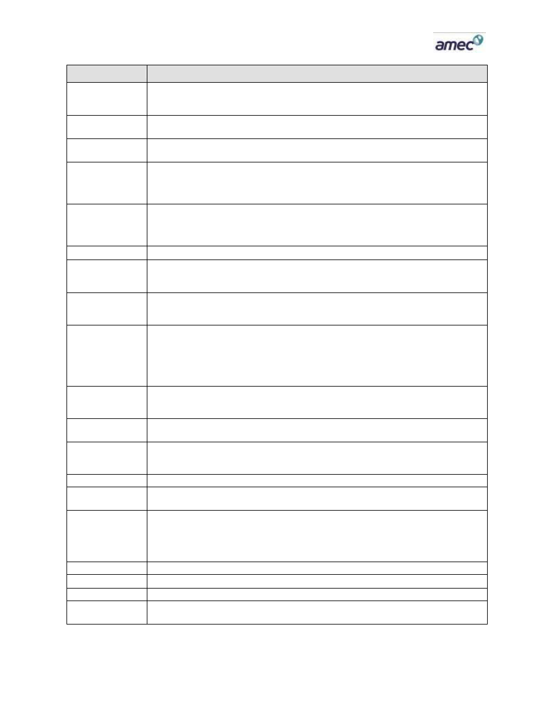
City of Poquoson, Virginia
Multi-Hazard Mitigation Plan
95
Term
Definition
National Weather
Service (NWS)
Prepares and issues flood, severe weather, and coastal storm warnings and can provide
technical assistance to Federal and state entities in preparing weather and flood warning
plans.
Nor’easter
An extra-tropical cyclone producing gale-force winds and precipitation in the form of heavy
snow or rain.
Objectives
Objectives define strategies or implementation steps to attain identified goals. Unlike
goals, objectives are specific and measurable.
Open Space
Preservation
Preserving undeveloped areas from development through any number of methods, including
low-density zoning, open space zoning, easements, or public or private acquisition. Open
space preservation is a technique that can be used to prevent flood damage in flood-prone
soils, and can enhance the natural and beneficial functions of floodplains.
Post-Disaster
Recovery Planning
The process of planning those steps the jurisdiction will take to implement long-term
reconstruction with a primary goal of mitigating its exposure to future hazards. The post-
disaster recovery planning process can also involve coordination with other types of plans
and agencies, but it is distinct from planning for emergency operations.
Probability
In terms of natural hazards, the likelihood a hazard event will occur in a given time period.
Repetitive Loss
Property
A property that is currently insured that has two or more NFIP losses (occurring more than
ten days apart) of at least $1,000 each and have been paid within any 10-year period since
1978.
Replacement Value
The cost of rebuilding a structure. This is usually expressed terms of cost per square foot,
and reflects the present-day cost of labor and materials to construct a building of a particular
size, type and quality. This is not the same as market value.
Risk
The estimated impact that a hazard would have on people, services, facilities, and structures
in a community; the likelihood of a hazard event resulting in an adverse condition that causes
injury or damage. Risk is often expressed in relative terms such as high, moderate or low
likelihood of sustaining damage above a particular threshold due to a specific type of hazard
event. It also can be expressed in terms of potential monetary losses associated with the
intensity of the hazard.
Special Flood
Hazard Area (SFHA)
An area within a floodplain having a 1 -percent or greater chance of flood occurrence in any
given year (100-year floodplain); represented on Flood Insurance Rate Maps by darkly
shaded areas with zone designations that include the letter A or V.
Stakeholders
Individuals or groups, including businesses, private organizations, and citizens that will be
affected in any way by an action or policy.
STAPLE/E
This methodology requires that the social, technical, administrative, political, legal, economic,
and environmental considerations be taken into account when reviewing potential actions for
the community to undertake.
Storm Surge
Rise in the water surface above normal water levels on the open coast.
Sub-Tropical
Depression
A weather system that has some characteristics of a tropical cyclone and some characteristics
of an extratropical cyclone.
Subdivisions and
Development
Regulations
Regulations and standards governing the division of land for development for sale.
Subdivision regulations can control the configuration of parcels, set standards for developer-
built infrastructure, and set standards for minimizing runoff, impervious surfaces, and
sedimentation during development. They can be used to minimize exposure of buildings and
infrastructure to hazards.
Tornado
A violently rotating column of air extending from a thunderstorm to the ground.
Tropical Cyclone
A generic term for a cyclonic, low-pressure system over tropical or subtropical waters.
Tropical Depression A tropical cyclone with maximum sustained winds of less than 39 mph.
Tropical Storm
A tropical cyclone with maximum sustained winds greater than 39 mph and less than 74
mph.
City of Poquoson, Virginia
Multi-Hazard Mitigation Plan
96
Term
Definition
Vulnerability
Assessment
The study of the extent of injury and damage that may result from a hazard event of a given
magnitude in a given area. Vulnerability assessments typically address impacts of hazard
events on the existing and future built environment.
Zoning Ordinances
Designation of allowable land use and intensities for a local jurisdiction. Zoning
ordinances consist of two components: a zoning text and a zoning map.
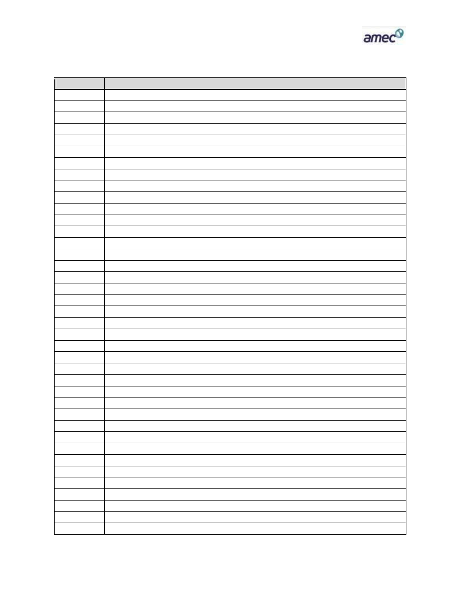
City of Poquoson, Virginia
Multi-Hazard Mitigation Plan
97
List of Acronyms
Acronym
Definition
BFE
Base Flood Elevation
BMP
Best Management Practice(s)
CERT
Community Emergency Response Team
CFM
Certified Floodplain Manager
CoBRA
Coastal Barrier Resource Area
CRS
Community Rating System
CZMA
Coastal Zone Management Act
DEM
Digital Elevation Model
DMA 2000
Disaster Mitigation Act of 2000
DRC Development
Review
Committee
DSR
Disaster Survey Report
FEMA
Federal Emergency Management Agency
FIRM
Flood Insurance Rate Map
FMA
Flood Mitigation Assistance Program
GIS
Geographic Information System
HMGP
Hazard Mitigation Grant Program
HREMC
Hampton Roads Emergency Management Committee
HRPDC
Hampton-Roads Planning District Commission
ICC
Increased Cost of Compliance
MHIRA
Multi-Hazard Identification and Risk Assessment
MLLW
Mean Lower Low Water
NCDC
National Climatic Data Center
NFIP
National Flood Insurance Program
NGVD
National Geodetic Vertical Datum
NHC
National Hurricane Center
NNW Newport
News
Waterworks
NOAA
National Oceanic Atmospheric Administration
NWS
National Weather Service
PDM
Pre-Disaster Mitigation Grant Program
PGA Peak
Ground
Acceleration
REMTAC
Regional Emergency Management Technical Advisory Committee
RMA
Resource Management Area
RPA
Resource Protection Area
SFHA
Special Flood Hazard Area
SLOSH
Sea, Lake and Overland Surges from Hurricanes
STAPLE/E Social,
Technical,
Administrative,
Political, Legal, Economic, and Environmental
UASI
Urban Area Security Initiative
USACE
United States Army Corps of Engineers
USGS
United States Geological Society

City of Poquoson, Virginia
Multi-Hazard Mitigation Plan
98
Acronym
Definition
VDCR
Virginia Department of Conservation & Recreation
VDEM
Virginia Department of Emergency Management
VDEQ
Virginia Department of Environmental Quality
VDHCD
Virginia Department of Housing & Community Development
VDOF
Virginia Department of Forestry
VDOT
Virginia Department of Transportation
VEC
Virginia Employment Commission
VIMS
Virginia Institute of Marine Science
VMRC
Virginia Marine Resource Commission
VUSBC
Virginia Uniform Statewide Building Code
City of Poquoson, Virginia
Multi-Hazard Mitigation Plan
99
APPENDIX A
2008/2009 City of Poquoson Hazard Mitigation Committee Members
Harold Horton
Citizen/CERT
Philip Prisco
Citizen/Wetlands Board
Julian Cox, Jr.
Citizen
Kevin Brennan
Citizen
Karen Credeer
Citizen
Cliff Coffman
Citizen
Bill Gilbert
Citizen
Tracy Hanger
Citizen/City of Hampton
Lisa Holloway
Citizen/CERT
J. Clifton Tinsley
Citizen
Tom Jones
Citizen
Steve Elledge
Citizen
Cory Gifford
Citizen
Emily Ashley
Emergency Management
Theresa Owens
Finance
Robin Bellamy
Finance
Kristin Moore
Finance
Cliff Bowen
Police Department
Percy Ward
Police Department
Robert Holloway
Fire Department
Jeff Bliemel
Engineering Department
Bob Speechley
Utilities Department
Robbie Coates
VDEM
Jonathan Montgomery Public Works Department
Jim Beach
Facilities & Grounds
Natalie Easterday
HRPDC
Richard Flannery
HRPDC
John Boon
VIMS
Debbie Vest
Planning Department
Joseph Carter
Planning Department
Greg Holloway
Building Department
Ken
Somerset
Building Department Charley
Banks VDCR
Amy Howard
VDEM
Sara Ruch
City of Hampton EP
Jim Gouthy
American Red Cross
Leigh Chapman
Salter’s Creek Consulting
Jeff Brislawn
AMEC Earth & Environmental
Clancy Philipsborn
AMEC Earth & Environmental
2004 City of Poquoson Hazard Mitigation Committee Members
Mr. Lester Pauls – Citizen
Ms. Regina Wightman – School Board
member
Mr. Richard Parker – Citizen
Ms. Eileen Leininger – Citizen
Miss Leslie Hunt – Citizen
Mr. Jack Moran – Citizen
Mr. Cliff Bowen – Citizen
Mr. Paul Kiddell – Citizen
Mr. Mark Bellamy - Citizen
City Staff
Chief C.E. Ward – Fire Chief
Chief John T. White – Police Chief
Graham Wilson – Commissioner of Revenue
Jody Hollingsworth – Planning Director
Bob Speechley – Utilities Superintendent
John Gill – Parks and Recreation Director
Ron Moore/Sherry Graham – Bldg. Official/Bldg. Tech
Jonathan Montgomery – Public Works Director
Bill Ingram/Buddy Faison - Assessor
Pam Moon – Finance Director
Jason Widstrom – Civil Engineer
Charlie Burgess – City Manager
Judy Wiggins – Assistant City Manager
Jeff Bliemel – Engineering Director
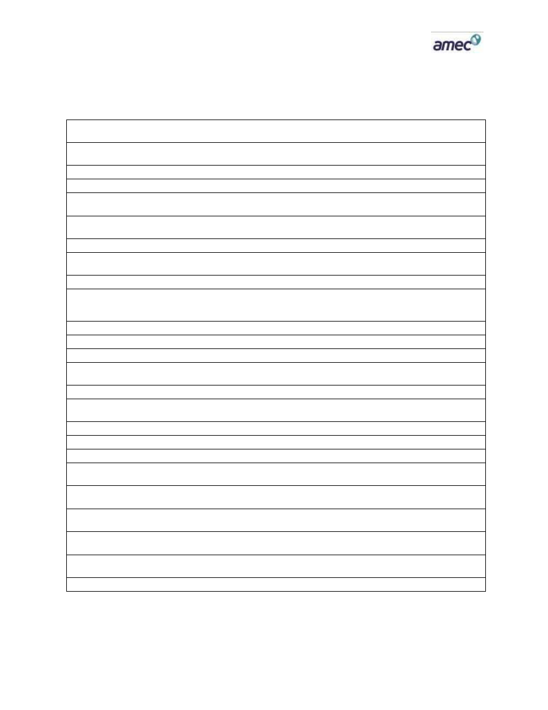
City of Poquoson, Virginia
Multi-Hazard Mitigation Plan
100
References
Boesch, Donald and Jack Greer, et al. Chesapeake Futures; Choices for the 21
st
Century Chesapeake Bay Program,
p. 33, available for viewing at http://www.chesapeake.org/stac/futreport.html.
Boon, John, Harry Wang, Jian Shen, undated. Planning for Sea Level Rise and Coastal Flooding. Virginia Institute
of Marine Science.
Boon, John, personal correspondence, February 8, 2009.
City of Poquoson. Undated. History of the City of Poquoson. http://www.ci.poquoson.va.us/history.html
Cook, Jody. 2000. A Place Called Langley Field: National Significance in American Military History and Civil Aviation.
National Park Service
Hampton Roads Planning District Commission. 2003. Hampton Roads Data Book.
http://www.hrpdc.org/economics/Databook03.shtml
Daily Press, March 11, 2009. Plum Tree Island: Bomb Sweep Completed, Jon Cawley.
Gifford, Cory, personal correspondence from FEMA AsktheExpert@mapmodteam.com, November 9, 2006.
(Customer #15214)
Lightning Strike Density Map, courtesy of National Weather Service, Wakefield, Virginia office, February 2009.
Jones, Christopher, William L. Coulbourne, Jamie Marshall, and Spencer M. Rogers, Jr. 2006. Evaluation of the
National Flood Insurance Program’s Building Standards, American Institutes for Research.
http://www.fema.gov/library/viewRecord.do?id=2592
MD Commission on Climate Change, 2008. Climate Action Plan Executive Summary.
National Climatic Data Center, 2008. http://www.ncdc.noaa.gov/oa/ncdc.html
NOAA Technical Report NOS CO-OPS 36, Sea Level Variations of the United States 1854-1999, July 2001.
North Carolina Division of Emergency Management. 2004. Nor’easters:
http://www.dem.dcc.state.nc.us/mitigation/noreaster.htm
Office of Technology Assessment, United States Congress, Preparing for an Uncertain Climate, 1993, p.156.
U.S. Army Corps of Engineers, Flood Plain Information Coastal Flooding, Town of Poquoson, Virginia, Norfolk
District. June 1971.
U.S. Bureau of the Census. 1981. 1980 Census
U.S. Bureau of the Census. 1991. 1990 Census
U.S. Bureau of the Census. 2001. 2000 Census
U.S. Fish & Wildlife Service. Undated. Plum Tree Island National Wildlife Refuge.
http://refuges.fws.gov/profiles/index.cfm?id=51512
Virginia Employment Commission. 2008. Virginia Workforce Connection - County / City / State Population
Projections. http://www.vawc.virginia.gov/gsipub/index.asp?docid=359
Virginia Department of Emergency Management. 2007. Commonwealth of Virginia Emergency Operations Plan,
Standard and Enhanced Hazard Mitigation Support Annex 3, Volume II.
Virginia Department of Emergency Management. October 31, 2008. Drought and Burn Ban Situation Report #27.
Virginia Emergency Operations Center
Weldon Cooper Center for Public Service. 2008. Demographics and Workforce.
http://www.coopercenter.org/demographics/POPULATION%20ESTIMATES/
Virginia Governor’s Commission on Climate Change. 2008. Final Report: A Climate Change Action Plan.
Document Outline